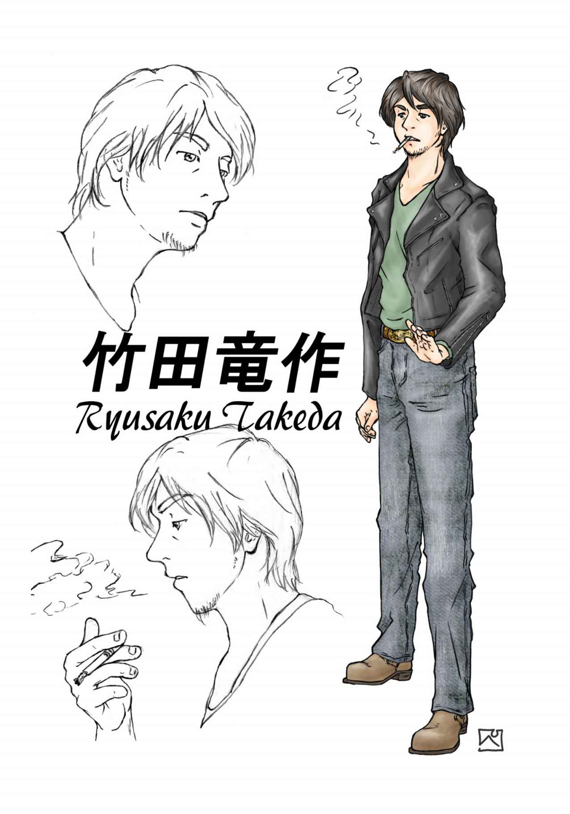
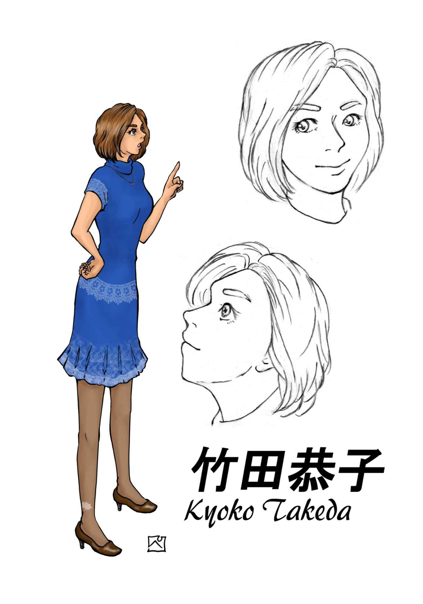
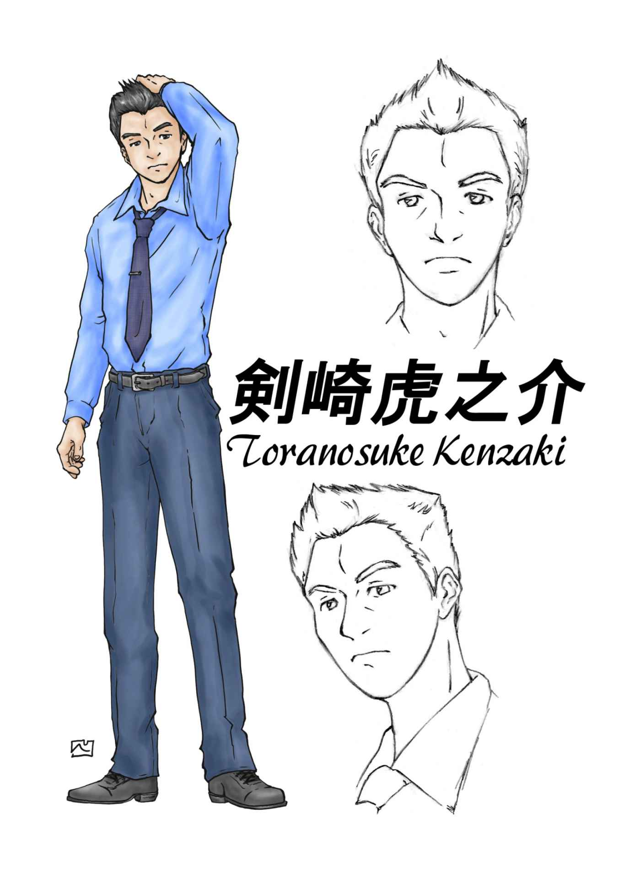
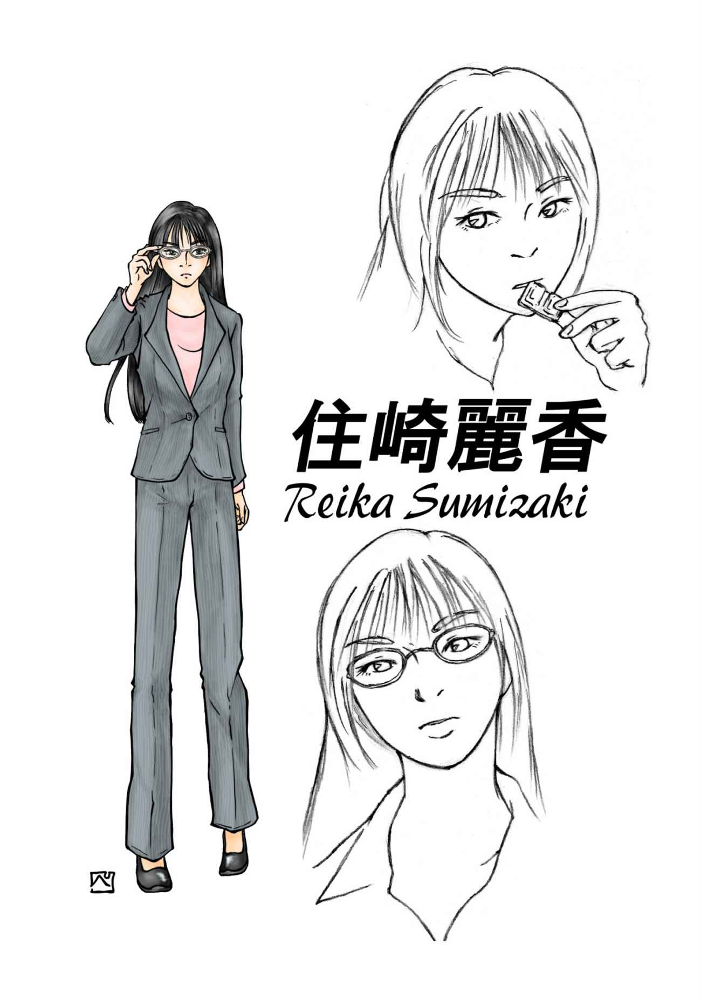
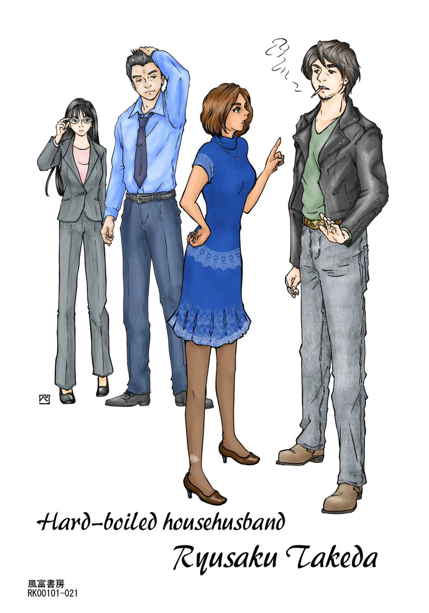

| ハードボイルド主夫 竹田竜作 | |
| 風富来人 | |
| RAITO KAZETOMI (2016) | |
風富 来人
はじめまして。著者の風富来人 と申します。
本書は一人でも多くの方に本編作品を読んでいただきたいという思いを込めて製作しました。
本編作品は二〇一四年六月に執筆を始め、少しずつ小説投稿サイト﹁小説家になろう﹂に投稿し、二〇一四年七月中旬にエピローグを書き上げ完結しました。
本編作品には当時持ち得る全ての筆力を注ぎ込みました。
しかし、小説執筆初心者が書いた中編小説処女作品なので、お金を払って購入していただけるような良質な作品ではありません。
よって、電子書籍については無料でご提供させていただくことにしました。
紙の本については印刷代及び製本代などの、本の製造単価のみを頂戴させていただきます。
本書にはいくつかの﹁おまけ﹂をお付けしました。本編作品をよりお楽しみいただくために特別にお付けしたのが、電子書籍と紙の本にのみ収録した主要登場人物のイメージイラストです。
本書をお読みいただき、電子書籍ブラウザのライブラリの片隅や、書斎の本棚の片隅に置いていただけたら幸いです。
俺は今ボスから与えられた任務を終え、ひと時の休息を取っている。
任務終了後に吸うたばこは格別に美味い。
今回の任務も俺の手にかかれば夕食後の腹ごなしにもならなかった。
明日も明後日も同じ任務を繰り返す。
ボスと俺がコンビを組む時に取り交わした契約だ。反故にすることはできない。
二本目のたばこを吸おうとした時、ボスが俺を呼んだ。
﹁あなた、フライパンがまだ残ってるわよ﹂
我が家では食器洗いは俺の任務になっている。
﹁ハードボイルド主夫 竹田竜作﹂は、右記の二百文字小説を執筆したことがきっかけで生まれました。
﹁竜作 、あなたずっと家にいるのなら専業主夫やってよ！﹂
結婚して五年、現在無職の俺に対する我が家のボス︵俺は陰で妻のことを﹃ボス﹄と呼んでいる︶からの突然の提案だった。
俺は専業主夫になることを引き受けるが、俺が専業主夫になることは以前から決まっていた。
そう、俺が雇用されていた会社からリストラされた日から決まっていたことだ。
仕事だけの毎日だった男、竹田竜作 の専業主夫としての新たなる戦いが始まる。
﹁竜作 、あなたずっと家にいるのなら専業主夫やってよ！﹂
結婚して五年、我が家のボス︵俺は陰で妻のことを﹃ボス﹄と呼んでいる︶からの突然の提案だった。
昨年末に雇用されていた会社からリストラされ現在無職の俺に対する提案。
これまでの間、転職活動をしていなかったわけじゃない。
これまでの戦績は十九連敗、全て書類選考の段階で落とされた。
今日あいにくにも二十連敗目の不採用通知が届き、業を煮やしたボスがとうとう最後の切り札を出したわけだ。
これまで夫婦共働きだったが正直言ってボスの方が稼ぎが良い。
無職の手前、俺に異論を挟む余地は無かった。
実は俺が専業主夫になることは、昨年末に雇用されていた会社からリストラされる時点で決まっていた。
俺が勤めていた会社はボスの伯父が社長を務めている玩具会社だった。
ボスの伯父の平沼武雄 はボスのことを溺愛していた。
平沼武雄社長は末期の肺癌を患い病床に伏せていた。
そんな折に社長の長男で副社長の雄一 氏と、次男で専務取締役の雄二 氏と俺の三人が病室に呼ばれた。
社長はか細い声で俺達に遺言を残した。
﹁雄一、私の亡き後の社長はお前に任せる。好きなようにやれ！﹂
﹁はい、お父さん！﹂
﹁雄二、お前には副社長とお客様相談室長を兼任してもらう。この意味はわかるな？﹂
﹁はい、お父さん、必ずお客様へご安心を提供します﹂
﹁最後に竜作君、恭子 はあんたにべた惚れだ。恭子のことをよろしく頼む﹂
﹁はい、必ず恭子さんとの幸せな生活をお約束します﹂
﹁それを聞いて安心したよ。しかし君には申し訳ないが君は今日付けでクビだ﹂
﹁えっ、社、社長、それは一体どうしてですか？﹂
﹁君には恭子のことを二十四時間体制で守ってもらいたい。恭子に幸せな生活を送らせることが、私の弟、恭子の父親と約束した最優先事項なんだよ。今はわからないかもしれないが、おいおいわかってくるはずだ。恭子を守れるのは君しかいない。いっそ専業主夫になるといい。どうかよろしく頼む﹂
﹁は、はい......﹂
ボスの知らない間でそんな約束事が取り交わされていたのだ。
それから数日後、社長は静かに息を引き取った。
社長が俺に残した遺言の真意はわからない。
しかし、社長と取り交わした約束通りに俺は専業主夫になることになった。
俺は表面上ボスの提案を受け入れる形で専業主夫になり、俺の生活は次の日から一変した。
昨晩、寝る間際にボスから一言。
﹁竜作、明日から専業主夫なんだから朝食の準備よろしくね﹂
﹁えっ、あっ、うん......﹂
﹁あと掃除、洗濯、買い物もやってもらわなきゃ！﹂
﹁徐々にやっていくよ。俺もう寝るよ。おやすみ﹂
﹁おやすみなさい﹂
専業主夫初日、最初の任務は﹁朝食作り﹂だ。
昨日までの俺は、ボスが会社に出かけた後の九時頃に起き出し、食卓に置かれているボスが朝食を食べるのに使った食器類をヒントに朝食が何であるかを推理して食べていた。
まあ、推理するほどもなく我が家の朝食は十中八九トーストに目玉焼きなんだけど......。
しかし、今日から朝食作りは俺の任務だ。俺は眠い目をこすりつつ昨日より二時間早く七時に起きて朝食の準備に取り掛かった。
結婚する前は一人暮らしで家事の一通りをこなしていたんだ。問題なくやれるはずさ。
我が家の朝食はトーストに目玉焼きがメインなのだが、ボスと俺、お互いに好みの差があって準備には割と手間がかかる。
トーストはボスはバターを塗ってチーズを乗せるが、俺はバターを塗らずにチーズを乗せる。
パンが二枚同時に焼けるトースターなのでパンを焼くのは簡単だ。
問題は目玉焼きだ。
目玉焼きはハムエッグかベーコンエッグだが今日はハムエッグだ。
ボスと俺とでは目玉焼きの焼き方が異なる。
ボスの好みはサニーサイドアップ︵片面焼き︶で、俺はターンオーバー︵両面焼き︶が好みだ。
目玉焼きを焼いている間にコーヒーメーカーでコーヒーを淹れる。
俺はブラックで飲むが、ボスはコーヒーが苦手なのでコーヒーに粉末のココアを混ぜる。
以前﹁それ美味いのか？﹂とボスに訝しげに聞いてみたことがある。
﹁あら、美味しいわよ。良かったら飲んでみる？﹂とすぐに返事が返ってきた。
飲んでみたら意外と美味かった。今では俺もたまにココアのコーヒー割りを飲んでいる。
これで今朝の朝食はできあがり。自分で作るのは久しぶりなので今朝は少々手間取ったが明日からは慣れていくことだろう。
時間は七時十五分、そろそろボスを起こさなければならない。
俺はボスをそっと起こす。ボスは低血圧で朝は非常に機嫌が悪い。
﹁恭子おはよう、朝食の準備ができたよ﹂
﹁う、う～ん、おはよう竜作。初日からできるとは感心感心！﹂
今朝のボスは機嫌が良いようだ。ほっと一安心。
ボスが洗顔した後、ボスと俺は食卓を囲んだ。
﹁いただきます！﹂
﹁いただきます！﹂
﹁うん、美味しい！ これからもこの調子で頼むよ。新米専業主夫くん！﹂
﹁へ～い、頑張りま～す！﹂
しばしの食休みの後、テレビでイケメン俳優が料理をするコーナーが始まるとボスはそそくさと身支度を整え始めた。
俺はおもむろに食べ終えた後の食器をキッチンで洗い始めた。
﹁それじゃ竜作、行ってきます！﹂
慌ただしくボスが玄関から出て行く。
﹁行ってらっしゃい、気をつけてね﹂
聞こえたかはわからないが挨拶を返す。
専業主夫初日の最初の任務、﹁朝食作り﹂は無事に終えることができた。
俺は小さな達成感を感じつつ、ベランダに出てたばこを一本吸った。
最初の任務︵朝食作り︶を終え、一息つき二度寝をしようと思っていた矢先、九時過ぎにボスから携帯電話に一通のメールが届いた。
﹃今日は天気が良いのでお風呂の残り湯で洗濯して。期待してるわよ新米主夫さん♪ ﹄
俺は短く﹃了解しました。﹄とだけ入力し返信メールを送った。
やれやれ、ボスからの次の任務の依頼だ。断ることはできない。
任務を放棄したらボスからお咎 めを食らうはずだ。おとなしく任務を実行しよう。
洗濯物はタイミングを見計らってまとめて一気に洗うに限る。
ボスの言う通り今日は天気が良い。絶好の洗濯日和だ。
俺は二度寝を諦めて洗濯に取り掛かった。
洗濯は俺が独身時代、一人暮らしの頃から愛用している全自動洗濯機﹁うずしおくん﹂が活躍してくれる。
﹁うずしおくん﹂という名前は俺が勝手に名付けた。一応一流メーカーの製品なのだが主力製品ではなく廉価版製品で、特に愛称は無く無機質な型番のみだったので愛着が湧くようにと名付けた。
洗濯物を分類しデリケートな衣類は洗濯ネットに入れてから﹁うずしおくん﹂の洗濯槽に放り込む。
ボスの下着類やストッキングには細心の注意を払う。
俺のＴシャツやパンツは洗濯槽にそのまま放り込むが、ボスの下着類とストッキングは必ず洗濯ネットに入れなければならない。
注水ホースを浴室の浴槽に入れ、﹁うずしおくん﹂の洗剤入れに洗剤を入れる。
電源ボタン、ふろ水ボタン、スタートボタンを押して洗濯が始まる。
今日も頑張ってくれよ、﹁うずしおくん﹂。きれいな洗いあがりを期待してるぞ！
﹁うずしおくん﹂が洗濯している間に俺はベランダでたばこを二本吸い、吸い終えると近所のコンビニにたばこを二箱買いに行った。
たばこを買って自宅に戻ると﹁うずしおくん﹂はまだ洗濯の途中だった。俺は朝食の時に作ったコーヒーの残りをマグカップに注ぎ、自室で椅子に座りコーヒーを啜りながら洗濯が終わるのを待った。
ふと物思いにふける。
それにしても昨年末の会社からの突然の解雇が妙に気にかかる。
在職期間中に一方的に解雇になるようなミスは一つも犯していない。大きなミスも些細なミスも一つも犯した覚えはない。なぜだ？ なぜ俺は解雇されたんだ？
考えあぐねていると洗面所から洗濯終了のアラームが聞こえてきた。俺は考えるのを止めて洗面所に向かい、﹁うずしおくん﹂の洗濯槽から洗いたての洗濯物をランドリーバスケットに移し入れた後、両手に抱えてベランダに向かった。
ベランダに出てランドリーバスケットから洗いたての洗濯物を一つずつ取り出し、大雑把にしわを伸ばしてから物干し竿に直接もしくは、ハンガーや角型ハンガーにかけていく。
洗濯物を干し終えると俺は自室に戻り、携帯電話を手に取りボス宛に﹃洗濯完了しました。﹄とメールを送った。
俺はたばこを吸いに再びベランダに向かった。
また一つ無事に任務を終えることができた。
俺は暖かな日差しと爽やかな風を全身に感じながら任務完了後のひと時の休息を満喫した。
時計は十二時を過ぎた。昼飯時だ。腹が減った。
俺はキッチンに向かい冷蔵庫を開けた。
冷蔵庫の中には昨日の晩飯のおかずは残っておらず、腹の足しになるような食材は見当たらなかった。
いや、正確には野菜室にはキャベツやニンジンが、冷凍庫には冷凍されている牛肉や豚肉、冷凍食品が、キッチン脇に置いてあるバスケットの中にはジャガイモやタマネギがある。食器戸棚の引き出しの中や、食料庫の中にも調理して食べられる食材はたくさんあるのだが、新米主夫の料理スキルは極めてゼロに近く、元来のものぐさな性格が何かを調理して食べようという気を起こさせなかった。
﹁アレ﹂しかない。
これまでも幾度となく俺の窮地を救ってくれた﹁アレ﹂しかない。
炊飯ジャーの中には飯が一人前残っている。
冷蔵庫の中には生卵がある。
俺の今の料理スキルとモチベーションで作れる料理は一つしかない......。
俺は丼に炊飯ジャーの中に残っている飯を一粒残らずぶち込むとレンジでチンした。
レンジで温めた丼飯をすかさず取り出し、生卵を割り入れ醤油をほんの少し垂らす。
今日の昼食はこれで完成、﹁竜作特製卵かけご飯﹂のできあがり！
﹁いただきます﹂の挨拶をするやいなや、飯をかきこむ。ただひたすらに一気にかきこむ......。
今ひと時だけの飢えがしのげればそれでいいとでも言わんばかりに無心で食った。
飯の一粒たりとも残さず食べ終えた時、俺の心中に去来したのは侘びしさだった......。
侘びしさを感じながらもコップ一杯分の水を飲んで一息ついた。
他の家事なら一人暮らしの時に経験済みだ。なんとかできるはず。
しかし、料理に関しては目玉焼きとカレーが作れるくらいだ。
ボスに料理を教えてもらおう。
カレールウの買い置きがあったはずだ。今夜の晩飯はカレーにしよう。
俺は侘びしさを紛らわすため食後の一服を吸うためにベランダへと向かった。
昼食を食べ終えて一息ついた後、俺は毎日散歩がてらにハローワークに足を運ぶ。
ハローワークは自宅から歩いて二十分ほどの距離にある。
ボスと結婚してこの土地に引っ越して来た時には、ハローワークのご厄介になるとはゆめゆめ思わなかった。
昨年末に玩具会社をリストラされて以来この半年間足繁く通うようになり、今ではハローワークで働く職員さんとも顔なじみだ。
ハローワークへ向かうと入口の階段脇で求人票を片手にしかめっ面をしている顔なじみを見つけた。元金型職人の玄 さんだ。俺は玄さんに声をかけた。
﹁こんにちは、玄さん。良い仕事見つかった？﹂
﹁おう、竜ちゃんか。ダメだねぇ。からっきしダメだねぇ......﹂
﹁そっか......﹂
﹁竜ちゃんはこれからかい？﹂
﹁うん、これから。カミさんに今日から専業主夫になれって言われちゃったよ﹂
﹁専業主夫かぁ。専業主夫も大変だよ。それでもここに通うとはご苦労なこったね﹂
﹁まだ初日だから大したことしてないけどね。ま、仕事が見つかるまではここに通うつもりだから﹂
﹁そうかい、頑張んな！﹂
﹁うん、玄さんもね﹂
俺は玄さんとの短いコミュニケーションを終えるとハローワークの入口に向かった。
ハローワークの入口を通ると正面に検索端末機の利用窓口がある。俺は窓口の職員から検索端末機の番号札を受け取り、番号札に記載されている利用可能な検索端末機の席に向かった。
検索端末機の利用可能時間は三十分、求人票の印刷できる枚数にも制限がある。いかに早く希望条件に沿った良い求人票を探し出せるかがポイントだ。
俺が狙っている求人は警備員やガードマンなどの職種だ。
俺は一見華奢に見えるけど、自分で言うのも何だが細マッチョで、こう見えて空手三段、柔道二段の腕前だ。
希望条件を次々と入力していき検索ボタンを押す。検索すると該当件数は一件、該当した会社の会社名は平和玩具株式会社。昨年末に俺をリストラした会社だ。毎回同じ検索結果だ。検索結果を見るたびに怒りがこみ上げてくる......。
俺が平和玩具株式会社に勤務していた頃はお客様相談室に在籍していた。
平和玩具株式会社では、おもちゃの製造・販売だけではなく、お客様にちょっと変わったサービスを提供していた。
そのちょっと変わったサービスというのは、ベビーシッターの派遣、お子様向けのボディガード派遣サービスだ。俺は空手三段、柔道二段の腕前を買われてボディガードをやっていた。
ボディガード派遣サービスの用途は、裕福な家庭のお子様の学校への送り迎えや、小学校での集団下校時の通学路の監視がメインだった。
落ち着け、竜作。クールにいこうぜ、竜作......。
俺は希望条件を少し低く設定して再度検索ボタンを押した。検索結果は該当なし、ゼロ件だった。
﹁今日も空振りか......﹂
検索端末機の画面を見つめながらつい独りごちてしまった。
俺は席を立ち窓口に向かい、検索端末機の番号札を職員に返却してハローワークを後にし自宅へ戻った。
ハローワークから戻るとまた腹が減ってしまった。
昼食が卵かけご飯一杯だったのだから仕方ない。
俺はダイニングへ向かった。
ダイニングテーブルの上にはのり塩味のポテトチップスが三袋置かれている。
誰にも一つや二つはこだわりの品があると思う。
かの有名な小説家、アーネスト・ヘミングウェイは﹁モヒート﹂というカクテルを愛飲していたことで知られている。
俺も酒、特にウオツカにはこだわりを持っている。
ウオツカの中でも瓶の中にズブロッカ草の茎が入っている香り豊かな﹁ズブロッカ﹂が俺の一番のお気に入りだ。
のり塩味のポテトチップスはボスの大好物で、こだわりの品と言っても過言ではない。
俺一人で食べることは決して許されない。
もし俺一人で食べてしまえば、待っているのは延々と続くボスのお小言だ。
決してポテトチップスに手を出してはいけない......。
それにしても喉が渇いた。ハローワークでの検索結果が芳しくなかったことで落ち込んでもいる。
俺は冷蔵庫から第三のビールを取り出し喉を潤した。
﹁く～っ！﹂
平日の午後に飲む酒は実に美味い！ 専業主夫だからこそ味わえる役得かもしれない。
第三のビールを飲んで一息ついた後、俺はダメだとわかっていながらも無意識のうちにポテトチップスの袋の封を開け食べ始めてしまった。
口の中に広がるのり塩味のポテトチップスの食感と同時に薄れていく酔い心地......。
俺は瞬く間に青ざめていくのがわかった。
﹁俺はなんてことをしてしまったんだ！﹂
俺は大声で独りごちた。
やっちまった、やっちまった！ 俺は取り返しの付かないことをやっちまった！
いや待て、竜作。俺はまだ一口しか食っていない。今ならまだ笑って済ませられるレベルだ。落ち着け......。
落ち着きを取り戻すためにまた第三のビールで喉を潤す。またポテトチップスを一口頬張る。
声にならない悲鳴が上がる。
ダメだ、竜作。おとなしくポテトチップスの袋を手放すんだ。今ならまだ間に合う。今なら﹁ポテトチップス少し食べちゃった。てへっ！﹂で済ませられるかもしれない。
俺は食べかけのポテトチップスの袋に洗濯バサミで封をして、何事もなかったかのようにダイニングテーブルの上の残り二袋のポテトチップスの隣に置いた。
危なかった。もう少しで﹁一袋全部食っちまえよ！﹂という悪魔の囁きに耳を傾けるところだった。
俺は第三のビールを一缶飲み干してたばこを吸いにベランダへと向かった。
ふと手元を見るとたばこを持つ左手とライターを持つ右手が小刻みに震えていた。
時計は午後五時を過ぎた。
そろそろ洗濯物が乾いた頃だろう。俺はベランダに出て洗濯物を取り込み始めた。
今朝のテレビの天気予報では夕方から激しい雷雨があるとの予報だったが、空模様を見る限りでは雨は降らなそうだ。
しかし、手早く洗濯物を取り込みハンガーや角型ハンガーも室内に仕舞いこむとしよう。
洗濯物とハンガー類を室内に取り込むと俺は間髪入れずに洗濯物をたたみ始めた。
洗濯物は取り込んだ後すぐにたたむに限る。そのままにしておくとたたむのが億劫になってしまう。
タオル、靴下、俺のＴシャツ、俺のパンツ、ボスの衣類を黙々とたたむ。﹁メインディッシュ﹂は最後にとっておく。
俺の言う﹁メインディッシュ﹂とは、ボスの下着類、ブラのジャーとパンのティーのことだ。
メインディッシュを残し他の洗濯物は全てたたみ終わった。これからいざメインディッシュのたたみに入る。
まずは、ブラのジャー。ボスの豊満な胸をカバーする魅惑の下着。大学時代の先輩のお子さんがブラジャーのことを﹁おっぱいカバー﹂と呼んでいた。さすが俺が慕っている先輩のお子さん。なかなかのネーミングセンスをお持ちだと思う。
ブラジャーは我が家では基本的には二つ折りだ。いとも簡単に済んでしまう。
最後に残るはパンのティー。ボスのグラマラスなヒップをカバーするセクシーな下着。
たたんでいて毎回思うのだが、こんな小さい生地によくあのボスのヒップが収まるものだとつくづく感心してしまう。
パンティーは我が家では丁寧に三つ折だ。
友人や知人夫婦の話によると、奥さんの下着は旦那にはあまり触れさせないと聞いたことがあるが、ボスからの信頼の証であろうか、我が家では俺がたたんでも怒られることはない。むしろ﹁洗濯物をたたんでくれてありがとう﹂と喜ばれるくらいだ。
洗濯物をたたみ終えるとそれぞれをタンスの引き出しやリネン庫など、所定の置き場所に戻していった。
次に取り掛かるのは浴室の浴槽の掃除だ。
浴槽掃除用のスポンジに浴槽に残っている残り湯を含ませて浴槽を軽く洗っていく。ほぼ毎日行っている作業なのでほとんど汚れていない。
最後に浴槽の栓を抜き浴槽に残っていた残り湯を流し、シャワーでサッとひと通り水を流せば浴室の浴槽の掃除は終了だ。浴室全体の掃除はボスからの指令が下るまで放っておこう。
ボスに﹁竜作、あなたずっと家にいるのなら専業主夫やってよ！﹂と言われたが、今のところ昨日までの俺と今日の俺に大きな変化はない。洗濯や洗濯物の取り込み、洗濯物たたみ、浴室の浴槽の掃除はこれまでにもやってきた。今日から朝食作りが新たに加わったが専業主夫としての作業が増えるのは本格的には明日以降からだろう。
俺は少しの不安を感じながら洗面所の鏡で自分の顔をしばしの間見つめた。
時計は午後六時を過ぎた。
昼食を食った時に決めた通り、俺はカレー作りに取り掛かった。
今回のカレー作り、失敗は許されない。
なぜならば、さきほどおやつの時間に誤ってポテトチップスを食べてしまったことをカレーを作ったことでチャラにしたいという思惑があるからだ。
食器戸棚の引き出しの中からカレールウを一箱取り出し、箱の裏面の説明文にひと通り目を通す。
材料に不足はない。俺はキッチン脇に置いてあるバスケットの中からタマネギ三個とジャガイモ二個を取り出し、冷蔵庫の野菜室からニンジンを一本、冷凍庫から冷凍されている豚肉のパックを取り出した。
豚肉を電子レンジで解凍している間にタマネギ、ジャガイモ、ニンジンをひと口大の大きさに切っていく。その後解凍した豚肉をこれまた同じくひと口大の大きさに切っていく。
厚手の鍋に油を垂らしひと口大に切った具材を放り込みじっくりと炒めてから水を加える。
沸騰したらアクを取り、約二十分ほど煮込む。
煮込みが終わったら一旦火を止めてカレールウを割り入れてよく溶かす。
仕上げに時々かきまぜながら煮込み、とろみがついたらできあがりだ。
包丁の扱いさえ注意すれば小学五年生でもできるはずだ。俺の手にかかれば朝飯前、いや夕飯前だ。
俺は一仕事やり終えた達成感を感じつつ、携帯電話とたばことライターを持ってベランダに向かった。
俺はたばこを吸いながらボスにメールを送った。
﹃カレー作ったよ。残業はほどほどにして早く帰って来てね。﹄
二本目のたばこに火をつけたところでボスから返信メールが届いた。
﹃えーっ！ ハヤシライスの方が良かった！ って言うのはウソ♪ 初日から張り切ってるじゃん！ えらいえらい！ 今買い物してるところ。もう少ししたら帰ります。ご飯炊く準備した？ ご飯炊く準備忘れるのはありがちパターンだよ！﹄
おっと、飯を炊く準備をすっかり忘れてた。危うくカレーライスがカレースープになるところだった。
﹃すっかり忘れてた。ナイスフォローに感謝します。﹄
二本目のたばこを吸いながらボスに返信メールを送った。
二本目のたばこを吸い終えると俺はキッチンに戻り炊飯ジャーの釜に米三合と水を入れ飯を炊く準備した。
飯を炊く準備をして三十分ほど経った頃、ボスが帰って来た。
﹁ただいま～﹂
﹁おかえり～﹂
ボスはハイヒールをスリッパに履き替えパタパタとダイニングに入って来た。
﹁今夜はカレーだって？ 作ってくれてありがとね。何か変わったことあった？﹂
女の勘なのだろうか？ 率先してカレーを作ったことで何か怪しまれている......。
﹁実は恭子の大好きなポテトチップス少し食べちゃった。ごめん！﹂
﹁......。いいわ、三袋もあるし。それよりもこれ、竜作にプレゼント！﹂
ボスから小さな包みを手渡された。
﹁開けてみて﹂
﹁うん！﹂
俺は小さな包みを丁寧に開けた。開けてみると中にはエプロンが入っていた。
﹁それ、竜作専用のエプロン。私のとお揃いだよ！﹂
﹁あ、ありがとう﹂
﹁なにそれ？ 感情がこもってないなぁ......﹂
﹁い、いや嬉しいよ。嬉しいんだけど、これまでエプロンを着けたことがあまりないからイマイチピンとこなくて......﹂
﹁そっか、エプロンって便利だから今日から使って。夕食後の食器洗いが待ってるから﹂
﹁う、うん......﹂
その後一息ついてから飯を炊き二人仲良くカレーを食べた。
夕食後、食後の一服を吸いにベランダに向かった。
俺はため息とともにたばこの煙を吐き出した。
やれやれ、ボスは本気で俺に専業主夫をやってもらいたいらしい......。
明日以降のことを考えると俺は少しだけ憂鬱な気分になった。
ボスが風呂に入っている間にプレゼントされたエプロンを着けてキッチンで食器洗いを済ませる。
皿にこびりついたカレーの油汚れがひどかったが、俺の手にかかれば全く問題ないことだ。
まぁ、俺の皿洗いのテクニック云々よりも食器用洗剤の洗浄力のおかげなのだが......。
専業主夫としての初日最後の仕事を終えた。
俺はボスが風呂から上がってくるのをベランダでたばこを吸いながら待った。
一仕事終えた後に吸うたばこは格別に美味い。
俺はたばこを咥えながら大きく伸びをした。
﹁竜作～、お風呂上がったわよ。次どうぞ～﹂
﹁おう、すぐ入るよ﹂
俺が無職になってから極力一番風呂はボスに入ってもらっている。
今我が家の家計を支えているのはボスだ。ボスが一番風呂に入るのは当然の権利だと思ったからだ。
シャンプーで髪を洗い、ボディソープで体を洗ってから湯船に浸かる。
風呂は良い。一日の疲れを癒やすには風呂に浸かるに限る。
風呂から上がると俺はバスタオルで髪を拭きながらキッチンに向かい冷蔵庫から第三のビールを取り出した。ボスはダイニングテーブルの椅子に座りテレビを見ている。
﹁私も飲もうかな。竜作、私の分も取ってよ﹂
﹁ああ﹂
俺は冷蔵庫からもう一缶第三のビールを取り出しボスに手渡した。
﹁ありがとう。ポテトチップス食べる？﹂
﹁ああ﹂
﹁封を開けたら早く食べないと湿気っちゃうからね～﹂
﹁......、ごめん﹂
俺は短く謝罪の言葉を述べ、ダイニングテーブルの椅子に座った。
﹁それじゃ竜作、専業主夫初日お疲れ様でした。乾杯！﹂
﹁乾杯！﹂
﹁専業主夫としての初日はどうだった？﹂
﹁今日から新たに朝食作りが加わって、あと夕食にカレーを作っただけで、その他にやったことと言えば洗濯ぐらいかな......﹂
﹁あら、そう。やることは他にもたくさんあるわよ。買い物や部屋の掃除でしょ、部屋の掃除は最低週に二回はやってもらいたいわ。それにトイレ掃除でしょ、玄関まわりの掃除でしょ、窓拭きでしょ、それからキッチンの換気扇の掃除でしょ、夏に備えてエアコンのフィルターも掃除してもらわなきゃ。あとそれから......﹂
ボスは第三のビールを飲みポテトチップスをつまみながら、家事の細かい項目を列挙していった。
﹁おいおい恭子、そんなにたくさんはできないよ。聞いただけで頭がパンクしちまいそうだ......﹂
﹁あら、一度にやろうと思うからできないのよ。毎日一つずつこなしていけばそれほど大変じゃないわ﹂
﹁そういうもんかね？﹂
﹁そういうものよ﹂
﹁それじゃ明日は何をやればいい？﹂
﹁明日はスーパーへの買い物が最重要項目ね。明日はスーパーの特売日なの！﹂
﹁特売日かぁ......。俺一人で大丈夫かな？﹂
﹁大丈夫よ、期待してるわよ、竜作！﹂
﹁う、うん﹂
そんな話をしているうちに第三のビールとポテチップスの袋は空になった。
﹁私もう寝るわ。竜作も早く寝てね。おやすみなさい﹂
﹁ああ、おやすみ﹂
俺は第三のビールの空き缶とポテトチップスの空き袋を始末した後、今日最後の一服を吸いにベランダに向かった。
たばこに火をつける。時計は午後十時を過ぎた。辺りは静まり返っている。
﹁明日からが本番だな......﹂
月明かりに照らされながら俺は小さく独りごちた。
今朝もしっかり朝食を作りボスを笑顔で送り出した。
昼食には昨日の夕食のカレーの残りをしっかり食った。
午後一時、俺は今近所のスーパー﹁スーパーヨコカワ﹂の向かいにあるたばこ屋の軒先でたばこを吸っている。
今日は六月十七日、七のつく日はスーパーヨコカワの特売日だ。
スーパーヨコカワの営業時間は朝九時から夜九時半まで。ボスの仕事帰りでも買い物に来れるので重宝している。
スーパーヨコカワの入口付近は人で溢れている。俺はもう既にたばこ屋の軒先でたばこを四本吸っている。それというのも俺は人混みが大の苦手だ。あの人混みの中に入っていく勇気がない......。
スーパーヨコカワへはこれまでにも何度か一人で買い物に来ている。今日が初めてってわけじゃない。
しかし、これまでに一度だけ七のつく日に買い物をして主婦達の勢いに圧倒された記憶が焼き付いている。それ以来、七のつく日の買い物はボスに任せていた。
週末にボスと二人で買い物に来る際も、ボスに買い物を任せて俺はたばこ屋の軒先でたばこを吸いながらボスが買い物を終えて出てくるのを待つのがパターンと化していた。
そう、俺はこれまで極力スーパーヨコカワでの買い物を避けてきたのだ。
﹁スーパーの特売日は主婦達の戦場よ。竜作、グッドラック！﹂
ボスが朝出かける前に俺にかけてくれた言葉が脳裏によみがえる。
落ち着け、竜作。クールにいこうぜ、竜作......。
ガキのはじめてのおつかいじゃないんだ。買い物くらいクールにこなしてみせるぜ！
俺は意を決してスーパーヨコカワに入っていった。
店内に入るとどこもかしこも主婦達でごった返している。
買い物カゴを右手に持ち、左手でジーンズの左前ポケットから買い物メモを取り出す。この買い物メモの通りに商品を買い物カゴに入れて精算すれば終わりだ。おっと、﹁特別ボーナス﹂を買うのも忘れてはいけない。要注意だ。
俺の言う﹁特別ボーナス﹂とは、五個入りの豆大福と三本入りのみたらし団子のことだ。
実は俺は甘いもの好きだ。他の商品を買い忘れても特別ボーナスのゲットは俺にとっては最重要項目だ。ボスからも買うことについては了承を得ている。
入口付近は野菜コーナーだ。キャベツ、ニンジン、ジャガイモ、タマネギを次々と買い物カゴに入れていく。
人混みをかき分け肉類のコーナーに移り豚肉と焼売を買い物カゴに入れていく。
再び人混みをかき分けてパンコーナーに移り六枚切りの食パン三斤と特別ボーナスの豆大福とみたらし団子をゲット。
俺はパンコーナーの左隣のアイスコーナーにふと視線を向けた。
何？ アイスが四割引きだって？ そんな情報ボスから聞いてないぞ！
今日は暑い。ボスの分も買えば特別ボーナス以外のご褒美を買っても問題ないだろう。
俺は六本入りのチョコアイスバーを買い物カゴに入れた。
最後に卵と納豆を買い物カゴに入れ、買い物カゴの中身と買い物メモの商品項目を照合した。
よし、買い忘れは無い！ 後は精算だ！ 俺はレジへ向かった。
レジへ向かうとどのレジも長蛇の列を作っていた。精算を待つ列の最後尾は縦長の店内の最奥まで続いていた。
これだよ、人混みの他にもこれも嫌なんだよ。この無駄に待たされる時間が嫌いなんだよ......。
俺は長蛇の列の中でも一番短そうな列の最後尾に並んだ。
今日はアイスも買っているんだ。あんまり待たされるとアイスが溶けちまう......。
精算の列に並んで待つこと十五分、やっと俺の順番が回ってきた。
レジ打ちのおばちゃんは、素早く商品をポスレジのスキャナーでスキャンしていく。
﹁お会計、千八百九円です！﹂
レジ打ちのおばちゃんはせっかちに精算金額を俺に告げた。
俺は財布から二千円を取り出しトレーに置いた。
﹁百九十一円のお返しです。ありがとうございました！﹂
レジ打ちのおばちゃんは勢い良くレシートとお釣りを俺に手渡した。危うくお釣りを落としそうになってしまった。
精算を済ませて買った商品をレジ袋に入れる。これもまた一苦労だ。俺は買った商品を丁寧にレジ袋二袋に収め入れ店を後にした。
キャベツが重い。レジ袋が指に食い込む......。
自宅に戻り買った商品を冷蔵庫やキッチン脇のバスケット等の所定の場所に収めてからチョコアイスバーを一本取り出しベランダに向かった。
戦いが終わった......。今日はもう何もやる気がしない......。
俺はチョコアイスバーを咥えながらしばしの間放心状態に陥った。
六月十八日、昼食は昨晩ボスが作ってくれた夕食のおかずの残りを食べた。
ボス曰く、夕食作りはその他の家事をしてくれるのなら当分の間免除するとのことだった。
しかし、カレーライスとハヤシライスを作るのは俺の任務となった。ボスが仕事で疲れていて夕食作りが億劫な時、俺がカレーライスもしくはハヤシライスを作ることとなる。
今日からボスに朝出かける前に今日やるべき任務︵家事︶を一つずつ指示してもらうことにした。
今日の任務はトイレ掃除だ。俺は早速任務に取り掛かった。
まずは、便座カバーを取り外して洗面所に持って行き、洗濯ネットに入れて洗濯機の洗濯槽に放り込む。
その後、トイレに戻ってリネン庫からゴム手袋とトイレ用洗剤を取り出し、ゴム手袋を両手に装着する。
トイレ用洗剤を便器の内側・ふちの裏側にかけ、しばらくたった後にトイレ用ブラシでまんべんなくこすり、トイレ用ブラシの水気をよく切ってから水洗レバーをひねり水で洗い流す。
トイレ用ブラシをブラシ入れに戻し、ゴム手袋を外しリネン庫にしまうのと合わせてトイレ拭きシートを一枚取り出す。
便座、タンク、床、便器のふちの順に一枚のシートで拭いていく。拭き終わったトイレ拭きシートはトイレに流す。
次にリネン庫から予備の便座カバーを取り出し便座に装着する。
最後にタオル掛けの手拭き用タオルを新しいものに取り替えて終わりだ。
おっと、さりげなくボスにちゃんと任務をこなした印としてトイレットペーパーをホテルのトイレのように三角折りしておこう。
これで任務完了だ。
俺は自室に戻りたばことライターと携帯灰皿を持ちベランダに向かった。
たばこに火をつけゆっくりと吸い始める。
今日の任務は楽勝だった。ほんの二十分ほどで終わってしまった。
ボスの指示ではトイレ掃除は最低週に一回はやってほしいとのことだ。週二回の部屋の掃除とともにルーチンワークに組み入れよう。
たばこを吸い終えるとにわかに便意を催した。
くそ、ついさっきトイレを掃除したというのについてないぜ......。
俺は自室に戻りたばことライターと携帯灰皿を置いてからトイレに入った。
﹁ふんっ！﹂
トイレットペーパーで尻を拭くと、便座から立ち上がり便器の中を覗き込んだ。
惚れ惚れするぐらい見事な一本グソをひねり出した。
水洗レバーをひねり一本グソを水に流す。一本グソはゆっくりと排水口の奥へと流れていった。
﹁......、なんてこった。やっちまった、やっちまったぜ......﹂
ついてない。いや、ついている......。
つい先程きれいに洗った便器にクソがこびりついちまった......。
便器洗いはもう一度やり直しだ。
俺は再びリネン庫からゴム手袋とトイレ用洗剤を取り出し便器をこすり洗った。
二度目のトイレ掃除を済ませ、再度一服しにベランダに向かった。
たばこの煙を勢い良く吸い、勢い良く吐き出した。
俺は今日一つの教訓を教わった。
﹁教訓、トイレ掃除は排尿、排便を済ませてから行うべし！﹂
俺はたばこを吸いながら独りごちた。
当たり前と言えば当たり前の話だ......。
今日の任務﹁トイレ掃除﹂を済ませ、俺は毎日の日課であるハローワークに行き求人を探した。
今日もハローワークの入口付近で玄さんと短い情報交換を交わした。
求人の検索結果は相変わらず。めぼしい求人は見つからなかった。もやもやとした感情が俺の心の中を支配する......。
こういう時は憂さ晴らしをするに限る。俺は駅前にある雑居ビルへと向かった。
向かった先は雑居ビルの二階にあるカラオケボックスだ。
俺は月に一、二回、カラオケボックスで一人カラオケを楽しむ。ボスに内緒の密かな楽しみの一つだ。俺の十八番 の曲は、レミオロメンの﹁粉雪﹂。俺は声が高い方なので﹁粉雪﹂のサビの部分も難なく歌える。
個室にこもり一時間、お気に入りの曲を熱唱する。
一人だけのオンステージ。目に見えぬ観客のアンコールの声援に応えて、俺は今日二回目の﹁粉雪﹂を熱唱した。
雑居ビルの二階のカラオケボックスで一人カラオケを満喫した後は、三階にある漫画喫茶で漫画を読み耽 る。俺のもう一つの密かな楽しみだ。
喫煙席でたばこを吸いながら抹茶ラテを飲みつつ、お気に入りの漫画を読む俺の至福の時間。ああ、俺は今つかの間の自由を満喫している。漫画喫茶で満喫中だ......。
俺の密かな楽しみについては、ボスには秘密にしてある。
ボスは俺の代わりに頑張って仕事をしてくれている。俺は楽しみつつも多少の罪悪感を感じていた。
今日の夕食はハヤシライスでも作ろうかな......。
一昨日カレーを作ったばかりだが、今の俺にできるボスへのせめてもの罪ほろぼしだ。今日はハヤシライスを作ろう。
午後五時半過ぎ、漫画喫茶での満喫タイムを俺は一時間きっかりで切り上げ漫画喫茶を後にした。途中酒屋で第三のビールを買い自宅へと戻った。
自宅へ戻り第三のビールを冷蔵庫にしまいテレビをつけると、どこぞの国王一家が暗殺されたとのニュースが報じられていた。
こういったニュースを見聞きすると、平和な日本で日本人として生まれたことに安堵する。俺が呑気に専業主夫なんてやっていられるのも平和な日本だからかもしれない......。
﹁さてとっ！﹂
俺は早速ハヤシライス作りに取り掛かった。
ハヤシライスとカレーライスの作り方はほぼ同じだ。むしろハヤシライスは使う食材が牛肉とタマネギだけだからカレーライスを作るよりも簡単だ。
﹁ハヤシライスを作るなんざ俺にとっては夕飯前だぜ。ま、ハヤシライスが夕飯になるんだけどな......﹂
俺は鍋をかき混ぜながらくだらない戯言 を独りごちた。
今日は飯を炊く準備も事前に済ませてある。今日のハヤシライス作りはパーフェクトだ。
ハヤシライスを作り終えた後、俺はボスに携帯電話でメールを送った。
﹃今日はハヤシライスを作ったよ。早めに帰って来てね。﹄
ボスにメールを送って二、三分の後にボスからの返信メールが届いた。
﹃竜作、ごめん。今日は残業で遅くなります。先に食べてて。﹄
......、こんな日もある。
俺は炊飯ジャーで飯を炊き、第三のビールを飲みながら一人でハヤシライスを食った。
﹁腹は満たされるけどボスと一緒じゃなきゃ心が満たされないんだよ......﹂
俺は空になった皿を見つめながら小さな声で独りごちた。
ボスと一緒にハヤシライスを食えなかったこと、これは密かな楽しみに対しての神様が与えた小さな罰なんだと俺は思った。
六月二十日午前十時、今日は部屋の掃除、３ＬＤＫの自宅マンションの室内をくまなく掃除することが俺の任務だ。
ボスからは部屋の掃除は最低週二回と仰せつかっている。
俺は火曜日と金曜日を部屋の掃除日に割り当てた。
和室の脇に置いてある掃除機を取り出して電源コードを引き出し、リビング脇のコンセントにプラグを差し込む。
掃除機のハンドル部分のエコモードボタンを押すと掃除機はモーターの唸りを発する。今日も掃除機の調子は良いようだ。相棒、頑張っていこうぜ。
まずは、和室から掃除を始める。畳の目にそって丁寧に掃除機をかけていく。
次はリビングとダイニングだ。ソファの下やダイニングテーブルの下を重点的に掃除する。
次はキッチン。キッチンマットの端を左足で踏み抑えて固定し、キッチンマットの上もまんべんなく掃除機をかけていく。
次は廊下を掃除しながら移動しつつ洗面所。体重計、ゴミ箱、ランドリーバスケット、足ふきマットを一旦浴室に移してから掃除機をかける。
体重計、ゴミ箱、ランドリーバスケット、足ふきマットを元の位置に戻して洗面所の掃除は終了。
次に掃除するのは寝室。ベッドの下も隅々まで掃除する。寝室は特に念入りに掃除機をかける。だってボスとの愛を育む部屋だもの。
最後に俺の部屋。我が家の中で一番散らかっている場所。床が見えている部分だけをちゃっちゃと掃除する。
部屋の掃除はこれで終了。所要時間は約二十分ほどだ。
リビング脇のコンセントから掃除機のプラグを抜き、電源コードの巻き取りボタンを押す。最後まで一気に電源コードが巻き取られると少し気持ちがいい。
お役御免となった掃除機は和室の脇の元の位置に戻した。
俺は自室に戻り椅子に座り一息ついた。
......、落ち着かない......。
俺の部屋だけ散らかっているのはなぜだ？
......、そうだ、ボスが俺の部屋をゴミ箱代わりに使っているからだ！
今まで当たり前に感じていて気にしていなかったが、俺の部屋はボスの要らなくなったものであふれている。読み終わった女性雑誌、ダンボールの空き箱、書類やハガキ......。
ボスの唯一の欠点、それはボスは俗に言う﹁片づけられない女﹂なのだ。
﹁や、やりますか！﹂
俺は掛け声一発、ボスの要らなくなったものの始末に取り掛かった。
読み終わった女性雑誌は束ねてビニール紐できつく結んだ。
ダンボールの空き箱は全てバラし、これもまたビニール紐できつく結んだ。
書類やハガキは内容をよく精査し、個人情報の書かれているものはシュレッダーで断裁した。
その後、バラしたダンボールの空き箱と束ねた女性雑誌を抱え、マンション一階のゴミ集積場に捨てに行った。
自宅に戻り自室の入口から中を見渡す。まだ散らかっているがこれから徐々に掃除していこう。
俺はたばことライターと携帯灰皿を持ちベランダに向かった。
たばこを吸いながら俺は思った。
今日片付けたのは片づけられない女の片鱗を片付けたに過ぎない。これからはボスにお伺いを立てながら俺が率先して片付けていかなければならない......。
俺の心の中に静かに闘志が湧いた。
専業主夫を始めてから一ヶ月が過ぎた。
七のつく日のスーパーヨコカワの特売日の混雑ぶりには未だに慣れないが、ルーチンワークの朝食作り、洗濯、部屋の掃除、トイレ掃除、浴室掃除はそつなくこなしていた。
その他の任務としては、キッチンのシンクの掃除、ガスコンロの掃除、窓拭き、玄関まわりの掃除、エアコンのフィルター掃除を行った。
中でも一番苦労したのはエアコンのフィルター掃除だ。
我が家にはリビングと寝室と俺の部屋の三部屋にエアコンが設置されている。
掃除を手早く済ませようと思い、全てのエアコンのフィルターを外してまとめて掃除したら、とんでもないことになっちまった。
我が家のエアコンはそれぞれ別のメーカーのエアコンで、掃除をしていざ取り付けようとしたら、どのフィルターがどのエアコンのフィルターだかわからなくなっちまった。
フィルターの取り付けに手間取り大幅に時間をロスした。結局一台ずつ掃除した方がはるかに時間はかからなかった。
午後一時、俺は今ハローワークに行く途中にある公園のベンチに座りながら第三のビールを飲んでいる。
俺の再就職の戦績はこの一ヶ月で五つの連敗を増やし、累計二十五連敗目となった。
飲まずにいられない。飲まなきゃやってられない......。
それにしても気がかりなことがある。
三週間ほど前から俺の周りに住宅街には不釣り合いな黒いスーツを着てサングラスをかけた奴らを見かけるようになった。
どうやら俺は監視されているようだ......。
今日も公園の目立たない所に二、三人張り付いているようだ。
巻くか？ しかし巻いたところで多分俺の家は知れている。それなら接敵して素性を吐かせるか？
どうする？
﹁隣、座ってもいいかい？﹂
第三のビールを飲みながら考えあぐねていると、突然俺は声をかけられた。
﹁ああ、どうぞ﹂
俺は声の主の顔も見ずに真っ直ぐ前を向いたまま答えた。聞き覚えのある声だ。
﹁久しぶりだな、竜作﹂
俺はその声を聞きベンチの右隣に座る声の主の顔を見た。
﹁虎之介 じゃないか！ どうしてこんな所に？﹂
﹁ま、ま、ま、ま、ノーリアクションで頼むよ﹂
﹁お、おう......﹂
声の主は、剣崎虎之介 。俺が平和玩具株式会社でボディガードサービスをやっていた頃の相棒だ。
﹁昼間から飲むビールは最高か？ 俺にも一本くれよ﹂
﹁第三のビールだが最高といえば最高だ。専業主夫の特権みたいなもんだ﹂
俺はベンチの左脇に置いておいたレジ袋から第三のビールを一本取り出し、虎之介に手渡した。
﹁ぷはっ！ うめぇ～！﹂
﹁相変わらず美味そうに飲むな。お前は今も平和玩具に勤めているのか？﹂
俺の問いかけに対して虎之介は、ジャケットのポケットから取り出した名刺で答えた。
﹁株式会社ピースメーカー。警備主任、剣崎虎之介......﹂
﹁平和玩具のボディガードサービスが盛況でな、中堅の警備会社を買収し子会社化してピースメーカーを立ち上げた。俺はそこに出向になった﹂
﹁へー、それほどボディガードサービスは盛況なのか？﹂
﹁ああ、今までのメンバーでは人出が足りないくらいにな﹂
﹁ところで虎之介、ここまで第三のビールをご馳走になりに来たわけじゃないだろ？ 要件を話せよ﹂
﹁まあな。竜作、専業主夫にはもう慣れたか？﹂
﹁まあまあってところだな。再就職先を探しているんだが、どこもかしこも書類選考で落とされちまう......﹂
﹁ああ、そうだろうな。そういう仕組みになってる。悪いことは言わねえ、専業主夫に専念しろ﹂
﹁えっ？﹂
﹁書類の内容云々の問題じゃない。履歴書の氏名欄に﹃竹田竜作﹄と書かれていたら即落とされる仕組みになってる﹂
﹁それは一体どういうわけだ？﹂
﹁平和玩具がお前を再就職させないように手を回してる﹂
﹁一体なぜ？ なぜ平和玩具が俺の再就職を妨害するんだ？﹂
﹁それは俺にもわからない﹂
﹁............﹂
しばしの沈黙。俺は第三のビールを飲んで喉を潤した。
﹁三週間ほど前から俺の周りを黒スーツにグラサンかけた奴らがうろついている。そいつらはもしかしてお前の部下か？﹂
﹁住宅街にそんな野暮な格好して張り付くのは素人のやることだ。俺の部下じゃない﹂
﹁そうか......﹂
﹁しかし、恭子さんの周りにも同じような奴らがうろついている。現在正体を探っているところだ﹂
﹁えっ？ 恭子の周りにも？﹂
﹁ああ、でも安心しろ。恭子さんには俺の部下の中でも精鋭の奴らに護衛させてあるから﹂
﹁護衛って何人だ？﹂
﹁ツーマンセル︵二人一組︶をダブル︵二班︶﹂
﹁そっか、それを聞いて少し安心したよ。信頼してるぜ、ピースメーカー！﹂
﹁おう！﹂
﹁俺には何人の護衛が付いてるんだ？ 物騒な世の中だ、俺にもツーマンセルを一班くらい付けてもらいたいぜ﹂
﹁竜作、お前にはツーマンセル︵二人一組︶がトリプル︵三班︶で張り付いている﹂
﹁えっ？ ツーマンセル︵二人一組︶がトリプル︵三班︶？﹂
﹁そうだ﹂
﹁ところで俺達夫婦に護衛を付けている雇用主 は一体誰なんだ？﹂
﹁雇用主 は平和玩具株式会社の平沼雄一 社長だ﹂
﹁えっ？ 雄一社長が？﹂
﹁とにかく、お前達夫婦が何者かに狙われているのは確かだ。俺達も最善を尽くす。竜作、お前も気をつけろよ﹂
﹁あ、ああ......﹂
﹁げふっ！ ご馳走さん！ 第三のビール美味かったよ﹂
俺が呆然とする中、虎之介は第三のビールの空き缶を残して立ち去った。
雄一社長はなぜ俺の再就職を妨害する？ なぜ俺達夫婦に護衛を付ける？
俺はしばし呆然とした後、心を落ち着かせるためにたばこを吸い始めた。
落ち着け、竜作。クールにいこうぜ、竜作......。
午後三時。俺は虎之介と別れた後、駅前のデパートのおもちゃ売り場に足を運んだ。
理由は二つ。俺につきまとう奴らの人数の把握と﹁お守り﹂の購入だ。
昼間のデパートのおもちゃ売り場に黒スーツにサングラスをかけた奴らは自ずと目立つ。俺に張り付いてるのはゴツイ体格をした奴が三人だ。
俺はおもちゃ売り場のキャラクター商品コーナーで﹁ココデース﹂を選んでいた。
﹁ココデース﹂とは、平和玩具の大ヒット商品でＧＰＳ機能搭載の防犯ブザーのことだ。本体のボタンを押すと、けたたましいサイレン音を発し周囲に危険を知らせる。付属の専用ソフトをパソコンにインストールすると、ココデースを持った対象者の位置情報が地図上に表示されるという優れものだ。
元々は子供向けの商品なのだが、若い女性が防犯用として購入するのも少なくない。姉妹商品の男の子向け商品﹁ココデッサー﹂も同様にヒットしている。
﹁よし、これにするか！﹂
俺は陳列棚から気に入った一つを手に取りレジへと向かった。
会計を済ませ自宅へと向かう。奴らは付かず離れず俺の後を付いて来る。
自宅に戻ると自室の俺専用のデスクトップパソコンとノートパソコンにココデースの専用ソフトをインストールした。
動作確認。ココデース本体の電源スイッチを入れ、専用ソフトを起動させる。今俺のいる位置情報が地図上に表示される。次にココデース本体の防犯ブザーボタンを押す。すると瞬時にけたたましいサイレン音を発した。俺は即座に防犯ブザーの解除ボタンを押した。よかった、俺の買ったココデースは正常に動作している。
ココデースの動作確認を済ませるとたばことライターと携帯灰皿を持ちベランダに向かった。
たばこを吸いながら階下を覗くと、自宅の前の道路脇の電柱に隠れて俺の方を見ている黒スーツにグラサンの奴を見つけた。俺と目が合い奴は慌てて電柱の陰に隠れる。ゴツい体は電柱の陰には隠れずバレバレだ。
一体奴らは何者なのだろう？
たばこを吸いながら考える。しかし、これといって心当たりはない。
虎之介と虎之介の部下達が調査を進めていると言う。俺はしばらく目立った行動はしない方が良さそうだ。
吸い終えたたばこを携帯灰皿にもみ消し、二本目のたばこに火をつけた。
たばこを吸い終えた俺は自室に戻り、たばことライターと携帯灰皿を置きキッチンに向かった。
今夜の夕食はカレーだ。専業主夫を始めて一ヶ月、俺の料理スキルは全く向上していない......。
ボスからもらった俺専用のエプロンを着けてカレーを作り始める。
カレーを作っておけば翌日の昼食にも食えるので昼食に何を食おうかと困ることはない。その気になればカレーうどんにもアレンジができる。
﹁明日の昼飯はカレーうどんにしよっかな～﹂
俺はカレーを作りながら独りごちた。
カレーやハヤシライスを作った日には、必ずボスに携帯電話でメールを送ることにしている。
﹃カレー作ったよ。残業は早めに切り上げて帰って来てね。﹄
およそ五分後、ボスからの返信メールが届いた。
﹃ありがとう。今日は忙しくて夕食作る気力が失せてたの。本当に助かるわ。疲れているので今日は残業しないで帰ります。﹄
﹃ああ、待ってるよ。今日は恭子にプレゼントを買ったんだ。帰って来たら渡すよ。﹄
プレゼントを買った旨のメールをボスに送ると即座に返信メールが返ってきた。
﹃わぁ、なになに？ 楽しみ～♪ ﹄
﹃帰ってきてからのお楽しみだ。気をつけて帰って来てね。﹄
﹃は～い！﹄
ボスの勤めている会社はまだ就業時間中だ。
就業時間中とわかっていてメールを送る俺も俺だが、即座に返信メールを返してくれるボスもボスだ。就業時間中の私用の携帯メールのやり取りをボスの上司に咎められないのだろうか......。
カレーを作り終えると、自室に戻りたばことライターと携帯灰皿を持ち、再びベランダに向かった。
たばこを吹かしながらさりげなく階下を覗く。相変わらず黒スーツにグラサンの奴は道路脇の電柱の陰に隠れて俺を見張っている。
やれやれ、ご苦労なこった。それにしても奴らは腹が空かないのかね？
たばこを吸い終えると俺は、ダイニングテーブルの椅子に腰をおろしテレビの電源をつけ、夕方のニュース番組を見ながらボスの帰りを待った。
午後七時過ぎ。ボスが無事に会社から帰宅した。
﹁ただいま～。竜作、プレゼントってなになに？﹂
帰宅するやいなや、ボスは俺にプレゼントについて聞いてきた。
﹁おかえり。プレゼントは飯を食った後に渡すよ。俺、腹ペコだ。早く部屋着に着替えてきなよ﹂
﹁は～い﹂
今日のボスは機嫌が良い。俺のプレゼントに期待しているようだ。
ボスが部屋着に着替えている間に俺は皿にカレーライスを盛り付けた。
部屋着に着替えたボスがダイニングテーブルの椅子に座ると、早速﹁いただきます﹂の挨拶をしてカレーライスを食べ始めた。
カレーライスを食べながら俺は、ボスに﹁何か変わったことはなかったか？﹂と質問した。その質問に対して、﹁特に変わったことはなかったわ﹂というのがボスの返事だった。
夕食を食べ終えた後のまったりタイム。俺はボスに﹁ココデース﹂をプレゼントした。
﹁これ、プレゼント。防犯ブザー機能付きのキーホルダーだ。会社用の鞄に付けてくれ﹂
﹁うわぁ、かわいいキーホルダーね。ありがとう、竜作！﹂
﹁物騒な世の中だからね。ちょっとしたお守りだ﹂
﹁ふふふ......﹂
俺からココデースを受け取ったボスがにわかに笑い出した。
﹁どうした？ なんで笑ってんの？﹂
﹁竜作がデパートのおもちゃ売り場でこれを選んでいる姿を想像したら、なんだか笑いがこみあげてきちゃった﹂
﹁まぁ、場違いと言えば場違いだったな......﹂
﹁ふふふ、ありがとう竜作。明日からこれを付けて出勤するわ﹂
﹁ああ、そうしてくれ﹂
食器洗いを済ませ風呂に入り歯磨きを済ませてベッドに入り込む。
午前三時、俺は寝付けずにいた。
ボスを起こさないようにダブルベッドからそっと抜け出て、自室からたばことライターと携帯灰皿を持ちベランダに向かう。
たばこに火をつけ目を凝らしてそっと階下を覗く。
黒スーツにグラサンの奴は道路脇の電柱の陰から姿を消していた。
﹁ふう......﹂
ため息一つ。俺は外壁にもたれかかりながら夜空を眺めた。
﹁頼むぜ、ココデース。ボスのことを守ってくれよ......﹂
下弦の月を見つめながら俺は小さく独りごちた。
虎之介との再会の日から一週間が過ぎた。
あの日以来、毎日虎之介がくれた名刺の裏に書かれた奴の携帯電話に電話をかけ、ボスの安否を確認し、自室のデスクトップパソコンでボスに渡したココデースの位置情報をモニタリングすることが日課になった。
虎之介と虎之介の部下達が、俺達夫婦に張り付いている奴らの正体について調べているが、依然として正体はつかめずにいた。
それにしても俺を護衛してくれている虎之介の部下達は、俺の生活圏にうまくとけ込んでいる。誰が俺を護衛してくれているのか全くわからない。
あの日以来、俺は努めていつもの生活パターンで生活した。今日は午前中に洗濯を済ませて昼飯を食い昼過ぎに外出し、ハローワークに行く途中の公園でベンチに腰掛け第三のビールを飲んでいた。
いや～、平日の昼間から飲む酒は最高だ！ 羨ましいだろう、﹁ネクタイゴリラ﹂。
俺は黒スーツにサングラスをかけた奴らのことを﹁ネクタイゴリラ﹂と呼ぶことにした。黒スーツに毎日同じネクタイのゴツい奴ら。我ながらナイスなネーミングセンスだと思う。
俺は二本目の第三のビールを飲み始めた。ネクタイゴリラの生唾を飲む音が聞こえてきそうだ。
今年の夏も例年通り暑い。セミの鳴き声が暑さをより一層体感させる。
二本目の第三のビールを飲み終えると、余った第三のビールが二本入ったレジ袋を左手にぶら下げ、飲み終わった空き缶を公園のゴミ箱に捨てた後ハローワークに向かった。
平和玩具の平沼雄一社長の根回しにより俺の再就職が妨害されているとは言え、俺はハローワークでの求人探しを止めなかった。
ハローワークに着くと玄さんが入口の階段に腰掛け笑顔で待ち構えていた。
﹁おう、竜ちゃん。待ってたよ！﹂
﹁こんにちは、玄さん。今日は機嫌良さそうだね。良い仕事見つかった？﹂
﹁おう、良いのが見つかったよ！ ダメ元でハローワークの職員さんに勧められた金型加工会社の工場長補佐の求人に応募したら、なんと書類審査が受かったよ！﹂
﹁へー、それは良かったじゃない！ それじゃお祝いしなくちゃ！﹂
﹁お祝いはまだ早いよ。明後日 の面接をクリアしなくちゃぬか喜びになっちまうよ﹂
﹁まあまあ、そう言わずに。面接前の景気づけだよ！﹂
俺はレジ袋から第三のビールを一本取り出して玄さんに手渡した。
﹁あんまり冷えてないけど、これ俺からのお祝い！﹂
﹁おう、竜ちゃん悪いね。ありがとう！﹂
俺はレジ袋からもう一本の第三のビールを取り出し、今日三本目の第三のビールのプルタブを開けた。
﹁それじゃ、玄さんの再就職を祈って乾杯！﹂
﹁竜ちゃん、ありがとう。乾杯！﹂
玄さんと俺はハローワークの入口で第三のビールを飲み始めた。
﹁ところで玄さん、その金型加工会社ってどんな会社？﹂
﹁おう、よくぞ聞いてくれた！ 聞いて驚け、大手電気機器メーカーの下請けの金型加工会社だ！﹂
﹁へー、そんな会社の工場長補佐かぁ。そんな良い職を逃す手はないね﹂
﹁おう、嫁さんと子供のためにも面接頑張るつもりだよ！﹂
﹁うん、玄さん頑張ってね！﹂
﹁おう！﹂
玄さんと俺はもう一度乾杯した。
﹁そういやぁこの金型加工会社、竜ちゃんが前に勤めていた平和玩具の金型の下請けもやってるぞ﹂
﹁えっ？ へー、そうなんだ......﹂
しばらくの間、玄さんと俺の会話は途切れた。玄さんと俺は黙々と第三のビールを飲み進めた。
もしかして玄さんの再就職に平和玩具株式会社が絡んでいるのか？ 俺に関わりあいを持つ者との接触の機会を減らすためか？ 俺の周りはそれだけ危ないってことなのか？
﹁おい、竜ちゃん、さっきから浮かない顔してるけどどうした？﹂
会話を再開させたのは玄さんの方からだった。どうやら内心の不安が顔に出てしまったようだ......。
﹁ううん、なんでもないよ。それよりも玄さん、明後日の面接絶対に受かるよ！﹂
俺はにわかに顔に笑顔を作って玄さんを励ました。
﹁えっ、そうかい？ 竜ちゃんにそう言われると何だか自信が湧いてくるよ！﹂
﹁うん、大丈夫だよ。きっと大丈夫！﹂
多分俺の予想に間違いない。玄さんの再就職には平和玩具株式会社が絡んでる......。
﹁いや～、ハローワークの入口で竜ちゃんを待っていた甲斐があったよ。毎日のように俺に声をかけてくれる竜ちゃんにも報告したかったんだよ﹂
﹁玄さん......﹂
﹁俺の再就職が決まったら本物のビールを飲みに行こうや﹂
﹁そうだね、玄さん。約束だよ﹂
﹁ああ、約束だ。その時は割り勘で頼むわ﹂
﹁えっ、玄さんの再就職のお祝いだよ？ 俺に奢らせてくれよ﹂
﹁お互い嫁さんからの小遣い制だろ？ 割り勘にしようや﹂
﹁そ、そうだね。それじゃ割り勘で﹂
﹁おう。それでは、男、岩田玄三、明後日の面接頑張って参ります！﹂
﹁うん、玄さん頑張ってね！﹂
﹁おう。それじゃ俺帰るわ。竜ちゃん、ビールご馳走さん﹂
﹁じゃあね、玄さん﹂
玄さんから飲み終えた第三のビールの空き缶を受け取ると、俺の飲み終えた空き缶とともに空のレジ袋に入れた。
玄さんが帰っていった後、俺はハローワークの入口でたばこを吹かした。
﹁いっちょ、聞きに行ってみるか......﹂
俺はことの真相を知っていると思われる人物、平和玩具株式会社社長、平沼雄一 氏に直接聞きに行くことに決めた。
ハローワークから自宅に戻る途中で携帯電話に着信があった。
電話の主は、虎之介からだ。俺は歩きながら電話に出た。
﹃もしもし、竹田です﹄
﹃もしもし、剣崎だ。竜作、今ちょっと話せるか？﹄
﹃ああ、大丈夫だ﹄
﹃お前達夫婦に張り付いている奴らの身元がわかった。奴らを尾行したところ、ガルジヤ王国の大使館に出入りしていることがわかった﹄
﹃それじゃ、奴らはガルジヤ王国の大使館員ってことか？﹄
﹃どうやらそのようだ。竜作、お前ガルジヤ王国の大使館員に付きまとわれる心当たりは無いか？﹄
﹃心当たりは特に無い﹄
﹃そうか、引き続き俺の方で詳細を調べてみるよ。竜作、くれぐれも気をつけろよ﹄
﹃ああ。気をつけるよ。しかし、近日中に平和玩具の平沼雄一社長に会って直接ことの真相を聞いてみるつもりだ﹄
﹃そうか、その際にはお前達夫婦の警護上、俺も立ち会わせてくれ﹄
﹃わかった。そのように話をつけてみるよ﹄
﹃それじゃな、竜作。くれぐれも無茶だけはするなよ﹄
﹃わかってるよ。じゃあな﹄
俺は虎之介からの電話を切り自宅へと戻った。
自宅へ戻ると俺はベランダでたばこを二本吸い、心を落ち着かせてから平和玩具株式会社の社長、平沼雄一氏の個人用携帯電話に電話をかけた。なぜ平沼雄一氏の個人用携帯電話の電話番号を知っているかというと、それは雄一さんとボスはいとこ同士で親戚筋にあたるからだ。
電話をかけると三コール目で雄一氏本人が電話に出た。
﹃もしもし、平沼です﹄
﹃もしもし、雄一さんですか？ お久しぶりです。竹田竜作です。今ちょっと話せますか？﹄
﹃ああ、竜作君か。今話せるよ。突然の電話で驚いたよ。何かあったのか？﹄
﹃何かあったもなにも、俺達夫婦の周りに怪しい連中が張り付いているんです。雄一さん、あなたならことの真相を知ってるはずだ。直接会って話を聞きたい﹄
﹃......、ちょっと待ってくれ。......、今の私のスケジュールでは明後日 の三時が空いている。その日時でどうかな？﹄
﹃わかりました。ただし、俺達夫婦の警護の都合上、ピースメーカーの剣崎虎之介警備主任を同席させたい。それはよろしいですか？﹄
﹃わかった。それならピースメーカーの本社で話そう。そこが私の知る上では一番安全な場所だ。当日は使いの車を回すよ﹄
﹃いや、剣崎から名刺をもらって本社の場所は知っています。俺に張り付いてる連中を巻いて行かないといけないので、当日はバイクで向かいます﹄
﹃そうか、わかった。それじゃ明後日の午後三時にピースメーカーの本社で落ち合おう﹄
﹃はい、よろしくお願いします。それでは失礼します﹄
雄一さんに要件を伝えると俺は静かに電話を切った。
雄一さんとのアポイントメントは取れた。明後日の三時にはことの真相がはっきりするはずだ。俺はほっと胸をなでおろし、ベランダに出て午前中に洗濯して干しておいた洗濯物を取り込んだ。
和室の片隅にあぐらをかいて座り、洗濯物を丁寧にたたんでいく。
メインディッシュのボスのブラのジャーとパンのティーは、相変わらず最後により丁寧にたたむ。今日のメインディッシュは紫の上下だ。ボスがこの上下を着けている姿を想像すると、なんだかムラムラとしてくる......。
いかん、いかん。今はそんなことを考えている場合ではない！
﹁落ち着け、竜作。クールになろうぜ、竜作......﹂
俺は股間の一物に対して静まるようにと独りごちた。
ボスは日本人の父とインド人の母から生まれたハーフだ。
ボスはぱっと見では日本人には見られない容姿をしている。
ボスの瞳は薄いブラウンの瞳で、顔はインド人の一般女性特有の、くっきりとした目鼻立ちをしている。ショートボブの髪型と小麦色の肌が健康的な印象を感じさせる。
ボス曰く、﹁私はお母さんの遺伝子が色濃く反映されたの﹂と言っていた。俺もそう思う。ボスの親父さんとボスとは顔があまり似ていない。
ボスと俺との最初の出会いは、俺が通っていた﹁静動流空手道﹂の空手道場だった。
ボスは護身術として空手を習いたいという目的で入門してきた。
俺の通っていた空手道場の門下生は、小学生や中学生がほとんどを占めており、高校生や大人の門下生は七名ほどしかいなかった。
ボスが入門してきた頃、俺は三段に昇段しており、道場主の先生から白帯の人達の指導を任されていた。要は師範代のような役をやっていた。
ボスが入門した時は白帯を巻いた者はボスしかおらず、俺がマンツーマンの指導をしていた。
ボスは熱心に練習に励んだ。練習時間が終わっても自主的に居残り練習を行い、俺はその居残り練習にいつも付き合わされていた。
居残り練習が終わるとボスと俺は、駅まで一緒に歩いて帰った。時には駅前の喫茶店で空手の話をしながらコーヒーや紅茶を飲んだ。そんなことを繰り返しているうちにボスと俺はどちらからともなく自然と付き合い始めた。これがボスと俺との馴れ初めだ。
ボスは、入門当初こそ突きや蹴りがぎこちなかったが、徐々にコツを掴むとメキメキと上達していき、気がつけば二年で二段の段位を取得していた。
ボスは基本的に普段は穏やかで、いつも機嫌が良さそうだが怒ると怖い。ひとたび怒ると手加減なしの正拳突きが繰り出される......。そんな時俺は、反撃せずにただただ防御に徹するのみ。ボスの正拳突きは、俺の手から肘までの前腕部に青アザができるほどの強さだ。
午後七時半過ぎ。ボスが会社から帰って来た。
﹁ただいま！ ああ、もうムカつく～！﹂
﹁恭子、おかえり。どうしたの？ 会社で嫌なことでもあったの？﹂
﹁ちょっと聞いてよ、竜作！ 帰りの電車で痴漢にお尻触られちゃったの！﹂
﹁えっ！ マジで？﹂
ボスはグラマラスなナイスボディの持ち主だ。痴漢が触りたくなるのもわかる気がする。
﹁それでその痴漢どうしたの？﹂
﹁私のお尻を触ってた左手を掴みあげてからすかさず顔面に正拳突きを入れてやったわ！ 久しぶりの正拳突きで拳が痛いわよ、まったく......﹂
﹁拳に湿布でも貼っておいたら？ 腫れが引くよ﹂
﹁手加減して突いたから腫れるほどではないわ﹂
﹁そっか、それはよかった。でもそんな時こそ俺のあげた防犯ブザーを使わなきゃ﹂
﹁そうね。ついカッとなって防犯ブザーを鞄に付けているのを忘れてたわ﹂
﹁これあげる。恭子のためにもう一つ防犯ブザーを買ったんだ。これはプライベート用の鞄に付けて﹂
俺は先日追加でもう一つ購入したココデースをボスに手渡した。
﹁わぁ、ありがとう！ へー、これもなかなかかわいいわね！ 早速鞄につけるわ！﹂
﹁ああ、そうしてくれ﹂
二つのココデースのおかげで平日と休日のボスの位置情報が把握できる。念には念を入れておくべきだ。
﹁竜作、今日はカレーかハヤシライス作ってないの？﹂
﹁今日は作ってない。恭子の帰りを腹を空かせて待ってた﹂
﹁私、今日夕食作る気力ないな。これから駅前のファミレスに食べに行こうよ！﹂
﹁えっ、いいけど......﹂
﹁ん？ 竜作は行きたくないの？﹂
﹁いや、行く行く！ 早く着替えておいで！﹂
﹁うん！﹂
ボスが着替えるとボスと俺は早速駅前のファミレスに向かった。久しぶりの外食だ。ネクタイゴリラ達がボスと俺の周りに張り付き始めてからは今夜が初めての夜間の外出だ。
虎之介と再会した日から今日までの間に、俺はネクタイゴリラ達の尾行パターンを分かる範囲で調べあげた。
奴らは、朝の六時から深夜二時まで俺に張り付いてるみたいだ。どうやら二十四時間見張っているわけじゃないらしい。
駅前のファミレスに向かっている今も奴らは距離を置いて付いて来ている......。
駅前のファミレスに入るとすぐに店員が入口にやって来た。
﹁いらっしゃいませ。﹃トミーズキッチン﹄へようこそ！ 禁煙席と喫煙席、どちらになさいますか？﹂
﹁禁煙席でお願いします﹂
俺は店員に告げた。ボスと外食する時は禁煙席を選ぶようにしている。ボスとの外食時の喫煙は極力我慢している。
﹁かしこまりました。お席にご案内致します﹂
店員さんに案内されてボスと俺はテーブルについた。
﹁恭子、いつものでいいかな？﹂
﹁うん！﹂
ボスと俺はメニューを見ずに呼び出しボタンを押した。このファミレスで食べる料理はほぼ一つに決まっている。
俺達のもとへすぐさま店員が注文を聞きに来た。
﹁ジューシーハンバーグを二つ、二つともライス大盛りで。それとドリンクバーを二つ﹂
俺は店員に注文した。
ボスと俺の共通の好みの一つ。ボスと俺はハンバーグが大好物だ。
﹁はい、かしこまりました！ 少々お待ちくださいませ！﹂
俺達のもとへ注文を聞きに来た店員は元気の良い女性店員だった。
料理が来るまでの間ボスと俺は、コーヒーを飲みながら久しぶりに空手の話で花を咲かせていた。
﹁お待たせしました。ジューシーハンバーグです！﹂
テーブルについて注文してから待つことおよそ十五分。ジューシーハンバーグがテーブルに届くとボスと俺は、﹁いただきます﹂の挨拶をしてすぐさま食べ始めた。
ボスと俺は黙々と食べ進めた。
﹁相変わらずここのジューシーハンバーグは美味しいわね！﹂
ボスが食べながら俺に言った。
﹁そうだな、美味いな﹂
俺も食べながらボスの感想に同意した。
ボスと俺は大好物のハンバーグを食べ終えるとコーヒーを飲んで一息ついた。
﹁ねぇ、竜作。たまにはストレス発散に河川敷か市の体育館を借りて組手でもやらない？﹂
﹁そうだな、たまにはストレス発散にやるのもいいかもな﹂
﹁今度やりに行こうよ！﹂
﹁ああ、でも手加減してくれよ。恭子はすぐ本気になるから......﹂
﹁あら、竜作が相手だもの、本気を出さなきゃケガしちゃうわ！﹂
﹁いつも手加減してたじゃないか﹂
﹁そうかしら？ 私との組手の時、結構本気になってた感じがしたわ﹂
﹁そうかな？﹂
﹁そうよ﹂
こうしてボスと空手の話をしていると付き合い始めた頃を思い出す。ボスを愛する気持ちは今も昔も変わらない。いや、昔よりも深く愛している......。
俺はほんのひと時だけネクタイゴリラ達の存在を忘れてボスとの会話を楽しんだ。
七月二十五日金曜日午後一時過ぎ。俺は愛車のバイク﹁エリミネーター﹂の﹁エリオット﹂に跨がり、一路、株式会社ピースメーカーの本社ビルに向かっていた。
﹁エリオット﹂とは、俺が勝手に付けた愛称だ。俺は愛着のあるものに愛称を付ける癖がある。掃除機の愛称は未だに決まっていない。愛称の第一候補は﹁サイクロン号﹂だ。しかし、我が家の掃除機はサイクロン式ではなく紙パック式なのだが......。
ボスには今朝﹁久しぶりにツーリングに出かける。帰りは遅くなるかもしれない﹂と話してある。
株式会社ピースメーカーの本社ビルは品川にある。俺の自宅からバイクで行くと三十分ほどで着く距離だが、ガルジヤ王国の大使館員と思しきネクタイゴリラ達の尾行を巻くために一時間ほど早く自宅を出た。
今日のボスからの任務は、キッチンの換気扇の掃除を仰せつかった。キッチンの換気扇には、あらかじめ換気扇フィルターやラップを取り付けて汚れが付きにくくしており、あまり汚れていなかったが、なにぶん初めての作業だったので手間がかかった。それに金曜日はルーチンワークの部屋の掃除も行ったので少々お疲れ気味だ。
バイクを走らせながら視界に入ってくる空は、今にでも雨が降ってきそうな曇り空。俺の心の中に一抹の不安がよぎる......。
ネクタイゴリラ達は、外交官ナンバーの黒のミニバンに乗り、俺の後を二台の一般乗用車を挟んでぴったりと付いて来る。
俺は遠回りとわかっていながら、奴らを巻くためにあえて道幅の狭い道路を選んでバイクを走らせた。
俺はどんどん道幅の狭い道路にバイクを走らせて行き、最終的に軽乗用車がかろうじて通れそうな狭さの道路に入った。
バイクのサイドミラーで後方を見ると、ネクタイゴリラ達を乗せた黒のミニバンは、道路に入ることができずに立ち往生していた。ネクタイゴリラの一人がミニバンから降りて、悔しそうな顔をしながら俺を見つめていた。
﹁へっ、ちょろいぜ！﹂
俺は独りごちるとバイクのスピードを早めて先を急いだ。
午後二時半過ぎ。目的地の株式会社ピースメーカーの本社ビルに辿り着いた。
バイクを専用駐車場に駐輪した後、正面入口からビルの中へ入り、受付の受付嬢に虎之介を呼びだしてもらうように告げた。
﹁剣崎はすぐ来られるそうです。ソファにお座りになってお待ちください﹂
﹁はい、わかりました﹂
俺は受付嬢に言われた通りソファに座って虎之介が来るのを待った。
それにしても受付嬢のお姉ちゃんがかわいい。警備会社の社員だからああ見えても空手か柔道の有段者なのだろうか？ もし柔道の有段者なら寝技に持ち込まれてみたい......。
しばしの間いやらしい妄想にふけっていたら、四基あるエレベーターの一基のドアが開き、中から虎之介が姿を現した。俺はソファから立ち上がり虎之介の方に近づいていった。
﹁竜作、意外と早く着いたな。ちゃんと尾行は巻いて来れたのか？﹂
﹁へっ、ネクタイゴリラ達が乗る車を巻くことなんて余裕だっつうの！﹂
﹁﹃ネクタイゴリラ﹄か。相変わらず面白い名前を付けるのが好きだな﹂
﹁ああ、今は掃除機の愛称を考え中だ。そんなことより雄一さんは既に来ているのか？﹂
﹁いや、まだだ。前の会議が長引いてしまって到着は三時過ぎになりそうだと先ほど連絡が入った﹂
﹁そうか﹂
﹁尾行を巻くのに疲れただろう。会議室でコーヒーでも飲みながら平沼社長の到着を待とうや﹂
﹁ああ、それにしても小腹が空いた。何かおやつ出してくれない？﹂
﹁そう言うと思ってケーキを買ってあるよ﹂
﹁おう、やったね！ さすが元相棒！﹂
﹁ただし、ケーキは面会が始まるまでおあずけだ﹂
﹁えーっ！ 今すぐ食わせろ！﹂
﹁駄々をこねるな。それじゃ会議室に行くぞ﹂
﹁ああ、わかったよ......﹂
虎之介と俺はエレベーターでビルの地下四階に降りた。
カード認証、指紋認証、網膜認証と、三重のセキュリティゲートを通って向かった先にあったのは、﹁第零会議室﹂というプレートの付いた会議室だった。
﹁この会議室の存在はうちの会社の中でも社長と一部の幹部達しか知らねえ﹂
﹁へー、幹部でもない虎之介がなんで使用を許されているんだ？﹂
﹁表向きの肩書きは警備主任だが、実は俺って影の幹部なんだ﹂
﹁何だか昔の学園漫画に出てくる裏番長みたいだな﹂
﹁まぁそんなところだ﹂
第零会議室に入ると虎之介は、すぐさま備え付けの内線電話でどこかの部署に電話をかけた。
﹁もしもし、剣崎だ。第零会議室にコーヒーを二つ持って来てくれ﹂
虎之介がどこかの部署にコーヒーを二杯持って来るように頼んでからおよそ五分後、会議室のドアがノックされ、物静かな雰囲気を醸し出した銀縁眼鏡をかけた小柄な女性社員がコーヒーを持って会議室に入って来た。
﹁......、お待たせしました。コーヒーをお持ちしました......﹂
﹁おう！ ありがとう、キャサリン！﹂
虎之介はコーヒーを持って来てくれた女性社員に気軽に感謝の言葉を述べた。
﹁......、剣崎主任、私 をその名前で呼ぶのはお止めください......﹂
﹁おう、すまない、住崎 。ありがとう﹂
﹁......、それでは失礼いたします......﹂
住崎さんと言う女性社員は静かに会議室から出て行った。
﹁......、物静かな女性だな﹂
﹁住崎のことか？ あいつは常に冷静沈着だ。俺の秘書をやっている﹂
﹁警備主任のお前に秘書がついているのか？﹂
﹁さっき言っただろ。俺は影の幹部だって﹂
﹁そっか、幹部には秘書がつくのか﹂
﹁ああ、俺にはもったいないくらいの優秀な秘書だよ﹂
﹁へー、そうなんだ﹂
俺は虎之介のことを羨ましく思った。
雄一さんの到着を待っている間に虎之介と俺は、コーヒーを飲みながら俺とボスに張り付いているネクタイゴリラ達の尾行パターンについて知り得た情報を交換した。
自宅付近で俺に張り付いてるネクタイゴリラ達の尾行タイムは、俺の調べ上げた通り朝の六時から深夜二時までだった。やはり二十四時間ずっとは見張っていなかった。虎之介の調べによると、ネクタイゴリラ達は交代はせずにいつも同じ奴が張り付いているとのことだった。
ボスに張り付いてるネクタイゴリラ達は、俺に張り付いてるのと同様に三人。尾行パターンは平日は自宅を出発後、自宅最寄り駅から尾行を始め、会社でボスが仕事をしている間は近くのカフェでじっと待機。帰宅時はまた自宅最寄り駅までずっと近くで見張っているそうだ。
﹁まったくうざったい奴らだ。虎之介、どうにかならないかね？﹂
﹁大使館員となると下手に手出しはできねえ。下手に手を出したら最悪の場合、国際問題にまで発展しちまうおそれがある......﹂
﹁そっか、やっぱりそうだよな......﹂
虎之介と俺が考えあぐねていると、虎之介の携帯電話に着信があった。虎之介はすかさず電話に出た。壁掛け時計を見ると時計の針は三時十分を過ぎていた。
﹁もしもし、剣崎です。......、ああ、わかった。今すぐお迎えに上がる﹂
虎之介は携帯電話を切ると、すぐにまた内線電話でどこかの部署に電話をかけた。
﹁もしもし、剣崎だ。第零会議室にコーヒー三つとケーキを三つ持って来てくれ﹂
虎之介はそう告げると素早く電話を切った。
﹁雄一さんが到着したのか？﹂
﹁ああ、今迎えに行ってくる。竜作はここで待っててくれ﹂
そう言うと虎之介は急いで会議室から出て行った。
およそ十分後、虎之介は雄一さんを連れて会議室に戻って来た。虎之介が戻って来る間に先ほどの住崎さんと言う女性社員が、コーヒー三杯とショートケーキ三つを持って来てくれた。
﹁遅れてすまない。久しぶりだね、竜作君﹂
俺は椅子から立ち上がり雄一さんに対しておじぎをした。
﹁お久しぶりです、雄一さん。あなたに聞きたいことがたくさんある。知っていることを全部教えてくれるまで今日は帰しませんよ！﹂
﹁落ち着け、竜作君。今日これからの予定は全てキャンセルしてある。甘いものでも食べながらゆっくり話そう﹂
﹁毎日変な奴らに付きまとわれて落ち着かないし、今は小腹が空いてちょっと苛 ついてる。決して話をはぐらかさないでくださいね！﹂
﹁ああ、わかった。まずは甘いものを食べてリラックスしよう﹂
雄一さんと虎之介と俺は、それぞれ椅子に座るとゆっくりとショートケーキを食べ始めた。
......、このショートケーキ美味い。さっきまでの苛つきが徐々に消えていく......。
﹁剣崎君、このショートケーキ美味しいね﹂
雄一さんも俺と同意見だったようだ。
﹁はい、高級なショートケーキを買い求めました﹂
﹁ほう。そのお店の場所、あとで教えてね﹂
﹁はい、かしこまりました﹂
平沼雄一という人物は飄々 とした雰囲気を醸し出す。それでいて会社の経営手腕には定評がある優れた人物だ。
﹁虎之介、ここ禁煙室？﹂
ショートケーキを食べてコーヒーを飲んだらたばこが吸いたくなってきた。俺は虎之介に尋ねた。
﹁いや、吸っていいよ﹂
﹁それじゃ私も......﹂
三人、ほぼ同時にたばこを吸い始める。三人とも同じ銘柄、セブンスターを吸っている。
しばしの間会議室の中は三人のたばこを吸って吐く音だけが繰り返されていた。
雄一さんはたばこを吸い終え、吸い殻を灰皿の中でもみ消した。
﹁......、それでは父から伝え聞いたこと、私の知っている全てのことを包み隠さずに話すよ......﹂
しばらくの沈黙が続いた後、雄一さんが重い口を開いた......。
﹁竜作君、君は私に何を聞きたい？﹂
﹁......、俺達夫婦に付きまとっている奴らの正体と目的について。俺の知り合いの岩田玄三 さんの再就職に雄一さんが関与しているのかについて。あと、俺がなぜ突然解雇されたのか、俺の再就職をなぜ妨害するのかの理由を知りたい。この四つです﹂
﹁......、わかった。その四つについて話そう。君達夫婦に付きまとっている輩の正体と目的については最後に話そう。話せば長くなる......﹂
﹁わかりました......﹂
﹁剣崎君、ケーキのおかわりをもらえないかな？ 今日は昼食抜きでね、腹ペコなんだ﹂
﹁かしこまりました。すぐに持って来させます﹂
虎之介はすぐさま内線電話でどこかの部署に電話をかけ、追加のケーキを持って来るように手配した。
﹁まずは、竜作君、君の解雇と再就職を阻む理由について話そう﹂
﹁はい......﹂
俺はこれから雄一さんから語られる言葉を聞き漏らさないように身構えた。
﹁君の解雇の理由は、君達夫婦の身の安全を図るためだ。特に恭子ちゃんの身の安全を確保するのが最大の理由だ。君達夫婦の身に危険が及びそうなことは以前から察知していた。我が社の提供しているボディガードサービスに従事している社員の勤務時間は不規則だ。時には深夜まで及ぶことがある。ボディガードは常に危険と隣り合わせだ。君を危険な仕事に付かせておく訳にはいかない、君が残業して恭子ちゃんが夜一人で家にいる時間が一番危険だと判断した私の父は、君を解雇して専業主夫になることを勧めた。我が社としては優秀な君を解雇するのは苦渋の決断だったんだ﹂
﹁そうですか......﹂
﹁君は我が社を解雇されてからすぐに再就職先を探し始めたようだね？﹂
﹁はい﹂
﹁君の再就職を阻止したのも君達夫婦の身の安全を確保するために仕方なくやったことだ。申し訳なく思っている......﹂
﹁............﹂
﹁君の名誉のために言うが、君が再就職先として履歴書と職務経歴書を送ったどの会社も君を即採用したいと言っていた。断るのに苦労したよ......﹂
﹁そうだったんですか？ さすがに二十五連敗は正直言ってへこみましたけどね......﹂
﹁本当にすまないと思ってる。どうか許してほしい......﹂
雄一さんは俺に深々と頭を下げた。
﹁雄一さん、顔を上げてください。他にも聞きたいことがあるんだ。話を進めましょう﹂
﹁そうだな﹂
ふと会議室の中にノックの音が響いた。先ほどの女性社員、住崎さんがケーキのおかわりとコーヒーのおかわりを持って来てくれた。今度のケーキはモンブランだ。
虎之介は雄一さんと俺との会話を黙って聞いている。雄一さんと俺はモンブランを食べながら話を進めた。
﹁竜作君の知り合いの岩田玄三さんの再就職についてだが、君の推察通り私が少なからず関与している。ここへ到着が遅れた理由は岩田さんの面接に出席したからだ﹂
﹁岩田さんの再就職は、俺に関わる人物の俺との接触を極力避けるためですか？﹂
﹁それも理由の一つだが、我が社の下請けの金型加工会社が、純粋に優秀な人材を欲しがっていたのも事実だ﹂
﹁それで玄さん、いや、岩田さんは採用されたんですか？﹂
﹁即採用されたよ。岩田さんは優れた人物だ。採用を決めた金型加工会社の社長は、岩田さんのことを喉から手が出るほどに欲しい人材だと言っていた﹂
﹁それを聞いて安心しました。玄さんと祝杯をあげなきゃ......﹂
﹁竜作君、君は狙われているんだ。目立った行動は控えてほしい。岩田さんにも危険が及ぶ可能性がある......﹂
﹁でも、玄さんと約束した手前断るわけにはいきません﹂
﹁わかった竜作君、こうしよう。君と岩田さんが祝杯をあげる日には、岩田さんにも護衛を付けよう。剣崎君、そういうことで頼めるかな？﹂
﹁かしこまりました。竜作、祝杯の日にちが決まったら俺の携帯電話に連絡をくれ﹂
﹁ああ、わかった。そうしてもらえると助かる﹂
﹁少し休憩しよう。最後の話は長くなるから......﹂
﹁はい......﹂
雄一さんと虎之介と俺の三人は、コーヒーを飲みたばこを吸って一息ついた。
会議室の壁掛け時計を見ると、時計の針は午後四時を過ぎていた。
﹁それでは、竜作君夫婦に付きまとっている輩の正体と目的について話そう。竜作君、心して聞いてくれ......﹂
雄一さんの表情が険しくなった。
俺はこれから雄一さんが語る話を一言一句聞き漏らさないように再び身構えた。
﹁竜作君、君達夫婦に付きまとっている輩が、ガルジヤ王国の大使館に出入りしているのは既に知っているかな？﹂
﹁はい、虎之介から報告を受けて知っています﹂
﹁それなら一ヶ月半ほど前に起きたガルジヤ国王一家の暗殺事件は知っているかな？﹂
﹁はい、ガルジヤ国王と王妃と第一王子から第五王子までもが殺害されたと、連日テレビのニュース番組で取り上げられていたのである程度は知っています﹂
ガルジヤ王国、東南アジアに位置する小さな島国。近年、ガルジヤ王国の海域の地下からレアアースが採掘できることがわかり、にわかに経済発展を遂げた新興国だ。
﹁その国王一家暗殺事件で唯一、第六王子だけが難を逃れた。未だ憶測の域を出ないが国王一家暗殺事件の首謀者は、第六王子のイブリース・ガルジヤ王子だと噂されている。自分が国王の座につきたいから起こした事件だと囁かれている﹂
﹁えっ！ 自分が国王になりたいから自分の両親と兄達を殺したっていうんですか？ そんなことありえない......﹂
﹁多分噂は本当だろう。今のところガルジヤ王国の王位は空席のままだ。第六王子はまだ国王に即位していない。今は国王補佐官が国王代理を務めて執務にあたっている﹂
﹁そんな王子が国王になったら、国民はたまったもんじゃない......。それにしても雄一さん、ガルジヤ王国の内政事情に詳しいですね﹂
﹁我が平沼一族とガルジヤ王国の歴代の国王補佐官とは昔から懇意にしていてね。それで色々と情報が入ってくるんだよ﹂
﹁そうなんですか﹂
﹁それでだ、第六王子は次の国王は自分だと思っていたが、他にもう一人王位継承権を持つ者の存在を知った。実はもう一人の王位継承権を持つ者とは竜作君、君のことだ。君達夫婦に付きまとっている輩は第六王子に仕える兵隊達なんだ。君達夫婦を暗殺しようと企んでいるらしい......﹂
﹁えっ？ 雄一さん、お、俺がガルジヤ王国の国王候補だって言うんですか？﹂
﹁そうだ。竜作君、君が正式な第六番目のガルジヤ王国の国王候補だ。第六王子は正式には第七番目の国王候補だったんだ﹂
﹁えっ？ えっ？ なんでなんで？ 俺の親父もおふくろも日本人ですよ！ そんな俺がなんでガルジヤ王国の国王候補なんですか？﹂
﹁それには恭子ちゃんの出生に秘密がある。ここからはもう少しゆっくり話そう......﹂
﹁ゆ、雄一さん、たばこを吸いながらお話を伺ってもいいですか？﹂
﹁ああ、構わんよ。私も吸いながら話すよ﹂
雄一さんと俺はたばこに火をつけ吸い始めた。俺がガルジヤ王国の国王候補だって？ にわかには信じられない話だ......。
﹁実は恭子ちゃんはガルジヤ王国の第一王女だ。ガルジヤ王国の法律では、王女の夫になった者にも王位継承権が与えられる。だから竜作君、君にも王位継承権が与えられたんだ﹂
﹁えっ？ もしかして恭子のお母さんはインド人じゃないんですか？﹂
﹁ああ、私の叔母にあたる恭子ちゃんの母、アンジュ叔母さんがインド人だというのは嘘だ。実はアンジュ叔母さんはガルジヤ人だ。アンジュ・アナンダという名前も偽名で、本当の名はミナ・ドヌーブ・ガルジヤと言う。アンジュ叔母さんは先日暗殺されたガルジヤ国王の元第二王妃だった人だ﹂
﹁そ、その話本当ですか？﹂
﹁ああ、本当だ。アンジュ叔母さんは、毎日繰り返さえるガルジヤ国王のアンジュ叔母さんに対する理不尽な振る舞いに耐えかねて離婚した。ガルジヤ国王と離婚したアンジュ叔母さんは実家に戻れず、離婚後の生活は極貧状態に陥ったそうだ。それを見かねた当時の国王補佐官が私の祖父である平沼和雄 に助けを求めたそうだ﹂
﹁......、雄一さんのお祖父さんはその助けの求めにどう応えたんですか？﹂
﹁私の父の弟でフリーカメラマンをしていた高雄 叔父さんをガルジヤ王国に派遣した。ガルジヤ人の女性の容姿はインド人の一般女性の容姿とよく似ていてね、インド国籍の偽造パスポートを作りそれを使ってアンジュ叔母さんを日本に入国させた。そんな中で高雄叔父さんとアンジュ叔母さんは恋に落ちたそうだ﹂
﹁雄一さん、それって不法入国じゃないですか？﹂
﹁そうだ、その時祖父は、アンジュ叔母さんをガルジヤ王国より治安が良い日本に不法入国させる方法しか思い浮かばなかったそうだ。日本に入国後、高雄叔父さんとアンジュ叔母さんはすぐに婚姻手続きを進めた。そんな折にアンジュ叔母さんがガルジヤ国王の子供を身籠 っていることがわかった。アンジュ叔母さんが身籠っていることをガルジヤ王国の国王補佐官に伝えたところ、子供を堕ろせと言われるかと思っていたがそんなことは言われなかったそうだ。その後、無事婚姻手続きを済ませた後で生まれた子供が恭子ちゃんというわけだ﹂
﹁えっ？ ちょっと待ってください。高雄お義父さんの子供の可能性は無いんですか？﹂
﹁可能性はほぼゼロに近い。高雄叔父さんは無精子症だったからな......﹂
﹁......、無精子症......﹂
﹁当時のガルジヤ王国の国王補佐官は、恭子ちゃんの存在をガルジヤ国王には秘密しておきつつ、恭子ちゃんの王位継承権を剥奪せずにそのままにしておいた。恭子ちゃんは王族の血を絶やさないための切り札のような存在だったからだ﹂
﹁......、恭子がガルジヤ王国の第一王女で俺が国王候補？ にわかには信じられませんよ......﹂
﹁そうだろうな、この話は私も父から一年前に聞かされた。聞いた当初は私も信じられなかったよ......。私の知っている話は以上だ﹂
﹁......、竜作がガルジヤ王国の国王候補とは俺も信じられないよ......﹂
これまで雄一さんと俺との会話を黙って聞いていた虎之介も、ことの真相を知って思わずつぶやいてしまったようだ。
雄一さんの話を聞き終わった後、壁掛け時計を見ると時計の針は午後四時半を過ぎていた。
雄一さんと虎之介と俺の三人は、今後どうするかについて話し合っていた。
﹁竜作君、これまで話したことについて質問はないかね？﹂
﹁あの、王位継承権を放棄することはできないんでしょうか？﹂
﹁王位継承権を放棄することは可能だが、第六王子を国王にさせたくない国王補佐官としては君に次の国王になってもらいたいと切望している﹂
﹁......、そんな......。そんなこと言われたって俺には俺の今の生活があるし......﹂
﹁無理な話だとはわかっているが、第六王子が国王になることはどうしても避けたいんだ﹂
﹁............﹂
俺はたばこを吸いながら考え事を始めた。
﹁どうすりゃいいんだよ？ しばらく恭子には仕事を休んでもらおうかな......﹂
俺は煙草の煙を吐き出しながらつぶやいた。
﹁いや、これまで通り普段の生活を送った方がいいだろう。その代わりに明日からお前達夫婦の警護人員をツーマンセル︵二人一組︶を四班ずつに増員する﹂
俺のつぶやきに対して虎之介が答えた。
﹁......、厳重な警護だね。俺達夫婦に十六人もの人員を当てて大丈夫なのか？﹂
﹁ああ、大丈夫だ。我が社ピースメーカーは会社の規模こそ中堅どころの警備会社だが、社員は優秀なのが多数揃っている﹂
﹁そうなんだ......﹂
﹁それと竜作には特別にもう一人、俺の秘書の住崎を付ける﹂
﹁ケーキとコーヒーを持って来てくれた虎之介の秘書さんをか？ あんな小柄な女性を俺に付けても警護の足しになりそうにないぞ﹂
﹁いや、ああ見えて我が社ではトップの警護能力を誇る奴だ。奴は俺の﹃切り札﹄だ﹂
﹁そ、そうなのか？﹂
﹁ああ﹂
すると、虎之介は内線電話でどこかの部署に電話をかけた。
﹃剣崎だ。住崎に第零会議室に来るように伝えてくれ﹄
虎之介が電話を切ってからしばらくすると、会議室のドアがノックされた。
﹁おう、入ってくれ﹂
虎之介がノックの音に応えた。
住崎さんが会議室のドアを開け、物静かに会議室の中に入って来た。
﹁......、失礼いたします。剣崎主任、お呼びでしょうか？﹂
﹁住崎、今日からこちらにいる竹田竜作氏の警護に付いて彼の指示に従ってくれ﹂
﹁......、了解しました。竹田様、私 、住崎麗香 と申します。以後、よろしくお願いいたします......﹂
﹁はあ......、こちらこそよろしくお願いします......﹂
小柄な体格をした住崎さん。どちらかと言えば彼女に守られるより、守りたくなるような女性だ。
﹁住崎はこう見えて元傭兵だ。傭兵時代のコードネームは﹃キャサリン﹄。こいつは一人で某国の一個連隊を壊滅させるほどの凄腕だ。なおかつ、ＩＱ二百を誇る天才で百カ国語をマスターしている。もちろんガルジヤ語もだ﹂
一個連隊とは、指揮官に大佐を要した千人から三千人規模の兵隊数を意味する。
﹁剣崎主任、先程も申しましたが私 をコードネームで呼ぶのはお止めください......﹂
﹁あ、ああ。すまない、住崎......﹂
俺の目の前にいる小柄な女性社員が元傭兵だって？ 虎之介のいう言葉を俺は信じられずにいた。
﹁竜作、住崎が付いていれば百人力、いや、千人力だ。竜作の身の安全は俺が保証する！﹂
﹁そうかい？ そう言ってもらえるとありがたいね......﹂
俺は半信半疑だったが虎之介の自信に満ちた言葉を聞き、住崎さんの腕前を信じることにした。
﹁それじゃ、住崎。秘書室に戻って至急竹田竜作氏の自宅近辺にアジトを確保してくれ﹂
﹁......、了解しました。それでは失礼いたします......﹂
住崎さんは会議室に入って来た時と同様に物静かに会議室から去っていった。
﹁竜作、いざという時は住崎のことを﹃キャサリン﹄と呼べ。奴はコードネームで呼ばれると﹃戦闘モード﹄にスイッチが切り替わる﹂
﹁ああ、わかった。﹃キャサリン﹄ね、覚えておくよ......﹂
住崎さんが第零会議室を去ってからおよそ十分後、虎之介の携帯電話が鳴った。電話の主は住崎さんで、俺の自宅付近にアジトを確保し、これからアジトに向かうとのことだった。
それにしても手際が良い。虎之介の言う通り住崎さんは優秀な人物のようだ。
﹁今後の警護体制も決まったことだし、私に対する質問が無ければお開きにしようか？﹂
虎之介と俺のやり取りを黙って聞いていた雄一さんが口を開いた。
﹁はい、今日はお忙しいところ、お時間を割いていただきありがとうございました﹂
俺は雄一さんにお礼を述べた。
﹁いや、構わんよ。もっと早く君に真実を話すべきだったと後悔している。申し訳ない﹂
﹁いえ、今日ことの真相がわかって少しホッとしています。しかし、内心は動揺しまくってますけどね......﹂
﹁そうか、まあ動揺するなと言うのが無理な話だ。それじゃお開きにしよう！ お疲れ様。竜作君、くれぐれも気をつけろよ！﹂
﹁はい！﹂
会議室の壁掛け時計を見ると時計の針は午後五時を過ぎていた。約二時間に及ぶ雄一さんとの話し合いが終わった。
地下四階の第零会議室を後にし、エレベーターに乗り一階のエントランスに戻ると、俺の携帯電話に着信があった。電話の主は玄さんからだった。
﹃はい、竹田です﹄
﹃もしもし、岩田だ。竜ちゃん、今電話大丈夫かい？﹄
﹃ああ、大丈夫だよ﹄
﹃先日話した金型加工会社の面接をクリアして採用されたよ！ 竜ちゃん、約束通り飲みに行こうや！﹄
﹃そうかい、やったね玄さん！ おめでとう！﹄
俺は既に雄一さんから玄さんが採用された旨を聞いていたが、さも初めて聞いたかのように少し大袈裟に返事をした。
﹃それで飲みに行く日はいつにする？ 竜ちゃんの都合に合わせるよ﹄
﹃それじゃ、早速だけど明日にしよう。俺もちょっとこれから忙しくなりそうでね。明日の土曜日の午後六時に駅の改札口付近で待ち合わせしようよ。俺のカミさんも連れて行くよ。三人でお祝いしよう！﹄
﹃ああ、わかった。明日の午後六時に駅の改札口だな。遅れずに行くよ﹄
﹃じゃあね、玄さん。また明日﹄
﹃おう、明日竜ちゃんの嫁さんに会えるのを楽しみにしてるぞ！ それじゃあな！﹄
俺は玄さんからの電話を切った。
﹁竜作、今の電話、岩田さんからの祝勝会の誘いか？﹂
﹁ああ、飲み会は明日の土曜日午後六時からになった。先ほど話した通り、玄さんにも警護を頼む﹂
﹁わかった﹂
﹁それじゃ、虎之介。申し訳ないが引き続き俺達夫婦の警護を頼む﹂
﹁ああ、わかった。気をつけて帰れよ。安全運転でな！﹂
﹁ああ、気をつけるよ。じゃあな﹂
虎之介と俺はビルの入口で別れ、俺は家路についた。
﹁ああ～、たばこ吸いてえ......﹂
自宅に戻るとそう独りごちりながら玄関で無造作にリングブーツを脱ぎ、自室にヘルメットを置くと携帯灰皿を持ちたばこを吸いにベランダに向かった。
外壁にもたれながらたばこを吸っていると、携帯電話に知らない携帯電話の電話番号からの着信があった。俺はおそるおそる電話に出た。
﹃はい、竹田です......﹄
﹃株式会社ピースメーカーの住崎麗香です。竹田様、おかえりなさいませ......﹄
﹃住崎さんですか。俺が帰って来たのよくわかりましたね﹄
﹃......、竹田様から見て正面に見えるアパートの三階のベランダをご覧ください......﹄
俺は住崎さんに言われた通り、ベランダの正面に見えるアパートの三階のベランダを見やった。するとそこには、俺の方に小さく手を振る住崎さんの姿があった。
俺は住崎さんに対して小さく会釈をした。すると住崎さんは小さな素振りで会釈を返してくれた。
俺の元相棒、剣崎虎之介の秘書、住崎麗香。小柄な体格ながら頼りがいのある存在のようだ。
七月二十六日土曜日。昨晩はなかなか寝付けず、睡眠も浅く今朝は日の出前に起きてしまった。
自室のデスクトップパソコンでネットサーフィンをしながら日の出前の時間を過ごす。
しばらくネットサーフィンしていると、自室の東側の窓の向こうが白んできた。
たばことライターと携帯灰皿を持ち、西側のベランダではなく東側の玄関を出て、玄関脇の花台に携帯灰皿を置いてたばこを吸い始める。朝焼けが目に染みる......。
たばこを吸っていたら腹が鳴った。俺は朝食時にはかなり早いが朝飯を食べることにした。
キッチンで目玉焼きを作り、昨晩炊飯ジャーで炊いた後冷蔵庫に保管しておいた飯を丼によそい、丼を電子レンジに入れ電子レンジの電源ボタンを押して飯を温める......。
ん？ おかしい？ 電子レンジの電源が入らない......。
コンセントには電子レンジのプラグが差し込まれている。電子レンジの電源ボタンを何度も押してみたが電源が入らない......。
﹁嘘だろ？ ﹃レンジマン﹄壊れちまったのか？ おい？﹂
俺はもの言わぬ電子レンジに向かって声をかけた。﹁レンジマン﹂とは、俺が勝手に付けた電子レンジの愛称だ。
﹁レンジマン......﹂
レンジマンは全自動洗濯機の﹁うずしおくん﹂とともに、俺が一人暮らしをしていた頃から、かれこれ十年以上使っている愛着のある家電品の一つだ。
俺はレンジマンが壊れたことを悟った。俺は一言だけ愛称を呼ぶとレンジマンの中から丼を取り出し、丼と目玉焼きをよそった皿と箸を持ちダイニングテーブルについた。
冷えた飯で目玉焼きをおかずに食う。やれやれ、侘しい朝食になっちまった......。
朝食を食べ終えると、食べ終えた食器をキッチンで洗った後、食後の一服を済ませてリビングでテレビを見ながらボスが目覚めるのを待った。
午前九時過ぎ。ボスが目覚めて寝室から出てきた。
﹁おはよう、竜作。今朝は珍しく早いお目覚めね﹂
ボスは伸びをしながらリビングダイニングに通じる廊下を歩いてやって来た。
﹁おはよう、恭子......﹂
﹁あら、元気ないわね？ どうかしたの？﹂
﹁恭子、落ち着いて聞いてくれ。レンジマンが今朝壊れた......﹂
﹁えーっ！ レンジマン壊れちゃったの？﹂
﹁ああ、電源ボタンを何度押しても電源が入らない。完全に壊れてる......﹂
﹁あらそう、困ったわね......。......、よし！ 朝食を食べたら新しい電子レンジを買いに行きましょう！﹂
﹁へっ？﹂
﹁前々から新しい電子レンジが欲しかったのよね。新しいのを買いに行きましょう！﹂
﹁う、うん、わかった﹂
正直言うとなるべくなら外出は控えたいのだが、断る理由が見つからなかった。それに電子レンジの無い生活は非常に不便だ......。
ボスは自分で朝食を作り食べ始めた。ボスの朝食はいつものトーストとハムエッグだ。
朝食を食べ終えたボスは一旦寝室に戻り、銀行の封筒を持ってリビングダイニングに戻って来た。
﹁はい、これ！ 竜作に特別ボーナス！﹂
﹁えっ？ 俺にボーナスくれるの？﹂
ボスから現金の入った銀行の封筒を手渡された。封筒の中身を確認してみると十五万円も入っていた。
﹁恭子、こんなにもらっちゃっていいの？﹂
﹁ボーナスが出たし、今度私チーフデザイナーに昇進したの。竜作に専業主夫をやってもらってるおかげで随分助かってるわ。それに対するご褒美よ﹂
ボスは表参道にある一流アパレル会社のデザイナーとして勤務している。チーフデザイナーと言えば、一般的な企業での主任の役職に相当するのだろうか？ 何はともあれボスの昇進はめでたいことだ。
﹁チーフデザイナーへの昇進おめでとう！ 特別ボーナスは大切に使うよ﹂
﹁私からの特別ボーナス無駄遣いしないでね。無駄遣いしたらお小遣いカットするからね！﹂
﹁う、うん......﹂
ボスはアメとムチの使い方が上手い。俺はボスの手のひらの上で踊らされている......。
ボスと俺は寝間着から普段着に着替えると、俺の愛車、スズキの軽自動車﹁ラパン﹂で、新しい電子レンジを買いにＪＲ川崎駅に隣接する大型家電量販店へと向かった。自宅から出かける前、ボスがトイレに入っているのを見計らって、俺の警護にあたっている住崎さんに携帯電話で連絡を取り、今日のボスと俺の行動予定を伝えた。
﹁﹃ピーターくん﹄でのドライブは久しぶりね﹂
﹁そうだな﹂
俺の愛車の愛称は﹁ピーターくん﹂。元々付いている車名の﹁ラパン﹂の由来となっているウサギから、イギリスの絵本作家のビアトリクス・ポターが書いた児童書に登場する﹁ピーターラビット﹂を連想して命名した。
愛車、ピーターくんに乗り込み自宅マンションを出発すると、昨日と同様にネクタイゴリラ達が乗っていると思われる外交官ナンバーの黒のミニバンが、一台俺達の後をつけてきた。今日は黒のミニバンとともに、住崎さんがアメリカンタイプのバイクに乗り俺達の後に付いて来ていた。
バックミラーには、ライダースジャケットに身を包みアメリカンタイプのバイクを運転する住崎さんが映っている。なかなか様になっている......。
﹁竜作、今夜の岩田さんとの飲み会、私も同席しちゃっていいの？ 男同士二人で飲む方が良いんじゃないかな？﹂
﹁いや、玄さんには恭子も一緒に連れて行くと伝えてある。玄さんは恭子に会えるのを楽しみにしているよ﹂
﹁あらそう、私も岩田さんに会うの楽しみだわ﹂
俺達夫婦にネクタイゴリラ達が張り付いてる中での特別な外出はなるべく控えたい。かと言って、妙に自宅に引きこもっているわけにもいかない。俺は玄さんとの飲み会にボスも同席させることを得策と考えた。ボスを一人で自宅に残すわけにはいかない......。
愛車を走らせることおよそ二十分、ＪＲ川崎駅に隣接する大型家電量販店に到着した。駐車場に車を預けた後ボスと俺は、四階の生活家電・寝具売り場に向かった。
エスカレーターで四階に向かう途中、住崎さんから携帯電話に連絡が入った。
住崎さんの話によると、ボスと俺にツーマンセル︵二人一組︶を四班付けているそうだ。残りのツーマンセル四班は、自宅の警備にあたっていると言う。自宅付近には三人のネクタイゴリラ達が張り付いてるそうだ。﹁外出時は特に危険なゆえ、お早めにご自宅にお戻りください﹂と忠告された。住崎さん、ご忠告はありがたいが、そんなことは百も承知だ。バッキャロウ......。
四階の生活家電・寝具売り場に着いた。ボスは早速電子レンジコーナーに向かい、近くにいた店員に声をかけてお勧めの商品を聞き始めた。俺は一足遅れてボスのもとに近寄った。
ボスの買い物は長い。これからボスの入念な商品の吟味が始まる。二年前に買い替えた掃除機も、約一時間に及ぶボスの商品の吟味により選びに選んだ商品だ。俺はボスの隣で一時間立ちっぱなしになることを覚悟した......。
今ボスと俺に張り付いているネクタイゴリラ達の人数は二人。いつも俺に張り付いている奴らだ。残りの一人はおそらくミニバンの中で待機しているんだろう。それにしても休日の家電量販店の生活家電・寝具売り場に佇むネクタイゴリラ達は、かなり場違いな存在だ。
ネクタイゴリラ達の顔色を伺ったところ、どうやら奴らは疲れているようだ。連日朝の六時から深夜二時まで、ほとんど休憩を取らずに二十時間という長い時間俺に張り付いている。疲れるのも無理もない......。
住崎さんは俺達の近くで気配を殺してガードにあたってくれている。住崎さんは、まるでそこに存在していないかのように気配を殺している......。ボスは俺の隣で店員に商品説明を聞きながら入念な商品の吟味を続けていた。
﹁よし！ これに決めたわ！ これください！﹂
およそ三十分に及ぶ商品の吟味の末に、ボスは一台のオーブンレンジを選んだ。今朝壊れたレンジマンより二回りほど大きいオーブンレンジだ。商品名は﹁らくらくクッカー﹂だ。いつもボスが買い物に要する時間と比べると、今日は比較的早く商品を選んだ方だ。
さらばレンジマン、ありがとうレンジマン。お前の電子レンジ魂は、新しいオーブンレンジ、﹁らくらくクッカー﹂に引き継がれることだろう。
レジで会計を済ませると購入したオーブンレンジを、ボスの商品の吟味に付き合ってくれた店員が、駐車場に停めてある車の所まで台車に乗せて運んでくれた。途中、ボスは﹁予想外の出費だったけど一番良い商品を選んだと思うわ﹂と、自分の商品選びに自画自賛していた。俺は﹁そうだね﹂と相槌 を打った。
﹁新しく買ったオーブンレンジに付ける愛称はもう決まっているの？﹂
愛車﹁ピーターくん﹂に乗って自宅に帰る道すがらボスが俺に聞いてきた。
﹁ああ、もう既に決めてある。新しく買ったオーブンレンジの愛称は、﹃レンジマン二号﹄だ！﹂
ボスに愛称を告げると、ボスは﹁相変わらずのネーミングセンスね......﹂と言いながら苦笑していた。
午後五時五十分。ボスと俺は、玄さんとの待ち合わせ場所の自宅最寄り駅の改札口に向かった。
ボスと俺が駅に着くと、玄さんは既に駅の改札口付近でスマートフォンを右手で操作しながら俺達が来るのを待っていた。
﹁こんばんは、玄さん。待たせちゃったかな？﹂
﹁おう、竜ちゃん！ 俺も今着いたばかりだよ！﹂
﹁そっか、玄さん。紹介するよ。俺のカミさんの恭子だ﹂
﹁はじめまして、竜作の妻で竹田恭子と申します。竜作がいつもお世話になっております﹂
ボスは玄さんに丁寧に挨拶をした。
﹁はじめまして、岩田玄三と申します。いつもお世話だなんて、俺は竜ちゃんにハローワークの求人検索機の使い方をちょっと教えただけだよ﹂
﹁あら、そうなんですか？ 竜作にしては珍しいことだわ﹂
使い方がわからなかったわけじゃない。実は初めてのことでちょっとビビッてただけだ......。
﹁竜ちゃんの奥さんは外国人さんかい？ 流暢な日本語を話すね？﹂
﹁いえ、みなさんによくそう言われますが、私、日本人の父とインド人の母から生まれたハーフなんです﹂
﹁へぇー、ハーフかい？ 竜ちゃんの奥さんはべっぴんさんだねぇ﹂
﹁あら、お褒めいただき嬉しいですわ﹂
﹁さぁ、挨拶も済んだことだし、それじゃ飲みに行こうか！﹂
俺は玄さんとボスを促した。
﹁おう、行こう行こう！ 今日はジャンジャン飲むぞ！ ところで竜ちゃん、もう店は決めてあるのかい？﹂
﹁ああ、昨日予約しておいた﹂
﹁そりゃあ手際がいいね！ ありがたい！﹂
﹁そう言ってもらえると嬉しいよ﹂
玄さんとボスと俺の三人は、予約した居酒屋のある駅前の雑居ビルに向かった。
俺達の向かった先は、雑居ビルの三階にある全国にチェーン展開している焼き鳥居酒屋の﹁鳥政﹂だ。俺達夫婦は時たまこの店に飲みに来ている。
﹁竜作、岩田さんの再就職のお祝いよ。もっと良いお店の方が良かったんじゃないの？﹂
﹁いや、玄さんとは支払いは割り勘でと話していたんだ。昨日の時点では特別ボーナスはもらえてなかったし、小遣いの範囲内で支払える店を選んだんだ﹂
﹁恭子さん、俺らにとっちゃこういった居酒屋の方が気兼ねなく飲めるんだ﹂
﹁そうですか。それなら良いんですけど......﹂
﹁玄さん、割り勘でと言っていたが、今日はやっぱり俺に奢らせてくれよ﹂
﹁えっ？ いいよ、竜ちゃん。割り勘にしようぜ﹂
﹁いえいえ、岩田さんの再就職のお祝いなんですから、今日は私達に払わせてください﹂
﹁そ、そうかい？ 竜ちゃんありがとよ。ここは一つお言葉に甘えさせていただくよ﹂
﹁ああ、今日は俺の奢りだ。ジャンジャン飲もう！﹂
店に入ると威勢の良い店長が挨拶をし俺達を出迎えてくれた。俺達は店長に案内されて喫煙席のテーブル席に座った。嫌煙家のボスには申し訳ないが、主賓 の玄さんがたばこを吸うので今日は喫煙席にさせてもらった。
﹁いらっしゃいませ！ まずお飲み物は何にしましょう？﹂
﹁大ジョッキ二つとカシスウーロンを一つ﹂
ボスのお気に入りの酒はカシスウーロンと梅酒のロックだ。
﹁かしこまりました！ 少々お待ちください！﹂
しばらくすると店員が大ジョッキ二つとカシスウーロンを一つを運んできた。
﹁それでは、玄さんの再就職を祝して乾杯！﹂
﹁乾杯！﹂
﹁乾杯！﹂
俺の乾杯の音頭で玄さんとボスと俺は乾杯をした。二つの大ジョッキと一つのグラスがぶつかり合う音が一瞬店内に響いた。
酒のつまみに焼き鳥の盛り合わせ、枝豆、海鮮サラダ、若鶏の唐揚などを注文し、それらを食べながら俺達三人はハイピッチで酒を飲み進めた。ハイピッチで酒を飲みつつも俺はなるべく酔わないように終始大ジョッキを飲んでいた。
﹁竜ちゃんは酒が強いんだな？ 俺なんかもうできあがっちまってるよ﹂
あまり酒に酔わない俺に玄さんが聞いてきた。俺は結構酒には強い方だ。玄さんは終始上機嫌で、再就職先の金型加工会社の好待遇ぶりを、何度もボスと俺に自慢気に話していた。
酒を飲みつまみを食べながら談笑をしていると、﹁夫婦とはなんぞや﹂という話題で盛り上がった。玄さんは独自の持論を展開したが、結局﹁旦那が嫁さんの尻に敷かれている方がうまくことが運ぶ﹂という結論に至った。その結論を聞いたボスは大笑いしていた。
﹁ところで、竜ちゃん。歳はいくつだ？﹂
﹁今年で三十五になる﹂
﹁失礼だが恭子さん、歳はおいくつだい？﹂
﹁私は今年で三十二歳になります﹂
﹁そうか、竜ちゃん達はまだ若い。これから苦労することもあると思うが、夫婦仲良けりゃ何とかなるもんだ！ 頑張んなよ！﹂
ボスと俺は玄さんに励まされた。
玄さんの祝勝会は、三時間ほどに及んだ。祝勝会が終わる頃には玄さんは完全にできあがっていた。
玄さんをこのまま一人で帰らせるのは不安だと思い、玄さんにはタクシーで自宅まで帰ってもらうことにした。俺は会計を済ませる前にトイレに行き、トイレの中から携帯電話で虎之介と連絡を取り、玄さんの乗るタクシーが無事玄さんの自宅に着くまでの護衛を頼んだ。玄さんの護衛にはバイクが二台付くことになった。
俺は駅前のタクシー乗り場でタクシーを拾い、玄さんをタクシーに乗せた。
﹁竜ちゃん、恭子さんを泣かせるようなことしたら俺が許さねえからな！﹂
﹁ああ、肝に銘じておくよ﹂
いつのまにか玄さんは﹁竹田恭子ファンクラブ﹂の会長に就任していた......。
玄さんを乗せたタクシーが走りだすと、後を追って虎之介の部下が運転していると思われる二台のバイクが、タクシー乗り場で見送っていたボスと俺の前を走りすぎていった。
玄さんを乗せたタクシーを見送ると、ボスと俺は寄り道せずにまっすぐに家路についた。
相変わらずネクタイゴリラ達は俺達に張り付いている。どうにもこうにもうざったい......。﹁敵を知り己を知れば百戦危うからず﹂、俺は自宅へと向かいながら一計を案じた。
七月二十七日日曜日、外は雨。天候にかかわらず毎日の任務は、いつもと変わらずにこなさなければならない。
七のつく日は﹁スーパーヨコカワ﹂の特売日だ。昼飯を食った後、午後一時過ぎにボスと俺はスーパーヨコカワに買い物に出かけた。
スーパーヨコカワに着くと、雨の日にもかかわらず店内は特売品を買い求める主婦達で賑わっていた。
いつもと変わらぬ混雑ぶりとは言え、今日はボスと一緒だから買い物が楽だ。ボスがテキパキと商品を俺の持つ買い物カゴにどんどん入れていく。俺はボスの後に付いて店内を回った。途中、俺の特別ボーナス、豆大福とみたらし団子も忘れずにゲットした。
レジで会計を済ませて二人で分担してレジ袋に買った商品を詰め込み、スーパーヨコカワを後にした。帰る途中、コンビニに寄り道してたばこを買ってから自宅に帰った。俺達の後をネクタイゴリラ達が付いて来たのは言うまでもない。
自宅に帰った後、ボスは寝室で昼寝を始めた。ボスが昼寝をしている間に昨日購入したオーブンレンジの﹁レンジマン二号﹂をＬ字型キッチンの隅に手早く配置した。
俺はキッチンにオーブンレンジの配置を済ませると、ボスが寝ていることを確認した上で住崎さんに携帯電話で連絡を取り、俺の計画した作戦の概要を説明した。
住崎さんの報告によれば、ネクタイゴリラ達は俺の自宅付近に二台の黒のミニバンを停車させ、交代しながら雨の中を傘をさしながら俺達を監視しているとのことだった。
住崎さんとの電話を終えると、オーブンレンジに付属していたクッキングブックを熟読した。最近のオーブンレンジは、トーストと目玉焼きが同時に作れるようだ。明日の朝飯のトーストとハムエッグはレンジマン二号で作ることに決めた。
午後三時。今日はもう外出する予定はない。俺は久しぶりに大好きなウオツカ﹁ズブロッカ﹂をロックで飲みながら、読みかけだった小説の続きを自室で読み始めた。
ボスは昼寝から目覚め、リビングでくつろぎながらオーブンレンジに付属していたクッキングブックを読んでいる。今夜の晩飯はレンジマン二号の機能を活用して料理を作ると言っていた。今から楽しみだ。
俺は小説の区切りの良いところまで読むと、読むのを一旦中断してベランダに向かいたばこを吸った。
雨は先ほど買い物に出かけていた頃より降りが強くなったようだ。夏の最中 に降る雨は、連日の暑さをひと時だけ忘れさせてくれる。
午後四時過ぎ。深酒しないようにちびりちびりとやっていたが、久しぶりに飲んだウオツカの酒の回りは思ったよりも早く、程よい酔い心地になった俺は小説を読むのを止めて寝室のベッドにもぐり込んだ。
午後七時。ボスが寝室に俺を起こしに来た。どうやら三時間ほど眠ってしまったようだ。
今夜の晩飯は、レンジマン二号を使って作った肉じゃがと、ブロッコリーとニンジンの温野菜、それと味噌汁は俺の大好きななめこ汁だ。ボスの手料理はどれもこれも美味い。俺はゆっくり味わいながら夕飯を食った。
夕食後は少し休憩してから風呂にゆっくりと入った。風呂の後に飲む第三のビールは格別だ。本当はビールが飲みたいが家計の節約のため第三のビールで我慢している。
午後十時。今夜は早めに寝て明日の作戦決行に備えて英気を養うことにした。
明日はこちらから仕掛けてやる。ネクタイゴリラ達、首を洗って待っていろ！
七月二十八日月曜日午前七時、天気は晴れ。俺はレンジマン二号を使ってのトーストとハムエッグ作りに挑戦していた。
挑戦と言ってもほとんど手間はかからなかった。鉄板の上にアルミホイルを敷きその上に生卵を割り入れ、鉄板の余ったスペースに食パンを置いてレンジマン二号のスタートボタンを押す。たったこれだけ。コーヒーメーカーでコーヒーを作りながら待つことおよそ十三分でできあがりだ。
七時十五分、ボスをそっと起こす。ボスの今朝の目覚めは良いようだ。
二人揃ってダイニングテーブルにつき朝飯のトーストとハムエッグを食べながら爽やかな朝食のひと時を楽しむ。
八時十五分、ボスが出かける時間だ。
﹁それじゃ竜作、行ってきます！﹂
慌ただしくボスが玄関から出て行く。
﹁行ってらっしゃい、気をつけてね﹂
聞こえたかはわからないが俺は挨拶を返す。
ボスが自宅から出かけた後、俺は﹁うずしおくん﹂を使って洗濯を始めた。洗濯が終わるまでの時間をリビングでテレビを見ながら過ごした。洗濯を始めてから約四十分後、洗濯が終わり洗いたての洗濯物をベランダに干した。
午前十時。俺は散歩に出かけた。いつものハローワークに行く途中にある公園のベンチに座りコーラを飲んでいた。大事な作戦決行の前にアルコールは飲まない。
俺が計画を練った作戦とは、三人のネクタイゴリラ達を取り押さえて尋問するという少々荒っぽい作戦だ。あわよくば俺達夫婦の監視を止めさせたいと考えていた。
今日も相変わらず距離を置いて三人のネクタイゴリラ達が俺の周りに張り付いている。
午前十時十五分。俺は携帯電話で住崎さんに連絡を入れた。
﹃もしもし、竹田です。これより作戦を決行します。ネクタイゴリラ達を取り押さえて住崎さんのアジトに連行しちゃってください﹄
﹃......、了解しました。作戦を決行します......﹄
しばらくするとネクタイゴリラ達は虎之介の部下に取り押さえられ、俺の周りから姿を消した。俺は住崎さんからの連絡を待った。
午前十時半過ぎ。携帯電話に住崎さんから連絡が入った。
﹃はい、竹田です﹄
﹃住崎です。不審者三名を私 のアジトに連行しました......﹄
﹃はい、ありがとうございます。これからそちらに向かいます﹄
﹃......、了解しました。お気をつけていらしてください......﹄
俺は電話を切ると急いで住崎さんのアジトに向かった。
住崎さんのアジトに入ると、広さ八畳ほどのワンルームの中に住崎さん、三人のネクタイゴリラ、その他虎之介の部下と思われる者六人、総勢十人が揃っていた。虎之介の部下と思われる者達は、よく俺の自宅周辺を仲良くジョギングしていた若い夫婦と思しき者達や、ハローワークに行く途中の公園でよく日向ぼっこをしていたおっさんなど、見覚えのある顔の者達が含まれていた。
ネクタイゴリラ達は、床に座らされて手を後ろ手 に回され指錠をかけられて、口には粘着テープが貼られている。彼らは身を震わせてうめき声を上げていた。
﹁住崎さん、ガルジヤ語で彼らに静かにするように伝えて﹂
﹁......、了解しました......﹂
﹃お前達、おとなしくしろ！ さもなくば殺すぞ！﹄
住崎さんの言葉を聞くとネクタイゴリラ達はおとなしくなった。
﹁日本語は通じるのかな？﹂
俺の問いかけに対して、三人のネクタイゴリラはそれぞれこくりと頷いた。
俺はネクタイゴリラ達の中でも一際でかい短髪頭の奴の口の粘着テープを外した。
﹁俺は竹田竜作だ。お前達、俺のことは知っているよな？﹂
﹁アア、知ッテイル。我ガガルジヤ王国ノ次期国王候補ダ......﹂
﹁お前達は誰の差し金 で動いている？ お前達のボスは誰だ？﹂
﹁オレ達ノボスハ、ガルジヤ王国ノ第六王子、イブリース・ガルジヤ王子ダ﹂
﹁お前達が俺達夫婦の命を狙っているのは本当か？﹂
﹁......、本当です。その証拠に彼らはサイレンサー付きの拳銃を所持していました......﹂
俺のネクタイゴリラに対する問いかけに対して、住崎さんが答えを述べた。
﹁アア、イブリース王子カラ君達夫婦ヲ殺スヨウニ命ジラレテイル。シカシ、オレ達ハ君達夫婦ヲ殺ス気ハナイ......﹂
短髪頭のネクタイゴリラの言葉に他の二人のネクタイゴリラも頷いていた。
﹁イブリース王子ガ国王ニナルヨリ、竜作、アナタガ国王ニナッタ方ガ遥カニ良イニ決マッテイル！ 頼ム！ オレ達ヲ助ケテクレ！﹂
﹁俺がお前達を助ける？ 一体どういうことだ？﹂
﹁オレ達ハ、イブリース王子ニ家族ヲ人質ニトラレテ、仕方ナク任務ニツカサレテイルンダ......﹂
﹁......、そりゃあ許せねえな......﹂
ネクタイゴリラの言葉を聞いて俺の心の中に怒りがこみ上げてきた。
﹁頼ム、竜作！ オレ達ノ家族ヲ助ケテクレ！﹂
短髪頭のネクタイゴリラは俺に涙を流しながら訴えた。他の二人のネクタイゴリラも涙を流しながらうめき声をあげた。
﹁......、竹田様、いかがいたしましょうか......﹂
﹁どうしたもんかな？ 正直困っているよ......﹂
しばらく考えあぐねていると、長髪のネクタイゴリラの腹が鳴った。腕時計を見ると午前十一時二十分を過ぎていた。
﹁......、昼飯時だ。腹減ってるんだろう？ 昼飯を食いに行こう﹂
﹁......、竹田様、よろしいのですか？﹂
﹁うん、これからのことは昼飯食いながら考える！﹂
﹁......、しかし、彼らが抵抗したら......﹂
﹁モウ抵抗ハシナイ。伝説ノ傭兵﹃ブラッディ・キャサリン﹄ノ前デハ、オレ達ハ赤子モ同然ダカラナ......﹂
﹁﹃ブラッディ・キャサリン﹄って、住崎さんのことか？﹂
﹁アア、ソウダ﹂
﹁......、そう呼ばれていたのは過去の話です......﹂
﹁そっか......。俺も腹減った！ とにかく昼飯を食いに行こう！﹂
ネクタイゴリラ達の拘束を解き、俺、住崎さん、三人のネクタイゴリラ、その他虎之介の部下六名の総勢十一人で駅前のファミレス﹁トミーズキッチン﹂に昼飯を食いに行った。ネクタイゴリラ達は虎之介の部下六人に囲まれながら俺の後をとぼとぼと付いて来た。
トミーズキッチンに入ると、俺達は喫煙席の六人掛けのテーブル席を二つ陣取った。
二つのテーブル席には、俺と住崎さんとネクタイゴリラ達の五人と、虎之介の部下六人とに分かれて座った。
﹁腹減ってんだろ？ ここは俺の奢りだ。ジャンジャン食え！ あっ、でも虎之介の部下の方々は自腹でお願いしますね。住崎さんの分は俺が払いますよ﹂
﹁......、ありがとうございます。ご馳走になります......﹂
﹁この店の一番のお勧めはジューシーハンバーグだ！ 美味いぞ！﹂
﹁ハンバーグヲ食ウナンテ久シブリダ......﹂
長髪のネクタイゴリラが言った。
﹁オレモ......﹂
﹁オレモ......﹂
残りの二人のネクタイゴリラもハンバーグを食うのは久しぶりのことらしい。
﹁......、私 もジューシーハンバーグが食べたいです......﹂
﹁それじゃ決まりだな！﹂
俺は呼び出しボタンを押して店員を呼び、五人分のジューシーハンバーグを注文した。
﹁この店はランチタイムはサラダバー、ライスが食べ放題だ。好きなだけ食ってくれ！﹂
注文して待つことおよそ十五分。五人分のジューシーハンバーグが運ばれてきた。
ネクタイゴリラ達はジューシーハンバーグが運ばれて来るやいなや、ガツガツと食べ始めた。三人ともよほど腹を空かせていたらしい......。かたや、住崎さんは物静かに食べ始めた。
﹁......、あの、竹田様......﹂
ジューシーハンバーグを食べ終えた住崎さんが俺に声をかけてきた。
﹁はい、なんでしょうか？﹂
﹁......、ジューシーハンバーグおかわりしてもよろしいでしょうか？﹂
﹁へっ？﹂
﹁オレモ！﹂
﹁オレモ！﹂
﹁オレモ！﹂
﹁へっ？﹂
俺は呆気にとられながらも四人分のジューシーハンバーグを追加注文した。その後、住崎さんとネクタイゴリラ達は、もう一度ジューシーハンバーグをおかわりし、結局四人はそれぞれ三人前のジューシーハンバーグをたいらげた......。
昼飯を食べ終えた俺達はドリンクバーを追加注文し、ネクタイゴリラ達に彼らのボスであるイブリース王子のこと、イブリース王子の周辺に関することを詳しく聞いた。
﹁そういや、お前らの名前を聞いていなかったな。名前を教えてくれよ﹂
﹁エドガー......﹂
﹁シュウゴ......﹂
﹁ロウ......﹂
ネクタイゴリラ達三人の名前は、一際でかい短髪頭の奴がエドガー、きっちりした七三分けの髪型の奴がシュウゴ、肩にかかるほどの長髪の奴がロウと言った。
エドガー、シュウゴ、ロウの三人の話によると、イブリース王子は極秘で来日してガルジヤ王国の大使館に滞在していると言う。イブリース王子が直接エドガー、シュウゴ、ロウのＡ班及び、ボスに張り付いているＢ班に命令を下しているそうだ。エドガー、シュウゴ、ロウの三人と同様に、ボスに張り付いているネクタイゴリラ達も家族を人質にとられて仕方なく任務についているそうだ。イブリース王子の周辺は常時十人のＳＰ︵セキュリティポリス︶が警護にあたっているとのことだが、ＳＰ達も嫌々ながら警護にあたっていると言う。
﹁それにしてもイブリース王子ってのは人望が無いね。自分が国王になりたいから両親と兄達を殺したと噂されるだけのことはある......﹂
﹁ソノ噂ハ本当ダ。ソノ証拠ニオレ達ニ君達夫婦ノ暗殺指令ガ下ッテイル......﹂
噂の真偽についてエドガーが答えた。
﹁部下達の家族を人質に取って無理やり従わせるっていうやり方が気に入らねえ。住崎さん、どうにかならんものかね？﹂
﹁......、そうですね......。人質に取られているご家族がどこにいるか知っていますか？﹂
﹁......、多分、ガルジヤ王国ノ北部ニアル強制収容所ニ収容サレテイルト思ウ......﹂
住崎さんの問いかけに対してロウが答えた。
﹁......、そうですか。それならば人質救出作戦を検討してみましょう......﹂
﹁ホ、本当カ？ ブラッディ・キャサリン！﹂
住崎さんの言葉を聞いてシュウゴが口を開いた。
﹁......、今から計画を練れば近日中には人質になっているご家族を救出できるでしょう......﹂
﹁住崎さん、日本の中堅どころの警備会社の社員達が、外国にいる人質の救出なんてできるの？﹂
﹁......、ええ、可能です。我が社の社員の中には元自衛隊員の方や、元軍人や元傭兵をやっていた外国人社員が多数在籍しています。それに私 のコネクションを利用すれば、すぐにでも昔の傭兵仲間が三十人ほど武装して集まってくれます......﹂
﹁それは心強いね﹂
﹁ソレヲ聞イテ少シ安心シタ。安心シタラマタ腹ガ減ッテキタ......﹂
﹁おいおい、エドガー、まだ食う気かよ？ ジューシーハンバーグのおかわりは勘弁してくれよ。サラダバーとライスで我慢しろ。ライスにはカレーがかけ放題だから﹂
﹁ワカッタ﹂
そう言うとエドガーは、店内の一角にあるサラダバーに食べ物を物色しに行った。
﹁我々ノ家族達ガ救出サレルノデアレバ、イブリース王子ノ命令ニ従ワナケレバナラナイ理由ハ何一ツ無イ！﹂
シュウゴが言った。
﹁ソウダ！﹂
シュウゴの言葉にロウが呼応した。
﹁恭子に張り付いてる奴らにも人質救出作戦のこと教えてやれよ！﹂
﹁......、ソウシタイノダガ、オレ達Ａ班ト、君ノ奥サンヲマークシテイルＢ班トハ、特ニ接スル機会ガ無イ。命令モイブリース王子ガ個別ニ下シテイル......﹂
俺の提案に対してロウが答えた。
﹁そっか、恭子に張り付いている奴らは相変わらず危険な奴らのままか......﹂
﹁今夜ニデモＢ班ノメンバートノ接触ヲ試ミル。彼ラモ人質救出作戦ノコトヲ聞ケバ喜ブハズダ﹂
俺の漏らした不安な言葉に対してシュウゴが答えた。
﹁......、ここは一つ万全を期すために私 のコネクションを利用しましょう......﹂
そう言うと住崎さんはスマートフォンを取り出し、どこかに電話をかけ始めた。英語やフランス語など様々な言語を使って複数人の相手と連絡を取っている。
住崎さんが電話している間、俺とエドガー、シュウゴ、ロウの四人は、お互いの家族のことやそれぞれ自分のことについて話していた。彼らは筋肉バカかと思いきや、ガルジヤ王国の国立防衛大学をトップクラスの成績で卒業したエリート兵士だと言う。あと、四人ともカミさんの尻に敷かれているという共通点が判明した。
当初俺達の座っているテーブル席にはただならぬ緊張感が漂っていたが、今では和やかな雰囲気を感じさせていた。虎之介の部下達六人が座る席の方は入店当初と変わらず、エドガー、シュウゴ、ロウの三人の行動を警戒している。
﹁......、人質救出作戦の日時が決まりました。作戦開始日は今日から四日後の八月一日金曜日、開始時刻は日本時間の午後十時、現地時間では午後六時三十分です。私 の傭兵仲間二十七名が作戦実行にあたります......﹂
﹁おう、住崎さんは相変わらず手際がいいね！﹂
﹁......、お褒めのお言葉、恐縮です......﹂
﹁オオ！ オレ達家族ノ無事ガ分カレバ、オレ達ハ武装蜂起スル！ イブリース王子ニ殺サレタ国王ト王妃ト五人ノ王子達ノ敵 ヲ取ル！﹂
人質救出作戦の日時が決まったことを聞きエドガーが言った。
﹁おいおい、派手なドンパチは日本国内では止めてくれよ。警察に逮捕されるくらいじゃ済まねえぞ......﹂
﹁......、ワカッタ。派手ナ行動ハ控エル......﹂
その後の話し合いの結果、イブリース王子に人質に取られているネクタイゴリラ達の家族の無事が確認出来次第、イブリース王子の身柄を拘束しガルジヤ王国に強制送還。その後、法廷の場で国王一家暗殺の罪を認めさせ、然るべき罰を与えるということに決まった。
エドガーの話によると、ガルジヤ王国に死刑制度は無く、その代わりに最長三百年の禁固刑があるとのことだった。
﹁フア～......﹂
話がまとまったところでシュウゴが大きなあくびを一つ漏らした。
﹁スマン。空腹ガ満タサレタノト、人質ニ取ラレテイル家族ノ救出作戦ガ実行サレルノヲ聞イテ少シ気ガ緩ンダ......﹂
﹁ソレニシテモ、竜作。君ノ周囲ヲ警護スル者達ハ一体何者ダ？ 何者カニ監視、包囲サレテイル中デノ君ノ監視ハ、正直言ッテ生キタ心地ガシナカッタ......﹂
ロウが俺に質問してきた。
﹁彼らは株式会社ピースメーカー、民間の警備会社の社員達だ﹂
﹁民間ノ警備会社？ マルデ軍隊ニ包囲サレテイルカノ様ナ気分ダッタヨ......﹂
エドガーが言った。
﹁......、くれぐれも言っておきますが、今後も私 達はあなた達三人の監視を続けます。竹田様に敵意を示せば人質救出作戦は中止させていただきます﹂
住崎さんは、エドガー、シュウゴ、ロウに対して釘をさした。
﹁......、ワカッタ。先程モ話シタガ元々オレ達ハ竜作ニ対シテ敵意ハ無イ﹂
住崎さんの釘をさす発言に対してエドガーが答えた。
﹁後ハ我ガガルジヤ王国ノ次期国王ニツイテダ。竜作、我ガガルジヤ王国ノ国王ニナッテモラエナイダロウカ......﹂
エドガーが俺に言った。
﹁俺がガルジヤ王国の国王？ 無理だよ。俺はそんなに器の大きい男じゃないよ。それに俺は日本人だぜ。外国人が国王っていうのもおかしいと思うぜ﹂
﹁ソウダナ、他国ノ一般人ニ我ガガルジヤ王国ノ国王ニナッテモラオウトイウ話ガ、元々無理ナ願イダ。次期国王ノ件ニツイテハ、本国ニイルハデス国王補佐官ト協議シテ決メルコトニシヨウ。王族ノ血は絶エルコトニナルカモシレンガナ......﹂
﹁そうしてもらえると助かるよ﹂
シュウゴの言葉を聞き、俺は安堵した。
話がまとまったところで俺達はトミーズキッチンを後にした。
﹁お前達三人はミニバンの中で昼寝でもしててくれ。お前達に張り付かれていて息がつまる思いをしてたんだ﹂
﹁......、ワカッタ、ソウスル﹂
俺の言葉にエドガーが答えた。
翌日から人質救出作戦決行日まで四日間、俺はボスから与えられる任務を午前中に終わらせ、午後はボスが帰宅するまでの間、俺と住崎さんとエドガー、シュウゴ、ロウの五人で、駅前のファミレス﹁トミーズキッチン﹂で昼飯を食いお茶を飲みながら雑談をして過ごした。この四日間の間にシュウゴが、ボスに張り付いているネクタイゴリラ達Ｂ班と接触をはかり、人質救出作戦が決行されることを伝えた。シュウゴの話を聞きＢ班の奴らは皆一様に喜んだそうだ。
八月一日金曜日午後六時過ぎ。俺達はトミーズキッチンを後にし、俺は自宅に戻り、住崎さんはアジトに戻り、エドガー、シュウゴ、ロウの三人はミニバンに乗り込み、人質救出作戦決行開始時間を待っていた。
しかし、午後八時半過ぎ。人質救出作戦決行を一時間半前に控えていた中で事件が起こった......。
八月一日金曜日午前七時五十六分。ボスは会社に行く身支度を整えながら俺に言った。
﹁今日は懇親パーティーで帰りが遅くなるから夕飯は適当に食べてね﹂
ボスの勤める会社では、毎年八月の第一週の金曜日に暑気払いを兼ねて懇親パーティーが開催される。
﹁今日はなるべく早く帰って来てもらいたんだけど、懇親パーティーは欠席できないのか？﹂
﹁今回の懇親パーティーは私の昇進祝いのパーティーでもあるの。主役が欠席するわけにはいかないわ﹂
﹁......、そっか、それじゃ仕方ないか......﹂
﹁懇親パーティーは八時半には終わるから。終わったら寄り道しないでまっすぐ帰ってくるわ。竜作は家でおとなしく留守番しててね。それじゃ、行ってきます！﹂
﹁行ってらっしゃい、気をつけてね﹂
ボスはお気に入りのレディススーツに身を包み出かけて行った。
午後八時半過ぎ。携帯電話にボスからのメールが届いた。
﹃少し飲み過ぎました。今から帰ります。﹄
﹃気をつけて帰って来てね。﹄
俺はすぐに返信メールを送った。
返信メールを送った後、俺は自室のデスクトップパソコンでココデースの位置情報表示ソフトを起動させ、ボスの現在の位置情報を調べた。すると、ボスの現在位置を示すマーカーは会社の最寄り駅とは逆方向に高速で移動していた。
俺がボスの位置情報を確認していたところで携帯電話に虎之介から連絡が入った。
﹃剣崎だ！ 竜作、すまん！ 恭子さんが奴らに連れ去られた！﹄
﹃なんだって？﹄
﹃今奴らの乗っているミニバンの後を追っている！ 奴らはガルジヤ王国の大使館に向かっているようだ！﹄
﹃わかった！ 俺も大使館に向かう！﹄
﹃恭子さんのことは俺の命に代えても救い出す！ 大使館で落ち合おう！﹄
﹃ああ！﹄
俺は虎之介との電話を切ると、住崎さんに連絡した。
﹃竹田です！ 恭子がネクタイゴリラ達に連れ去られた！ 奴ら大使館に向かっているようだ！ 住崎さん、いや、﹃キャサリン﹄、恭子の救出を手伝ってくれ！﹄
﹃了解しました！ 作戦準備をして竹田様のご自宅前でお待ちしております！﹄
﹃わかった、俺もすぐ準備する！﹄
住崎さんとの電話を切り、急いで出かける準備をしている最中 に、携帯電話に知らない電話番号からの着信があった。俺はすぐさま電話に出た。
﹃はい、竹田です！﹄
﹃お前の妻を預かった。使いの車に乗ってガルジヤ王国の大使館まで来い﹄
﹃恭子は無事なのか？ 声を聞かせろ！﹄
﹃お前の妻は今のところ無事だ。しかし、お前が抵抗すれば命の保証はしない﹄
俺が返事をしようとしたところで電話の主は一方的に電話を切った。
自宅を出て自宅マンションの入口に着くと、一台の黒のミニバンが自宅マンション前の道路に停車しており、エドガー、シュウゴ、ロウの三人と住崎さんが、俺が来るのを待っていた。
﹁竜作、乗ッテクレ﹂
エドガーに促されてシュウゴに続いて俺はミニバンの後部座席に乗り込んだ。俺の後に住崎さんも乗り込んだ。俺と住崎さんとシュウゴがミニバンの後部座席に乗り込むと、エドガーが運転席、ロウが助手席に乗り込み、間髪入れずにミニバンを急発進させた。
ミニバンの車内で俺はシュウゴに両手を後ろ手に回されロープで縛られた。
﹁悪イガ我慢シテクレ。ロープハ簡単に解 ケルヨウニ縛ッテアル﹂
﹁竜作、スマン。イブリース王子カラＢ班ニ恭子王女ヲ拉致スルヨウニトノ命令ガ下ッタ。オレ達ノ家族ガ無事救出サレルマデハ、イブリース王子ノ言イナリニナルシカナイ......﹂
エドガーがミニバンを運転しながら言った。
﹁恭子は無事なのか？ とにかく大使館に急いでくれ！﹂
﹁アア、ワカッタ！﹂
﹁住崎さん、人質救出作戦の決行を早めることはできないか？﹂
﹁少々お待ちください。あと作戦実行中は私 のことは﹃キャサリン﹄とお呼びください﹂
そう言うと、住崎さんは腰からぶら下げていたスマートフォンよりも一回り大きい携帯電話でどこかに電話をかけ始めた。
﹁その携帯電話は？﹂
﹁衛星電話です。これでガルジヤ王国の人質救出部隊と連絡が取れます﹂
﹃こちらキャサリンです。竹田様の奥様が拉致されてしまいました。事態は急を要します。人質救出作戦の開始を早めてください！﹄
﹃............﹄
﹃よろしくお願いします﹄
短いやり取りで住崎さんは衛星電話を切った。
﹁人質救出部隊の人は何て言ってました？﹂
﹁人質救出部隊のリーダーは、ただ一言、﹃善処する﹄と言っておりました﹂
頼む。今は人質救出部隊の﹁善処する﹂という言葉に期待するしか無い。イブリース王子にネクタイゴリラ達の家族が人質に取られ、ボスも拉致された今の状態では下手に手を出すことができない......。
住崎さんが衛星電話で人質救出部隊に連絡を取っている間に気づいたのだが、住崎さんは夜間戦闘用の戦闘服と戦闘防弾チョッキを着用し、手にはサブマシンガンを、腰には二丁の拳銃を携えていた。
﹁住崎さん、いやキャサリン、あなたが持っている銃はもしかして本物？﹂
﹁はい、本物です。私 は政府から有事の際には銃火器を所持、使用することを特別に許可されています﹂
住崎さんはあたかもそれが至極当然であるかのようにあっさりと答えた。
﹁こんな状況になって言うのも何だが、死傷者はなるべく出したくない。キャサリン、銃を使うのは最終手段にしてほしい......﹂
﹁......、了解しました......﹂
﹁竜作、君ハ優シイ男ダナ......﹂
助手席に座るロウがぽつりと言った。
大使館に向かう途中で携帯電話に虎之介から連絡が入った。住崎さんにジーンズの左後ろポケットから携帯電話を取り出してもらい、俺の左耳にあててもらった。
﹃剣崎だ。すまない、大使館に向かう途中で恭子さんを救出できなかった。奴ら恭子さんを大使館の中に連れて行った﹄
﹃恭子は無事なのか？﹄
﹃竜作、お前が大使館に着くまではおそらく恭子さんに手出しはしないだろう﹄
﹃虎之介、恭子を助けるのに協力してくれ！﹄
﹃ああ、恭子さんが連れ去られたのは俺達のミスだ。もう国際問題云々なんて言ってられねえ！﹄
﹃ところで虎之介、お前達武器は持っているのか？﹄
﹃......、俺達が装備しているのは、おもちゃのエアソフトガンだ......。しかし、使いようによってはれっきとした武器になる！﹄
﹃その言葉、信用するぞ！ 俺は両手を縛られて身動きができない。住崎さんと虎之介、お前達が頼りだ！﹄
﹃住崎はお前と一緒に行動しているのか？﹄
﹃ああ、キャサリンは完全武装で俺と一緒だ！﹄
﹃お前が大使館に入ったら五分後に住崎とともに大使館制圧作戦を開始する。それまで我慢してくれ﹄
﹃......、ああ、わかった﹄
虎之介が電話を切ると、俺は住崎さんに俺が大使館に入ってから五分後に大使館制圧作戦を開始する旨と、その作戦に参加するように伝えた。
﹁竹田様、お耳を拝借します﹂
そう言うと住崎さんは俺の左耳の穴に何かを差し込んだ。
﹁これは？﹂
﹁小型のイヤホンです。ぱっと見では付けていることはわかりません。このイヤホンで剣崎主任と私 の通信を聞くことができます﹂
﹁わかった。状況は逐一報告してください﹂
﹁了解しました﹂
車を走らせることおよそ四十分、俺達の乗るミニバンはガルジヤ王国の大使館に着いた。
大使館の専用駐車場にミニバンを停めると、俺はエドガー、シュウゴ、ロウに連れられて行く形で通用門から大使館の中へ入った。
﹁俺をどこへ連れて行く気だ？﹂
俺はエドガーに質問した。
﹁大使執務室ダ。ソコニ恭子王女ハ閉ジ込メラレテイル﹂
大使執務室へ向かう廊下の所々にはＳＰ︵セキュリティポリス︶と思しき人物が立っていた。
大使執務室のドアの前に着くとエドガーがドアをノックした。
﹃誰だ？﹄
﹃Ａ班のエドガー大尉です。竹田竜作を連行しました﹄
﹃入れ！﹄
﹃はい！﹄
俺とエドガー、シュウゴ、ロウの四人は大使執務室に入った。
大使執務室に入って俺の目に真っ先に入って来たのは、執務テーブルの前の床に座らされ、口を粘着テープで塞がれ両手をロープで縛られた上に着衣は下着だけにされているボスの姿だった。
﹁き、恭子！﹂
俺の呼びかけに対してボスがうめき声をあげた。
﹁おお、感動のご対面だ。少し話をさせてあげよう﹂
そう言うとボスに拳銃を突きつけている男は、ボスの口を塞いでいる粘着テープを荒っぽく剥がした。
﹁りゅ、竜作、こいつ私がガルジヤ王国の第一王女で、竜作が国王候補だなんて言ってる！ そんな話嘘でしょ？﹂
﹁......、いや、恭子、そいつの言ってる話は本当だ......。おい、お前がイブリース・ガルジヤ王子か？﹂
﹁いかにも。余がガルジヤ王国第六王子、イブリース・ガルジヤだ﹂
﹁流暢な日本語を話すんだな。そんなことより恭子を放せ！﹂
﹁姉上を解放するかは、お前の返事次第だ。それにしても姉上はそそる体つきをしている......﹂
そう言うとイブリース王子はボスの右頬をいやらしく舐め上げた。
﹁や、やめろ！ 恭子に手を出すな！﹂
﹁それでは竹田竜作、この場でガルジヤ王国の王位継承権を放棄しろ。王位継承権を放棄すれば姉上を解放しよう﹂
﹁......、王位継承権を放棄しないと言ったら？﹂
﹁二人とも殺す！﹂
﹁俺が王位継承権を放棄すれば本当に恭子を解放してくれるんだろうな？﹂
﹁ああ、解放する。姉上は余の妾 の一人に加えてやる。嬉しく思え。竹田竜作、お前の命は余の気分次第だ﹂
﹁な、何だと？﹂
﹁王位継承権を放棄すれば姉上は解放するのだからそれで良いじゃないか。おとなしくこちらに来て誓約書にサインをしたまえ﹂
﹃剣崎だ。大使館内の大使執務室以外は制圧した。人質救出作戦とのタイミングを見計らって大使執務室に突入する準備ができてる。人質救出作戦はまだ開始していない。もう少し辛抱してくれ﹄
俺とイブリース王子とのやり取りの途中で左耳に装着している小型イヤホンから虎之介の状況報告が入った。俺は人質救出作戦が開始されるまでの時間の引き伸ばしを試みた。
﹁......、一つ教えてくれ。国王一家を暗殺した首謀者はイブリース王子、お前なのか？﹂
﹁いかにも。余の邸宅でパーティーを開くと言ったら、父上も母上も五人の兄達ものこのことやって来おった。皆が余の邸宅に入ったところで邸宅ごと爆破してやったわ！ 余の邸宅を爆破するのは少し躊躇 したがな﹂
﹁実の両親と兄達の命より邸宅の方が大事なのかよ？ お前は実の両親と兄達を殺して心が痛まないのか？﹂
﹁余はそんな感情を持ちあわせておらん。貴様、先程から余のことを﹃お前﹄、﹃お前﹄と言っておるが、口の利き方がなってないぞ。エドガー大尉、此奴 を痛めつけろ！﹂
﹁......、イブリース王子、王位継承権ヲ放棄サセテコノ二人ヲ解放シマショウ......﹂
﹁エドガー大尉、余に指図をするな。家族がどうなっても良いのか？﹂
そう言うとイブリース王子は執務室の正面に設置されているスクリーンの電源を入れた。スクリーンにはネクタイゴリラ達の家族と思しき人質の姿が分割されて映しだされていた。
﹁ア、アイラ！﹂
エドガーが家族の名前を叫ぶ。シュウゴ、ロウ、その他の大使執務室内にいるネクタイゴリラ達も口々に家族の名前を呼んだ。
﹁エドガー大尉、やれ！﹂
﹁......、ハ、ハイ......﹂
﹁や、やめて！ 竜作に手を出さないで！﹂
ボスが叫んだ。
﹁うるさい！ 黙れ！﹂
イブリース王子がボスの右頬を思い切り叩いた。
﹁やめろ！ 恭子に手を出すな！﹂
﹁おお、お互いがお互いをかばい合う。美しき夫婦愛だな。シュウゴ中尉、ロウ中尉、此奴を身動きできないように後ろから締め上げろ！ エドガー大尉、さっさとやれ！﹂
﹁......、ハ、ハイ......﹂
﹁......、お手柔らかに頼むよ......﹂
無理な願いだとわかっていながら俺はエドガーにお願いしたが、願い虚しく容赦の無いエドガーのパンチと膝蹴りの応酬が俺を襲った。
﹁や、やめて！ お願い！ やめて！﹂
﹁......、スマナイ、オレノツマガ、アイラガ人質ニ取ラレテイルンダ......﹂
人質救出作戦の開始はまだか？ このままだとエドガーのパンチと膝蹴りで俺がくたばっちまう......
エドガーのパンチと膝蹴りを何十発食らっただろうか？ 意識が遠退きそうな中でふと執務室正面のスクリーンを見ると、分割表示されていた画面が一つずつ消えていった。
分割表示されていた画面が全て消えた後、俺の左耳に装着している小型イヤホンから住崎さんの連絡が入った。
﹃人質救出作戦、無事完了しました。人質の方々は全員救出しました﹄
﹁エドガー！ みんな！ 人質になっていた家族は無事に救出されたぞ！﹂
俺は力を振り絞って叫んだ。ネクタイゴリラ達は一様に歓声の声をあげた。エドガーは俺の言葉を聞き、俺を殴るのをやめた。
﹁な、何だと？﹂
イブリース王子はスクリーンと俺の顔の両方を交互に見ていた。
﹁よ、余の部下達の人質を解放しても姉上が人質であることに変わりはないわ！ 妾などどうでもいい！ こうなったら姉上の方から殺してやる！ 余がガルジヤ王国の国王となるのだ！﹂
イブリース王子はボスを立たせて拳銃の銃口をボスの頭に向けた。
﹁や、やめろー！﹂
俺が叫んだ後、一発の銃声と悲鳴が大使執務室内に響いた......。
﹁ギャアー！﹂
悲鳴の主はイブリース王子だった。拳銃から発射された弾丸はボスにはあたらなかった。イブリース王子が持っていった拳銃は床に転げ落ち、拳銃を握っていた右手には一本のナイフが突き刺さっていた。ナイフは大使執務室内に飛び込んできた住崎さんが投げたものだった。
﹁な、何者だ？﹂
﹁私 、住崎麗香 と申します。コードネームは﹃キャサリン﹄。以後お見知り置きを......﹂
﹁キャ、キャサリン、助かったよ......﹂
﹁竹田様、すいません。人質救出作戦が少々手間取りました。敵味方双方とも死亡者はゼロです﹂
﹁ありがとう。ギリギリセーフだ......﹂
﹁お、お前達、此奴 を、竹田竜作を捕らえろ！﹂
イブリース王子はへたり込みながらも大使執務室内にいるネクタイゴリラ達に命令した。
﹁イブリース王子、モウアナタノ命令ニハ従ワナイ！﹂
イブリース王子の命令に対してエドガーが反論した。
﹁な、何だと？﹂
﹁......、イブリース王子......。俺、お前に用事があるんだ......﹂
俺は両手を縛っていたロープをほどき、ふらつきながらもゆっくりとへたり込んでいるイブリース王子のもとに近づいた。
﹁お前、恭子を殺そうとしやがった......。俺の恭子を殺そうとしやがった......﹂
﹁よ、余に手を出せば国際問題だぞ！ わ、わかっているのか？﹂
﹁国際問題？ そんなこと関係ねえよ......﹂
俺はへたり込んでいるイブリース王子の胸ぐらを掴み無理やり立たせた後、ボディブローを一発ぶち込んだ。その直後イブリース王子の体がくの字に曲がった。
﹁まだまだこれからだぜ......﹂
﹁お、お、お前達、此奴 を捕らえろ！ 捕らえれば何でも褒美をくれてやるぞ！﹂
イブリース王子は中腰で膝を両手で持つ姿勢で大使執務室内にいる部下達に言った。
﹁部下の手を借りずに自分の手でやり返してこいよ......﹂
﹁......ガ欲シイ......﹂
エドガーが小さな声で言った。
﹁エ、エドガー大尉、聞こえんぞ！ もっと大きな声で話せ！﹂
﹁イブリース王子、アナタノ命ガ欲シイ。国王ト王妃ト五人ノ王子ヲ殺シタ罪ヲ、アナタノ命デ償ッテホシイ！﹂
﹁な、何だと？ 余が王子だとわかって言っているのか？﹂
﹁うるせえよ、クソ王子！﹂
俺はイブリース王子の右頬をぶん殴った。殴られたイブリース王子は左に倒れこんだ。
﹁まだ俺の怒りはおさまらねえよ......﹂
倒れこんだイブリース王子を無理やり立たせて膝蹴りを入れた。イブリース王子の表情が苦痛で歪む。
俺はイブリース王子に対して正拳突きと膝蹴りと背負い投げを繰り返し浴びせ続けた。
﹁竹田様、お止めください。それ以上やればイブリース王子が死んでしまいます！﹂
住崎さんが俺に攻撃をやめるように言ってきた。しかし、俺の怒りはおさまらない......。
﹁住崎、ダメだ。あいつキレちまってる。竜作はキレると怒りがおさまるまで止められないんだ......﹂
﹁お前が国王になったらガルジヤ王国の国民はたまったもんじゃない！ お前が国王になるくらいだったら俺がなった方がマシだ！ やってやるよ！ 俺が！ ガルジヤ王国の！ 国王に！ なって！ やるよ！﹂
俺の渾身のボディブローを連続で食らい、イブリース王子は失神して倒れこんだ。
﹁今から俺がガルジヤ王国の国王だ！ 文句のある奴はかかって来い！﹂
俺は仁王立ちして宣言した。
﹁ちょ、ちょっと、竜作、嘘でしょ？﹂
﹁ホント！ 俺、嘘言わない！﹂
俺の宣言を聞くと大使執務室内にいたイブリース王子の部下達は、俺に対して皆片膝をついて頭を深く下げた。
﹁シュウゴ、イブリース王子の両手を縛ってくれ﹂
﹁ハッ！﹂
俺の指示に従ってシュウゴはイブリース王子の両手をロープで縛った。
俺はボスに駆け寄り、ボスの両手を縛っていたロープをほどき、ロウから借りたスーツの上着を下着姿のボスにかけてやった。
エドガーは執務テーブルに備え付けの電話をスピーカーモードにしてガルジヤ王国にいるハデス国王補佐官に連絡を取っていた。
﹃ハデス国王補佐官ですか？ こちらエドガー大尉です。先程、竹田竜作様がガルジヤ王国の国王に即位されると宣言なさいました﹄
﹃何？ それは本当か？ ぜひとも竹田様と話がしたい﹄
﹃どうも、竹田竜作です﹄
﹃ハジメマシテ。ワタクシ、ガルジヤ王国国王補佐官ノハデスト申シマス。コノ度ハ我ガガルジヤ王国ノ国王ニナラレルトゴ決断イタダキ、マコトニ感謝シテオリマス﹄
﹃俺なんかが国王になっちゃって良いんですか？﹄
﹃竹田様ニツイテハ申シ訳アリマセンガ調ベサセテイタダキマシタ。竹田様ハ充分ニ我ガガルジヤ王国ノ国王ニナル素養ヲオ持チデス。安心シテガルジヤ王国ノ今後ヲオ任セデキマス﹄
﹃そうですか。そう言ってくれると嬉しいです﹄
ハデス国王補佐官と電話で話していると失神していたイブリース王子が目を覚ました。イブリース王子は俺を見て怯えた表情をしている。
﹁竜作国王、最初ノ執務デス。イブリース王子ニ罰ヲ与エテクダサイ﹂
エドガーが俺に言った。
﹁......、わかった。イブリース王子、国王一家暗殺事件及び俺達夫婦の暗殺未遂の罪により、お前の持つ王位継承権ならびに王子の座を剥奪する！ そしてお前を禁固三百年の刑に処す！ エドガー、イブリース王子を拘留しろ！﹂
﹁ヒ、ヒーッ！﹂
俺が与えた罰を聞き、イブリース王子は悲鳴をあげた。
﹁それだけじゃ済まさないわ！﹂
そう言うとボスはイブリース王子に駆け寄り、イブリース王子の腹に膝蹴りを入れた。ボスの一撃でイブリース王子は再び失神した。
﹃ハデス国王補佐官、イブリース王子への罰はこんなもんでどうでしょうか？﹄
﹃上出来デス、竜作国王。明日ニデモオ迎エノ飛行機ト、イブリース王子ヲ護送スル飛行機ヲ日本ニ向カワセマス。オ会イデキルノヲ楽シミニシテオリマスゾ。ソレデハコレニテ失礼シマス﹄
そう言うとハデス国王補佐官は電話を切った。
﹁竜作、お疲れ。恭子さんを危険な目にあわせて済まなかった......﹂
虎之介が俺に労いの言葉と詫びの言葉を言った。
﹁エドガーのパンチと膝蹴りを食らって体中が痛えよ......﹂
﹁ス、スマナイ。オレモ必死ダッタ......﹂
﹁まあ、危機一髪だったがなんとか一件落着だ！﹂
﹁竜作、俺の車で家まで送るよ。住崎、作戦終了だ。﹃戦闘モード﹄をオフにしてくれ﹂
﹁了解しました﹂
﹁一件落着じゃないわよ！ お気に入りのスーツがズタズタに切り裂かれちゃったわ！ それに竜作、ガルジヤ王国の国王になるなんて勝手に決めちゃって、あなたに国王なんて務まるの？﹂
﹁......、自信は無いけど宣言した以上やってみるつもりだよ﹂
﹁本当に竜作は頭に血がのぼると後先のことを考えないんだから......﹂
﹁お説教は自宅に帰ってからゆっくりと聞かせていただきます......﹂
﹁さあ、送っていくよ﹂
虎之介に促されてボスと住崎さんと俺はガルジヤ王国の大使館を後にした。自宅へと帰る車中、俺は延々とボスのお説教を受けていた......。
八月二日土曜日の午後四時。ガルジヤ王国の国王専用ジェット機とイブリース王子を護送する小型ジェット機が羽田空港に降り立った。その二時間前に俺の自宅マンション前にお迎えの黒のミニバンがやって来た。住崎さんとボスと俺はミニバンに乗り込み、エドガーの運転で一路羽田空港に向かった。
昨晩の大使館から自宅までに帰る車中の中で、慣れないガルジヤ王国での執務を考慮して、虎之介の提案で当分の間住崎さんを俺の秘書に付けてくれることになった。
ボスは﹁私には仕事があるから、竜作が勝手に国王になるって決めたんだから、ガルジヤ王国へは一人で行ってちょうだい！﹂と、ガルジヤ王国への同行をあっさりと断られた。
羽田空港の出発ロビーに着くと、虎之介が俺の到着を待っていた。イブリース王子の部下だったゴツい体格をしたネクタイゴリラ達を従えての登場で、虎之介は容易に俺を見つけることができたと言っていた。
午後四時半。住崎さんと俺は六人のネクタイゴリラ達の警護の中、ボスと虎之介に見送られ、国王専用ジェット機に乗り込みガルジヤ王国に向けて飛び立った。時を同じくしてイブリース王子を護送する小型ジェット機もガルジヤ王国に向けて飛び立った。
日本とガルジヤ王国では三時間半の時差がある。およそ十時間のフライト時間を経てガルジヤ王国に到着すると、現地の時刻は午後十一時だった。住崎さんと俺は国王宮殿に招き入れられ簡単な夜食を食べるとすぐに眠りについた。
翌日は、午前十一時から国王宮殿内で新国王の即位式が執り行われた。即位式が行われたことで俺は正式にガルジヤ王国の国王になった。
即位式の三日後にはガルジヤ王国の首都、ガルジスにおいてオープンカーに乗り新国王即位のパレードが行われた。ガルジヤ国民は俺の国王即位に対して歓迎ムード一色のようだった。
ガルジヤ王国の国王に即位してから二ヶ月が過ぎた。エドガーとシュウゴとロウは俺の専属のボディガードの任務に付いている。国王の仕事は退屈で俺は暇を持て余していた。
それと言うのも、ほとんどの執務は住崎さんとハデス国王補佐官の間で執り行われ、ごく稀に住崎さんが俺に対してお伺いをたてるくらいだった。
俺は毎日住崎さんに﹁帰りたい。恭子に会いたい。トミーズキッチンのジューシーハンバーグが食べたい﹂などと駄々をこねていた。
そんなある日、俺はとうとう我慢の限界を超えた。
﹁......、住崎さん、俺、もう我慢の限界！ 今すぐにでも日本に帰りたい！ 国王の執務を誰かに代わってもらえることはできないか？﹂
﹁......、そうですね。ガルジヤ王国の法律では、国王の命令により複数人の第三者に国王の権限を移譲することができるそうです﹂
﹁そ、それを早く教えてよ、住崎さん！ 早速エドガーとシュウゴとロウをすぐここに呼んで来てくれ！﹂
﹁りょ、了解しました﹂
およそ五分後、エドガーとシュウゴとロウの三人が国王執務室に入ってきた。
エドガーとシュウゴとロウの三人は片膝をつき頭を深く下げた。
﹁竜作国王、オ呼ビデショウカ？﹂
﹁三人を呼んだのは他でもない。エドガー、シュウゴ、ロウ、お前達三人を次期国王として任命し、俺の持つ国王の権限を移譲する！ お前達三人なら俺以上の国王としてガルジヤ王国の役に立つはずだ！ ハデス国王補佐官、異論は無いですよね？﹂
﹁竜作国王、ヨ、ヨロシイノデスカ？﹂
俺の言葉にシュウゴが質問した。
﹁三人ハ優秀ナ者達デス。私カラノ異論ハゴザイマセン﹂
ハデス国王補佐官がエドガー、シュウゴ、ロウの三人を後押しする言葉を述べた。
﹁それじゃ、決まりだな！﹂
﹁微力ナガラ謹ンデ拝命イタシマス！﹂
エドガーが丁寧な口調で言った。
﹁最後に俺からの国王としての命令だ。すぐに国王専用ジェット機を用意してくれ！ 今すぐ日本に帰る！﹂
﹁ハッ！ スグニ手配イタシマス！﹂
俺の命令に対してロウが即座に答えた。
こうして俺はおよそ二ヶ月間に及ぶ国王生活にピリオドを打ち、住崎さんとともに国王専用ジェット機に乗って一路日本に向かった。
ボスに会いたい。ボスを思い切り抱きしめ濃厚なキスを交わしたい。俺の一物はおよそ二ヶ月間の禁欲生活で暴発寸前だった......。
俺の乗る国王専用ジェット機が、あと三十分ほどで日本に到着するというところで、キャビンアテンダントが機内電話を持ってやって来た。
﹁竹田様、奥様からお電話が入っております﹂
﹁ああ、ありがとう﹂
﹃竜作、元気？ 私、今ガルジヤ王国に着いたところ。竜作を驚かそうと思って内緒で来ちゃった！﹄
﹃へっ？ 俺、今日本に戻ってる最中だよ！﹄
﹃あらら、すれ違っちゃったのね......﹄
﹃俺、今すぐガルジヤ王国に引き返すから恭子はガルジヤ王国で待っていてくれ！﹄
﹃うん、わかったわ！﹄
機内電話を切ると俺はキャビンアテンダントに叫ぶように伝えた。
﹁ＣＡさん、今すぐガルジヤ王国に引き返すようにパイロットに伝えてくれ！﹂
﹁竹田様、それは無理でございます。このジェット機には日本とガルジヤ王国間を往復する分の燃料を積んでおりません。日本到着後、このジェット機はメンテナンス作業に入ります﹂
なんだって？ そりゃないぜセニョリータ......。
国王専用ジェット機が使えないとわかった俺は、日本に到着後すぐにガルジヤ王国行きの飛行機のエコノミークラスのチケットを入手してガルジヤ王国にとんぼ返りした。
ボス、エロい下着を着けて待ってろよ！ ガルジヤ王国で情熱的で濃密な夜を過ごそうな！
十二月、ボスと俺はガルジヤ王国にバカンスに来ていた。
ボスと俺がガルジヤ王国に入国すると国王宮殿での晩餐会と歓迎パレードが催される。
エドガー、シュウゴ、ロウの三人はハデス国王補佐官の補佐のもと、喧々諤々 しながらもなんとかガルジヤ王国の執務を執り行っているそうだ。
エドガー、シュウゴ、ロウの三人の新国王の計らいにより、﹁もう使う主 がいないから﹂という理由で、第一王子と第二王子が使っていた邸宅を譲り受けた。どちらの邸宅も執事とメイド付きの大豪邸だ。二つの大豪邸を持っていても用途に困ると思った俺は、第一王子の邸宅を俺達夫婦の別荘として使い、第二王子の邸宅は株式会社ピースメーカーの福利厚生施設として譲った。
エドガー、シュウゴ、ロウの三人は、トミーズキッチンのジューシーハンバーグをとても気に入ったらしく、トミーズキッチンを運営する本社に対してガルジヤ王国に支店を出店してもらえるように交渉中とのことだ。
今ボスと俺は、俺達の別荘となった第一王子の邸宅のプールで、酒を飲みながら水遊びに興じている。
﹁竹田様、剣崎様カラオ電話ガ入ッテオリマス﹂
﹁ああ、ありがとう﹂
﹃はい、竹田です。......、おお、そうか！ ありがとう！ 恩に着るよ！﹄
﹁剣崎さんからの電話、何の話なの？﹂
﹁虎之介の計らいでピースメーカーへの再就職が決まった！ 虎之介と同じ警備主任の肩書きだ！﹂
﹁竜作、それって危険な仕事じゃないの？ 竜作にはもう危険な目にあってほしくないわ﹂
﹁警備主任だから監督職だよ。俺が危険な目に合うことは無いと思うよ﹂
﹁それを聞いて安心したわ！ それじゃ乾杯しなくちゃ！ それでは、竜作の再就職を祝って乾杯！﹂
﹁乾杯！﹂
﹁竜作、再就職しても主夫業はやってもらうからね。お互い協力して家事をこなしていきましょうね﹂
﹁は、はーい......﹂
﹁それにしても何でもメイドさんがやってくれて至れり尽くせり！ ガルジヤ王国でのバカンス、病みつきになりそうよ！ 竜作が国王をやっていた頃は毎日こんな生活をしていたの？﹂
﹁国王の執務をこなしながらだったから、今ほどのんびりは過ごせなかったけど、それなりに楽しんでいたよ﹂
﹁私が日本で仕事している間に楽しんでいたのね！ そんなのずるいわ！﹂
﹁まあまあ、国王の執務も大変だったんだから。今回のバカンスの費用は全てガルジヤ王国が出してくれているんだから、思い切り楽しもう！﹂
ボスと俺は二週間のガルジヤ王国でのバカンスを思い切り楽しんだ。
ガルジヤ王国でのバカンスから帰国して一週間後の金曜日の午後八時過ぎ。ガルジヤ王国の大使館から電話があった。
﹃はい、竹田です﹄
﹃ガルジヤ王国国王補佐官ノハデスデス。急ナ話デ申シ訳アリマセンガ、明日ノ土曜日午後二時ニ使イノ車ヲ向カワセマスノデ、ガルジヤ王国ノ大使館ニオ二人デオ越シイタダケナイデショウカ？﹄
﹃要件は何ですか？﹄
﹃要件ハ明日マデオ楽シミデス。楽シミニシテイテクダサイ。ソレデハコレニテ失礼シマス﹄
そう言うとハデス国王補佐官は静かに電話を切った。
﹁竜作、誰からの電話だったの？﹂
﹁ガルジヤ王国のハデス国王補佐官からだった。明日使いの車をよこすから大使館に二人で来てほしいって﹂
﹁あら、要件は何かしら？﹂
﹁明日までお楽しみだってさ﹂
ガルジヤ王国は俺達夫婦にこれまで至れり尽くせりもてなしをしてくれている。これ以上何をしてくれるというのだろうか？ 俺は半分期待を抱きつつ、半分不安を抱きつつ、早めに床についた。
翌日の土曜日午後二時。自宅マンションのエントランスに設置されているインターホンが鳴った。
﹃竹田様、ガルジヤ王国大使館ノ使イノ者デス。オ迎エニアガリマシタ﹄
﹃はい、今下に降ります。少々お待ちください﹄
ボスと俺はちょっとお洒落な服を着て自宅マンションのエントランスに向かった。
エントランスに着くと三人の大使館からの使いの者が待っていた。
自宅マンションの玄関を出ると、自宅マンションの前の道路には一台のリムジンが停まっていた。
﹁ドウゾ、オ乗リクダサイ﹂
使いの者に言われるがままボスと俺はリムジンに乗り込んだ。俺達が乗り込むと続けて三人の使いの者が乗り込み、リムジンは静かに走りだした。
大使館に向かう車中で使いの者にシャンパンを勧められた。ボスと俺は勧められるがままにシャンパンを飲んだ。
俺達の乗るリムジンはガルジヤ王国の大使館に着いた。今回はボス救出作戦の時と違って使いの者に案内されて正面入口から入った。
向かった先は大使執務室。使いの者の一人がドアをノックする。
﹃竹田竜作様と竹田恭子様をお連れしました﹄
﹃うむ、中へお通ししてくれ﹄
﹁竜作様、恭子様、中ヘオ入リクダサイ﹂
使いの者の一人に促されて大使執務室に入ると、エドガー、シュウゴ、ロウの三人の国王とハデス国王補佐官が執務テーブルの前に並んで立って待っていた。
﹁竜作様、恭子様、オ待チシテオリマシタ﹂
ハデス国王補佐官が言った。
﹁四人お揃いで今日は何の御用ですか？﹂
﹁今日ハガルジヤ王国ノ全国民ノ総意ヲオ伝エニヤッテ参リマシタ﹂
ロウが言った
﹁ガルジヤ王国全国民の総意？﹂
﹁ハイ！﹂
俺の疑問にシュウゴが返事をした。
すると、ハデス国王補佐官が両手で大事そうに持っていた書状を読み上げ始めた。
﹁任命状、竹田竜作様、竹田恭子様、ガルジヤ王国全国民ノ総意ニヨリ、竹田竜作様ヲ特別国王、竹田恭子様ヲ特別王妃ニ任命致シマス﹂
﹁へっ？﹂
﹁我々ヨリモ高イ地位ノ王位ヲ新タニ設ケマシタ。ガルジヤ王国全国民三千万人ノ総意デス。是非トモ即位シテイタダキタイ！﹂
ボスと俺は悩みに悩んだが、エドガー、シュウゴ、ロウの三人の国王とハデス国王補佐官の熱意にほだされて特別国王と特別王妃になることを了承した。
特別国王になってからの俺の生活は一変し、二ヶ月に一回のペースでガルジヤ王国を訪問している。
俺は専業主夫から、ガルジヤ王国の特別国王と、株式会社ピースメーカーの警備主任と、兼業主夫の三足の草鞋 を履くことになっちまった......。
お～い、誰か俺の代わりをやってくれ～！
この物語はフィクションです。
実在の人物、団体などには一切関係ありません。
特定のお題に沿って作成された質問集に対して自分の回答をブログ等に掲載し、リレー競技のバトンのように友人や読者に回して行く﹁バトン﹂という遊びがあります。
ここでは、小説投稿サイト﹁小説家になろう﹂の活動報告で掲載した﹁キャラバトン﹂を﹁登場人物にインタビュー﹂という形で掲載してみました。
お楽しみいただけたら幸いです。




１：まずは自己紹介をどうぞ！
竹田竜作 ：︵以下、竜作︶
竹田恭子 ：︵以下、恭子︶
剣崎虎之介 ：︵以下、虎之介︶
住崎麗香 ：︵以下、麗香︶
竜作：
﹁はじめまして。俺、竹田竜作。年齢は今年で三十五歳になる。ガルジヤ王国の特別国王と株式会社ピースメーカーの警備主任と兼業主夫の三足の草鞋を履いている。結構大変だが充実した毎日を送ってるよ。以上、よろしく！﹂
恭子：
﹁いつも夫の竜作がお世話になっております。竜作の妻の竹田恭子と申します。年齢は今年で三十二歳になります。日本人の父とインド人の母のハーフと思っておりましたが、私はガルジヤ人でガルジヤ王国の特別王妃兼某アパレル会社のチーフデザイナーを務めております。よろしくお願いします﹂
虎之介：
﹁はじめまして。俺の名前は剣崎虎之介と言う。親父が大の阪神タイガースファンで虎之介と命名された。仕事は株式会社ピースメーカーで警備主任をやっている。表向きには警備主任と言う肩書きだが、影の幹部も務めている。影の幹部の仕事についてはトップシークレットだから詳しくは言えねえ。以後よろしく頼む﹂
麗香：
﹁......、はじめまして。住崎麗香と申します。株式会社ピースメーカーで剣崎主任の特務秘書をしております。以後お見知り置きを......﹂
２：好きな食べ物はなんですか？
竜作：
﹁ハンバーグ。自宅の近所のファミレスのトミーズキッチンのジューシーハンバーグがお気に入りだ。あとは豆大福とみたらし団子かな﹂
恭子：
﹁私も竜作と同じでハンバーグです。トミーズキッチンのジューシーハンバーグは最高よ。一度食べてみることをオススメします﹂
虎之介：
﹁俺の好きな食べ物はスパゲッティナポリタン。麺に絡まるトマトソースがなんとも言えず美味いんだ﹂
麗香：
﹁......、チョコレートです......﹂
３：ご趣味はなんですか？
竜作：
﹁映画鑑賞と読書。映画鑑賞と言っても最近はＤＶＤを観ることが多い。読書はハードボイルド小説をよく読むよ﹂
恭子：
﹁私の趣味は食べることかしら﹂
虎之介：
﹁俺の趣味はビリヤード。腕前はまあまあって感じだ。マイキューを持ってる﹂
麗香：
﹁......、趣味は特にありません......。強いて言えばナイフ収集です......﹂
４：意中の人はいますか？
竜作：
﹁意中の人って言われても俺には恭子がいるから意中の人なんていないよ﹂
恭子：
﹁私も竜作がいるから意中の人なんていません﹂
虎之介：
﹁特にいないね。でも付き合ってる彼女はいるよ﹂
麗香：
﹁......、ノーコメントです......﹂
５：パートナーをどう思いますか？
竜作：
﹁恭子は俺にはもったいないくらいのカミさんだ。愛しているよ。仕事の面でのパートナー、虎之介は頼もしい存在だ。またパートナーとして仕事をできて嬉しく思ってる。虎之介よりも頼もしいのは住崎さんかな﹂
恭子：
﹁竜作は頼もしい存在だわ。でも、愛着のある品物に対して愛称を付けるネーミングセンスがイマイチね﹂
竜作：
﹁イマイチってそりゃないよ......﹂
恭子：
﹁紙パック式の掃除機の愛称が﹃サイクロン号﹄っておかしいと思わない？﹂
竜作：
﹁だって﹃サイクロン﹄って格好いい響きだったから......﹂
虎之介：
﹁相変わらずのネーミングセンスだな。俺も竜作とまた一緒に仕事ができて嬉しく思ってる。安心して背中を預けられる頼もしい相棒だ。住崎は俺の﹃切り札﹄。住崎も頼もしい存在だ﹂
麗香：
﹁......、剣崎主任は優秀な方です。全てのことをご自身で行ってしまうので、秘書としての業務は特にありません。竹田様がピースメーカーに入社されてからは竹田様の秘書も兼務しております。竹田様の秘書をする方が大変です......﹂
虎之介：
﹁住崎、それ内緒の話！﹂
麗香：
﹁あ、す、すいません......﹂
恭子：
﹁竜作、あなたに秘書さんがついてるの？﹂
竜作：
﹁いや、まあ、入社したばかりだから色々と身の回りのことを世話してもらってるんだ﹂
恭子：
﹁本当にそれだけ？﹂
竜作：
﹁ああ、本当にそれだけ﹂
６：最後に何か一言ありますか？
竜作：
﹁﹃ハードボイルド主夫 竹田竜作﹄を最後までお読みいただきありがとうございます。お楽しみいただけたでしょうか？ お楽しみいただけたとしたらとてもうれしいです。恭子、虎之介、住崎さん、最後に読者の皆さんに言っておきたいことはあるか？﹂
虎之介：
﹁今、風富来人っていう自称アマチュア小説家に取材を受けている。彼は俺や竜作、住崎の話を小説にするそうだ。気長に待っててくれ﹂
竜作：
﹁虎之介、その話初耳だぞ。さては取材の謝礼金独り占めしたな？ 半分くれよ！﹂
虎之介：
﹁もう使っちまったよ﹂
竜作：
﹁半分は俺の分だ！ 半分くれよ！﹂
虎之介：
﹁もう使っちまったって言ってるだろ！ もう無いの！﹂
恭子：
﹁まあまあ二人とも落ち着いて。読者の皆さん、またお会いできる日を楽しみにしております。それでは﹂
紙の本の製本の都合上、余りページが二十ページほど発生してしまいました。
余りページはメモページとして印刷することが可能とのことでした。
読者の皆様の大切な思い出などを本書のメモページに記していただくという使い方も考えたのですが、本編作品以外の掌編小説 ︵短編小説よりさらに短い形式の小説︶をご紹介させていただくことにしました。
コメディー作品以外の私の作品をお楽しみいただけたら幸いです
﹁二百文字小説﹂とは、二百文字ちょうどで終わらせるという文字数制限に従って綴る小説です。
﹁私とあなたとは不釣り合いよ！﹂とあっさりフラれた喫茶店。
好きになったのは君の方からなのに。
少ししょっぱいコーヒーの味。
事態を飲み込めない僕は大好きな君の前で無様な姿を晒す。
しばらくして君の親友から﹁大好きだから別れた﹂と告げられた。
君は僕の前で精一杯に悪い女を演じていたね。
当時の僕はあまりにも未熟で君の優しさを理解するのにあれから数年の時間がかかったよ。
二十年経った今でも君の面影は忘れられない。
実家からの帰り際、親父は必ず俺を玄関先まで見送り俺と握手を交わす。
親父は小さな食堂の店主で料理人だった。
親父の両手から作り出される料理で客は空腹を満たし、俺達家族は養ってもらっていた。
俺が子供の頃店の手伝いをすると、親父は大きな手で俺の頭を優しくなでて褒めてくれた。
七十五歳を過ぎた親父とあと何度握手を交わす事ができるだろう？
親父、長生きしてくれよ。
親父の手の温もりが恋しくなったらまた里帰りするよ。
雨の日がうざったく感じるようになったのはいつからだろう？
子供の頃は、お気に入りの傘をさし、雨合羽を着て、長靴を履いて、お母さんと買い物に行くのが楽しかった。
子供の頃は雨の日は特別な日だったんだ。
今俺にも子供ができて息子は雨の日なのに﹁おでかけしよう﹂とやたらとせがむ。
息子はお気に入りの傘を持ち、雨合羽を着て、長靴を履いて準備万端、いざ出発だ。
息子の楽しそうな笑顔が見られれば雨の日の散歩も悪くない。
﹁三百文字小説﹂とは、三百文字以内に綴る小説です。
たばこに火をつけるたびにオレは昔の彼女のことを思い出す。
ヘビースモーカーのオレへの彼女からのプレゼントはＺＩＰＰＯライターだった。
彼女からもらったライターは彼女に似て非常に扱いづらい。
手入れを怠ると火がつかなくなるし、たばこを吸い過ぎている時も火がつきづらい。
彼女と別れてから十五年経つが今も愛用している。
結婚した今、自宅でたばこが吸える場所はベランダだけとなった。
妻に内緒で毎日たばこ一箱分の浮気を繰り返す。
ヤキモチは焼かないでくれよ。誤解もしないでほしい。
もう会うこともできない彼女に思いを馳せるささやかなひと時を邪魔しないでくれ。
たばこを吸うほんのひと時だけ天に召された彼女を思い出させてくれ。
実家に帰ると母がコーヒーを淹れてくれる。
母の淹れるコーヒーはスーパーで売っているごく普通のインスタントコーヒーだ。
母は絶妙なさじ加減で父、弟、私の好みの味に合わせたコーヒーを淹れてくれる。
母と同じさじ加減で自分でコーヒーを淹れてみても母の淹れるコーヒーと同じ味をひき出すことはできない。
私は母に尋ねた。
﹁自分でコーヒーを淹れてみても母さんの淹れるコーヒーと同じ味がひき出せないんだ。コーヒーを淹れる時何か特別なことをしているの？﹂
﹁特別なことはしていないわ。ただお湯を注いだ後愛情を込めてかき混ぜているだけよ﹂
私は母の答えを聞いて妙に納得した。
母の父、弟、私への愛の深さは計り知れないものだと知った。
俺は今日も自宅最寄り駅一つ前の駅で降りて自宅へと向かう。
今日の天気は雨が降ったり止んだり、自宅に着くまで雨が降らないと信じて歩き続けた。
自宅まであと半分の距離あたりで雨が降ってきた。
俺は鞄の中から折り畳み傘を取り出す。
俺は傘をさすのが下手でいつも体の左側半分が濡れてしまう。
昔の彼女との相合傘の癖が今もなお抜けないでいる。
自宅最寄り駅に着くと雨は土砂降り。
今日は本屋で雑誌を買って帰る予定だったが諦めた。
雨で濡れた折り畳み傘を持って本屋の店内をうろつきたくなかったからだ。
雑誌を買うのを諦めて自宅へ向かうと自宅に着く頃には雨が止んでいた。
こんな日もあるんだ。
ショートショート︵short short story︶とは、特に短い短編小説のことです。
今朝、電車の中で目の前の席に座っている女性に声をかけられた。
声に聞き覚えはあるのだが顔に見覚えがない。どこのどなたか尋ねようとしていたら、その女性はいきなり化粧をし始めた。
電車内で化粧をする女性を見ていて思うのだが、揺れる電車の中でアイラインをひくのは神業とも思える。しかし、まつ毛をビューラーでカールさせる時のアホ面は見ていてとても滑稽だ。
私の目の前の席に座るこの女性も周りの人々に滑稽な表情を晒してしまうのだろうか......。
電車内での化粧は正直言ってやめてもらいたい。
電車内は公共の場であって化粧室ではない。
女性ならば出かける前に化粧を整えてもらいたい、もしくは化粧室で整えてもらいたいと思うのは男のエゴだろうか......。
化粧の語源は、秩序と調和の具現と言われている。
今、私は目の前で秩序と調和が具現化されている過程を目の当たりにしているのだが、見ていてあまり気持ちのいいものではない。私は目を閉じ携帯音楽プレーヤーから流れてくる音楽に耳を傾けた。
﹁おまたせ！﹂
目を閉じて音楽に耳を傾けてから三曲目を聴き終えたところで聞き覚えのある声をまた耳にした。
目を開けてみると、私の目の前の席には私の彼女が座っていた。
ある日、一人の化学者は知ってしまった。
この世に﹁悪魔病﹂という病が存在する事を。そして、既に自分自身が悪魔病に罹っている事を。
化学者は、悪魔病の存在を知ったその日から自分自身を被験体として悪魔病についての研究を始めた。
悪魔病の正体を解明するまでに化学者は五年の歳月を要した。
研究した結果、悪魔病は体を蝕む病気ではなく、心を蝕む病気だという事がわかった。そして、死に至る事はないが不治の病であり、ヒトの体内に元から遺伝子レベルで組み込まれている事が判明した。
悪魔病が重症化すると、ほとんどの人は心に悪意が芽生え、犯罪に手を染めたり、他人に危害を与える症状があらわれるようだった。
五年の研究期間の中で化学者は悪魔病に対する特効薬やワクチンの類を開発する事はできなかったが、悪魔病を抑制する方法、いわゆる重症化させない方法を見つけた。
悪魔病を抑制する方法、重症化させない方法とは、それは、悪を受け入れる事、必要悪を持つという事だった。
化学者はこれまでの悪魔病に関する研究結果を学会で発表するために準備に取り掛かった。
しかし、発表の準備を進めていくなかで化学者はふと考えた。
悪魔病の存在を知った人達は、これからどうなってしまうのだろうか？ 特効薬もワクチンもない。抑制する方法としての悪を受け入れる事、必要悪を持つ事が今後どのような影響を及ぼすのだろうか？ ある人にとっての必要悪が他の人にとっては絶対悪で命に関わる事かもしれない。悪魔病の存在を学会で発表したら世界は混乱するかもしれない。悪魔病の存在を学会で発表して世界に知らせる事、それは善なのか？ 悪なのか？
善なのか？ 悪なのか？
化学者は自身の悪魔病の重症化を抑制するために一つの必要悪を持った。
化学者の持った必要悪とは、悪魔病の存在を学会で発表せず秘密にするという事だった。
午後六時、今年もようやく訪れた。
今日を迎えるまで一年がとてつもなく長いと感じていた。
我が社には﹁スリッパ祭﹂という会社主催の祭がある。
会社負担で無礼講でビールを飲みながら業務用スリッパで社員達を叩き合う変わった祭だ。
叩き方は人それぞれ。オーソドックスに頭を上から振りかぶって叩く者もいれば、サイドスローで頬を叩く者もいる。ソフトボールのピッチャーの投球フォームのように顎にめがけて下から突き上げる強者もいる。
スリッパで叩き合う事で日頃溜まった思いを伝え合う。上司への鬱憤、恋慕の情、思いは何でも構わない。とにかく思いを込めてスリッパで叩き合う。スリッパ祭をきっかけに恋愛関係に発展した社員達も少なくはない。
俺は女子社員からの﹁告白スリッパ﹂を期待していたが、後輩達からの﹁西条さん、尊敬してます！﹂という言葉とともに頭を叩かれる﹁尊敬スリッパ﹂を何度か浴びせられていた。尊敬の念を体感できるのであれば頭の痛みもそんなに悪いものではない。
しかし、中間管理職にとってスリッパ祭は恐ろしい行事だ。
スリッパ祭では中間管理職に対して﹁スリッパ査定﹂という査定が行われる。部下にスリッパで叩かれる回数に応じてボーナスが一万円ずつ減額されるのだ。
例えば、五十人の部下を率いる部長が五十人全員からスリッパで頭を叩かれた場合、ボーナスが五十万円減額される。これはスリッパで叩かれる痛みより懐にダメージを与える。
俺の上司の桑田課長はスリッパ査定で叩かれるのを恐れて前々から俺達部下に叩かないように根回しをしていた。
桑田課長、俺達にそんな根回しは通用しない。たとえあなたからの査定が悪くなったとしても俺達は全力であなたの頭を叩かせてもらう！ これは俺達の総意だ。それに俺達に根回しした事は事前に人事部の部長に伝えておいた。あんたのボーナスは俺達に叩かれようが叩かれまいが支給されない。
﹁えー、それではスリッパ査定を始めます。社員の方々はそれぞれの部署の管理職の前にお並びください﹂
総務部の社員からの号令を聞き、俺は桑田課長に相対して最前列に並んだ。
﹁さ、西条君、私を叩くのかい？﹂
﹁ええ、思いっきりいきますよ。覚悟してください！﹂
﹁始めぇ！﹂
スパーンッ！
俺の桑田課長に対する一撃は心地よい響きをあげてヒットした。
引き続き桑田課長は部下達のスリッパの一撃を浴びていた。桑田課長の前に並んでいる行列は他の行列よりも長かった。なぜなら他の部署の社員も並んでいたからだ。
後に聞いた話では桑田課長は叩かれすぎてマイナス査定となり、会社にマイナス給与を支払ったそうだ。
今年のスリッパ祭も一年分の溜まった鬱憤を晴らす事ができた。これで来年のスリッパ祭まで一生懸命働ける。明日からまた頑張ろう。
パシッ！
そう思っていた矢先、不意に後ろから頭をスリッパで叩かれた。
振り向くと俺が指導している新入社員の安西が立っていた。
﹁西条さん、いつもご指導ありがとうございます。あ、あの......﹂
﹁な、なに？﹂
﹁わ、私とお付き合いしていただけないでしょうか﹂
﹁え？﹂
﹁告白スリッパです。お答えいただけませんか？﹂
安西は今年の新入社員の中で一番かわいいと評判の女性社員だった。俺に断る理由はない。
ポンッ。
俺はスリッパで安西の頭を軽く叩いた。
﹁もちろんＯＫだよ。だけど、仕事の指導はこれまで通り厳しくいくからな！﹂
﹁は、はい！﹂
その日、スリッパ祭を終えてから安西と俺は会社近くの居酒屋で酒を飲んだ。
安西は高校時代卓球部のエースだったそうだ。スリッパ査定で桑田課長が安西のサイドスローの一撃を喰らった時に真横に吹き飛ばされた理由がわかった。
﹁安西﹂
﹁なんですか？ 西条さん﹂
﹁お前の事、大事にするからな。桑田課長と同じ目に遭うのはごめんだ﹂
﹁はい！ よろしくお願いします！﹂
三年後、俺は安西と結婚した。我が社ではスリッパ祭をきっかけにした結婚を﹁スリッパ婚﹂と呼んでいる。
最後までお読みいただいた読者の皆様に感謝申し上げます。
本編作品は﹁カゼトミワールド：１ｓｔシーズン﹂第一弾作品と位置づけており、﹁登場人物にインタビュー﹂に書きました通り、今後続編やスピンオフ作品の執筆を予定しております。
今後出版する作品もお読みいただけたら幸いです。
イラストを製作していただいたぺんちんさん、そして、本書製作にあたって多くのアドバイスをいただいた、くにさきたすくさんには大変感謝しております。
最後に、本書製作に関わってくださった全ての方に心より感謝いたします。
本書掲載作品はすべてフィクションです。実在の人物、団体などには一切関係ありません。
ご意見、ご感想などをぜひこちらのフォームからお寄せください。
電子書籍及び紙の本の製作にあたって、左記の方々、団体にご協力いただきました。
︻表紙写真︼
フリー写真素材ぱくたそ︵モデル：大川竜弥︶
︻イラスト︼
ぺんちん
http://penchintoissho.iinaa.net/
︻製作アドバイス︼
くにさきたすく
電子書籍もしくは紙の本ご購入者限定特典として映像特典をご用意しました。
ご視聴されるには﹁竜作コード﹂というパスワードが必要です。
左記に記載されているＵＲＬにアクセス後、竜作コード︵パスワード︶を入力してご覧ください。
※ネタバレ要素を含みますので本編作品をお読みいただいてからご覧ください。
﹁著者自らが語る﹃ハードボイルド主夫 竹田竜作﹄執筆秘話＆ こぼれ話﹂
竜作コード︵パスワード︶：
ＰＭ１４１２０Ａ０３５７
︵ピー、エム、イチ、ヨン、イチ、ニ、ゼロ、エー、ゼロ、サン、ゴ、ナナ︶
※竜作コード︵パスワード︶は、半角英数字、アルファベットは大文字で入力してください。
